금융 특성 공학
경제적 이유를 계산 가능한 입력으로 바꾸고, 신호와 상태를 구분한다
장 도입 · 모델이 배울 수 있는 입력을 만든다
오늘 장이 끝난 뒤 어떤 종목이 오를지 예측하고 싶다고 해 봅시다. 지난 장에서 정한 레이블은 이 질문의 정답에 해당합니다. 앞으로 일정 기간의 수익률을 정답으로 삼을 수도 있고, 가격이 정해 둔 경계를 먼저 넘는지를 정답으로 삼을 수도 있습니다. 그러나 정답을 정하는 것만으로는 모델이 학습할 수 없습니다. 정답을 내기 전에 모델이 무엇을 보게 할지도 정해야 합니다.
최근 수익률이나 거래량을 모델에 넣는다고 해 봅시다. 이렇게 모델이 정답을 예측할 때 참고하는 입력 변수가 특성입니다. 가격이 흔들린 정도나 거래가 얼마나 활발했는지도 특성으로 만들 수 있습니다. 특성 공학은 왜 그 값이 예측에 도움이 될지 생각하고, 시장 자료에서 실제로 계산할 방법을 정하는 일입니다.
같은 가격 자료에서도 서로 다른 질문을 만들 수 있습니다. 최근 오른 종목이 계속 오를 것으로 본다면 과거 수익률을 입력에 넣습니다. 가격이 너무 멀리 움직였으니 되돌아올 것으로 본다면 기준 가격에서 얼마나 떨어졌는지를 넣습니다. 어느 쪽이 맞는지는 지표의 이름으로 결정되지 않습니다. 시장이 움직이는 이유와 예측하려는 기간, 실제 거래 조건이 맞는지 살펴봐야 합니다.
입력에 넣을 수 있는 정보에는 시간 제한도 있습니다. 오늘 장 마감에 결정을 내린다면 그때까지 알 수 있었던 값만 써야 합니다. 내일 수정된 자료나 나중에 확정된 값을 오늘 알고 있었던 것처럼 넣으면, 모델은 실전에서 볼 수 없는 정보를 배웁니다. 과거 자료에서 성과를 시험하는 백테스트가 좋아 보여도 같은 방식으로 거래할 수 없습니다.
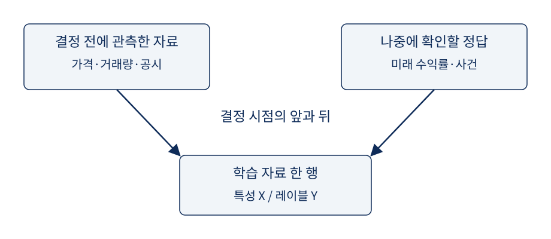
AIML Quant 도해 · 본문 설명을 도식화했다.관측 시각뿐 아니라 관측 기간도 중요합니다. 몇 초 동안만 남는 주문의 압력을 한 달 뒤 수익률 예측에 쓰면, 예측 대상이 결정되기 훨씬 전에 정보가 사라질 수 있습니다. 반대로 아주 느리게 변하는 기업 자료만으로 순간적인 가격 움직임을 설명하기도 어렵습니다. 입력을 얼마나 자주 갱신하는지에 따라 거래 횟수와 비용까지 달라집니다. 이 장은 경제적 이유, 정보의 시간, 거래 방식이 서로 맞도록 특성을 설계하는 방법을 다룹니다.
같은 이유에서 출발한 입력들의 묶음을 특성 계열이라고 부릅니다. 예를 들어 최근 움직임의 지속성을 측정하는 여러 입력은 모멘텀 계열에 속합니다. 이 장에서는 계열마다 무엇을 주장하는지, 어떻게 계산할지, 어떤 선택이 가설의 뜻을 바꾸는지, 언제 실패하는지를 함께 살펴봅니다. 숫자를 만드는 방법과 그 숫자를 믿을 조건을 함께 다룹니다.
읽는 순서도 이 설계 과정을 따릅니다. 8.1절은 거래 아이디어를 특성 명세로 바꾸는 틀을 만듭니다. 8.2절은 한 상품의 가격과 거래 자료로 만들 수 있는 특성을, 8.3절은 여러 상품을 함께 보아야 만들 수 있는 특성을 설명합니다. 8.4절에서는 기업 실적·달력·거시 지표처럼 느리게 바뀌는 자료를 다룹니다. 여기서는 어떤 날짜의 값인가뿐 아니라 그 값을 언제 발표했는지가 특히 중요합니다.
8.5절은 여러 계열에 공통으로 나타나는 특성의 유형과 단순 집계의 한계를 정리합니다. 8.6절은 방향을 예측하는 입력과 거래 환경을 설명하는 입력을 결합합니다. 조합을 늘릴수록 우연히 좋아 보이는 후보도 늘어나므로, 시험한 선택의 수를 함께 관리합니다. 마지막 8.7절은 이 내용을 하나의 특성 설계 원칙으로 모읍니다.
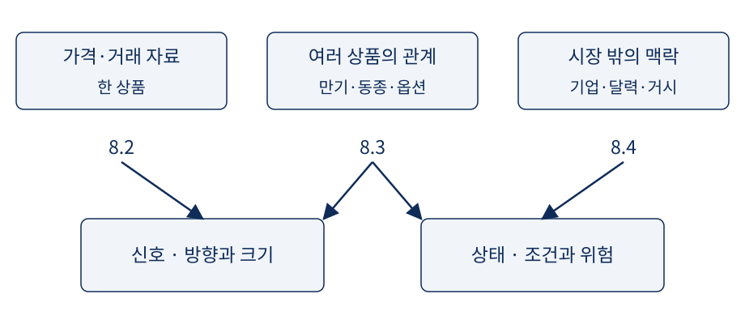
AIML Quant 도해 · 본문 설명을 도식화했다.이 장을 읽고 나면 전략 아이디어를 계산식으로 옮기되, 그 계산식에 필요한 관측 시각과 기간, 비교 기준, 실패 조건을 설명할 수 있어야 합니다. 또 특성의 의미를 바꾸는 선택과 잡음을 줄이는 선택을 구분하고, 다른 특성과 결합했을 때 정말 새로운 정보가 늘었는지 확인할 수 있어야 합니다. 완성한 명세는 7장에서 배운 특성 선별 절차의 입력이 됩니다.
8.1 경제적 동인의 포착과 구성 — 서사를 계산 가능한 주장으로
숫자를 고르기 전에 그 숫자가 담을 주장을 정한다
어떤 종목이 최근 한 달 동안 올랐다는 사실을 모델에 알려 주고 싶다고 해 봅시다. 지난 21거래일의 수익률을 계산하면 입력 하나를 만들 수 있습니다. 그러나 왜 그 숫자를 넣는지 묻는 순간, 계산식 뒤에 가설이 필요해집니다. 새 정보가 가격에 천천히 반영되기 때문에 최근 상승이 당분간 이어질 것이라고 보는지, 아니면 일시적인 매수 때문에 오른 가격이 곧 되돌아올 것이라고 보는지 정해야 합니다. 같은 과거 수익률에서도 기대하는 방향이 달라질 수 있습니다.
최근 상승이 컸던 날만 모으면 이후 수익률도 다른 모습을 보일까요? 모든 날의 미래 수익률을 모은 분포와, 최근 상승이 컸던 날의 미래 수익률 분포를 비교해 볼 수 있습니다. 이처럼 어떤 관측값을 알았을 때 가능한 결과와 그 확률이 어떻게 달라지는지를 조건부 분포로 표현합니다. 특성은 이 차이가 생길 것이라는 가설을 계산 가능한 값으로 옮깁니다. 예측 대상은 수익률뿐 아니라 앞으로의 변동성이나 사건의 발생 여부일 수도 있습니다.
이해용으로 최근 수익률이 5%인 날을 골라, 그 뒤 h거래일 수익률이 0 이하일 확률을 묻는다고 합시다. 최근 수익률이라는 특성을 X, 관측값 0.05를 x로 적습니다. 앞으로의 수익률은 Y, 손실 여부를 나눌 기준 0은 y입니다. 이 질문을 일반적인 기준값에 대해 적으면 다음과 같습니다.
\[F_{Y\mid X=x}(y)=P(Y\le y\mid X=x)\]
이 예의 F는 최근 수익률이 5%라는 조건에서 미래 수익률이 기준 y 이하일 확률입니다. 누적분포함수라는 이름은 기준 이하의 결과를 모두 모아 확률을 센다는 뜻입니다. 오른쪽의 P도 확률을 나타내며, 세로 막대 뒤의 X=x가 붙인 조건입니다. 수익률 2%는 0.02처럼 소수로 계산하고, 확률은 0부터 1까지로 적습니다.
이해용 자료에서 전체 100일 중 미래 수익률이 0 이하인 날이 55일이었다고 합시다. 이번에는 최근 수익률이 정확히 5%인 날 대신 5%를 넘는 날을 한데 모읍니다. 이 조건에 해당한 20일 중 미래 수익률이 0 이하인 날이 8일이면 다음과 같이 비교합니다.
\[\begin{gathered}P(Y\le0)=55/100=0.55\\P(Y\le0\mid X>0.05)=8/20=0.40\end{gathered}\]
전체에서는 55%였던 비율이 조건을 붙인 표본에서는 40%입니다. 분포의 한 지점이 어떻게 달라지는지 보여 주는 계산이며, 이런 작은 표본의 차이만으로 가설을 입증하지는 못합니다. 다른 시기에서도 차이가 유지되는지, 이미 가진 정보에 더해 도움이 되는지 확인해야 합니다.
이 주장은 6장에서 세운 전략 이야기와 이어져야 합니다. 전략 계열은 어떤 정보에 주목할지 정해 줍니다. 그 전략이 다른 참가자보다 유리할 수 있는 이유인 우위 가설은 왜 그 정보에 예측력이 남아 있을지 설명합니다. 특성은 그 이유를 실제 데이터 변환으로 옮깁니다. 그럴듯한 이야기를 붙이는 것과, 이야기가 요구하는 정보를 정확히 측정하는 것은 별개의 일입니다.
같은 21거래일 수익률도 계산 시점과 비교 대상이 다르면 다른 입력이 됩니다. 먼저 결정을 내릴 때 이미 관측할 수 있는 자료인지 확인합니다. 다음으로 과거 얼마 동안의 자료를 모을지 정합니다. 이 기간이 룩백 창입니다.
마지막으로 자기 과거와 비교할지, 같은 날 다른 종목과 비교할지 고릅니다. 이렇게 만든 입력이 7장의 레이블을 예측할 때 이미 가진 특성에 더해 어떤 정보를 보탤지 적습니다. 기존 특성을 이름만 바꾸어 한 번 더 넣으면 새로운 정보가 생기지 않기 때문입니다.
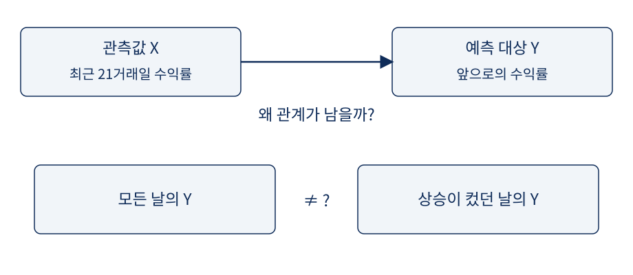
AIML Quant 도해 · 본문 설명을 도식화했다.첫 번째 필터 · 관측 기간을 예측 기간과 거래 조건에 맞춘다
첫 질문은 맞히려는 미래가 얼마나 먼지입니다. 체결 직전의 주문 변화는 몇 초 뒤 가격에 유용할 수 있지만, 몇 달 뒤에도 같은 힘을 가질지는 별도 문제입니다. 반대로 기업의 장기적인 수익성은 느린 투자 판단에 쓰일 수 있어도 다음 몇 초의 체결 가격을 직접 알려 주지는 않습니다. 특성이 담은 정보가 남아 있는 시간과 레이블이 측정하는 시간을 함께 보아야 합니다.
체결 직전의 정보로 다음 몇 초를 예측한다면, 그 정보가 실제 체결 때까지 남아 있어야 합니다. 이처럼 특성이 담은 시간과 예측·거래의 시간을 맞추는 일이 기간 정렬입니다. 과거를 얼마나 길게 볼지와 함께, 자료를 초마다 볼지 하루마다 볼지도 정합니다. 여러 관측을 하나로 요약하는 방법과 결정 후 체결까지 걸리는 시간도 맞춰야 합니다.
처음 시도할 기간은 전략의 성격에서 찾을 수 있습니다. 몇 초 뒤를 본다면 호가·체결·주문의 흐름처럼 거래가 이루어지는 세부 구조를 살펴봅니다. 중간 기간에서는 추세와 반전, 가격이 흔들리는 정도가 중요할 수 있습니다. 발표 뒤 가격이 한 번에 조정되지 않고 한동안 같은 쪽으로 움직이는 사건 드리프트도 이때 살펴볼 현상입니다.
더 느린 투자 판단에서는 보유하거나 자금을 조달하며 얻는 수익인 캐리를 볼 수 있습니다. 만기별 가격의 관계인 기간구조나 기업의 기초 여건도 후보입니다. 이 구분은 어떤 기간부터 시험할지 알려 주는 출발점입니다. 적절한 기간은 각 가설과 거래 조건에 맞춰 확인합니다.
특성의 갱신 빈도가 거래에 미치는 영향도 적어 둡니다. 점수가 매일 크게 바뀌면 보유 종목이나 수량도 자주 바뀔 수 있습니다. 이처럼 포지션을 바꾸는 정도가 회전율입니다. 회전율이 높으면 거래 비용이 커지기 쉽고, 거래량이 적은 상품에서는 원하는 가격으로 체결하기 어려울 수 있습니다. 특성을 자주 갱신하는 선택이 6장의 거래 설정과 양립하는지 확인하는 이유입니다.
8.6절에서는 과거 126일의 모멘텀으로 앞으로 20일을 예측하는 예를 봅니다. 긴 과거가 짧은 미래를 예측하는 데 필요한 정보를 담을 수도 있는 것입니다. 기간 정렬의 핵심은 그 미래를 예측하려는 가설에 맞춰 관측 기간을 정하는 데 있습니다. 그림 8.1의 기간 표기와 이 예의 대조는 검증 메모에 남겼습니다.
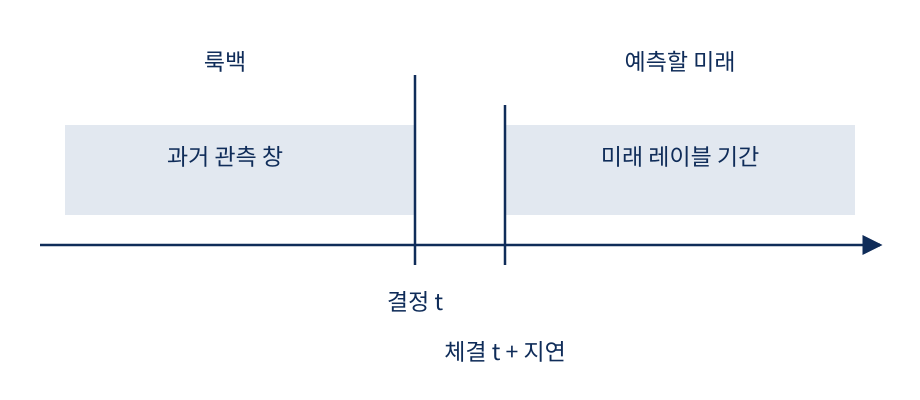
AIML Quant 도해 · 본문 설명을 도식화했다.두 번째 필터 · 수익이 생길 경제적 이유를 설명한다
기간을 정했다면, 그 시간 동안 왜 수익이 생길 수 있는지 생각합니다. 새 정보가 천천히 가격에 반영될 수도 있고, 일시적인 주문 압력이 풀리며 가격이 되돌아올 수도 있습니다. 원서는 여기에 위험을 떠안는 보상과 예정된 일정에 따른 거래 수요를 더해 네 가지 동인 가설을 설명합니다. 각 가설이 실제로 작동하는지는 시장과 거래 조건을 정한 뒤 검증해야 합니다.
지속성은 최근의 움직임이 이어질 수 있다는 생각입니다. 투자자가 모든 정보를 즉시 검토하지 못하거나 큰 기관의 주문이 나뉘어 집행되면, 새 정보와 자금의 영향이 가격에 여러 번에 걸쳐 반영될 수 있습니다. 모멘텀이나 추세 특성은 이런 느린 반영을 측정하려 합니다. 가격이 올랐다는 사실만으로 지속성을 입증한 것은 아닙니다. 거래 기간과 비용을 정한 뒤 실제로 예측에 도움이 되는지 확인해야 합니다.
정해진 비중으로 돌아가려고 자산을 파는 주문이 몰렸다고 해 봅시다. 이런 리밸런싱은 일시적으로 가격을 누를 수 있습니다. 주문이 지나간 뒤 압력이 풀리면 가격이 되돌아올 수 있다는 생각이 반전 가설입니다.
위험을 줄이기 위한 헤지 주문도 비슷한 압력을 만들 수 있습니다. 다른 참가자에게 매수·매도 호가를 제시하는 시장조성자 역시 보유 물량을 조절하며 거래합니다. 반전 특성은 이런 거래 수요 때문에 생긴 일시적인 가격 변화를 겨냥합니다.
급할 때 팔기 어려운 상품을 보유하면, 쉽게 팔 수 있는 상품보다 더 많은 수익을 요구할 수 있습니다. 다른 사람이 피하려는 위험을 떠안는 대가로 수익을 기대하는 위험 보상 가설입니다. 여기서 팔기 어려운 위험이 유동성 위험입니다.
드물지만 큰 손실이 나는 꼬리 위험이나, 빌린 자금을 유지하기 어려워지는 자금조달 위험도 보상의 이유가 될 수 있습니다. 캐리는 이런 동인으로 설명하는 경우가 많습니다. 평소의 작은 수익과 함께 그 대가로 감수하는 위험을 살펴봐야 합니다.
선물 만기가 다가오면 투자자는 가까운 만기 계약을 정리하고 더 먼 만기 계약으로 보유를 옮깁니다. 이것이 롤이며, 일정에 따라 반복되는 거래 수요를 만들 수 있습니다. 달력의 특정 시점이나 미리 예고된 발표도 이런 수요의 계기가 됩니다.
무기한 선물에서는 정해진 때 펀딩을 주고받습니다. 펀딩은 무기한 선물과 현물의 가격 차이를 줄이려는 주기적인 지급액입니다. 이처럼 시장의 규칙과 일정에서 패턴을 찾는 것이 예측 가능한 일정 가설입니다. 일정은 미리 알 수 있지만, 가격 반응과 비용은 따로 확인해야 합니다.
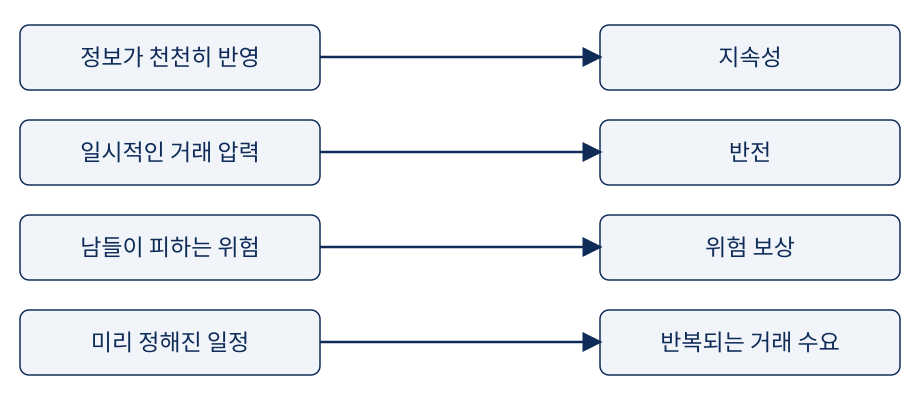
AIML Quant 도해 · 본문 설명을 도식화했다.세 번째 필터 · 방향을 말하는 신호와 거래 여건을 말하는 상태를 나눈다
경제적 이유를 정한 다음에는 특성의 역할을 구분합니다. 최근 상승이 이어질 것이라는 점수는 앞으로의 방향이나 기대 수익률을 예측하려는 신호입니다. 반면 가격이 얼마나 크게 흔들리는지, 얼마만큼의 주문을 소화할 수 있는지, 자금을 유지하는 비용이 어떤지는 거래의 조건을 설명하는 상태 변수입니다.
시장이 급격히 흔들릴 때는 같은 매수 신호라도 거래를 쉬기로 할 수 있습니다. 조건을 충족할 때만 신호를 켜는 게이팅입니다.
거래를 계속하되 변동성이 커질수록 투자 금액을 줄일 수도 있습니다. 상태에 따라 신호나 주문 크기를 연속적으로 조절하는 스케일링입니다. 상태 변수는 이처럼 신호를 언제, 얼마나 크게 쓸지 정하는 데 보탬이 됩니다.
운전에 빗대면 신호는 어느 쪽으로 갈지에 대한 판단이고 상태는 노면의 여건과 비슷합니다. 빙판인지 안다고 목적지 방향이 정해지지는 않지만, 속도를 줄이거나 출발을 미루는 판단에는 중요합니다. 비유가 보여 주는 것은 역할의 차이입니다. 다만 금융시장에서는 노면처럼 상태를 직접 관측하기 어렵고, 그 영향도 미리 알기 어렵습니다.
따라서 상태 변수와 미래 수익률 사이의 상관이 작다는 이유만으로 상태를 버려서는 안 됩니다. 신호를 단독으로 보았을 때와 특정 상태에서만 사용했을 때의 결과가 다를 수 있기 때문입니다. 상태 자체의 관계와 신호와 결합했을 때의 관계는 다른 질문입니다. 이 결합은 8.6절에서 다시 다룹니다.
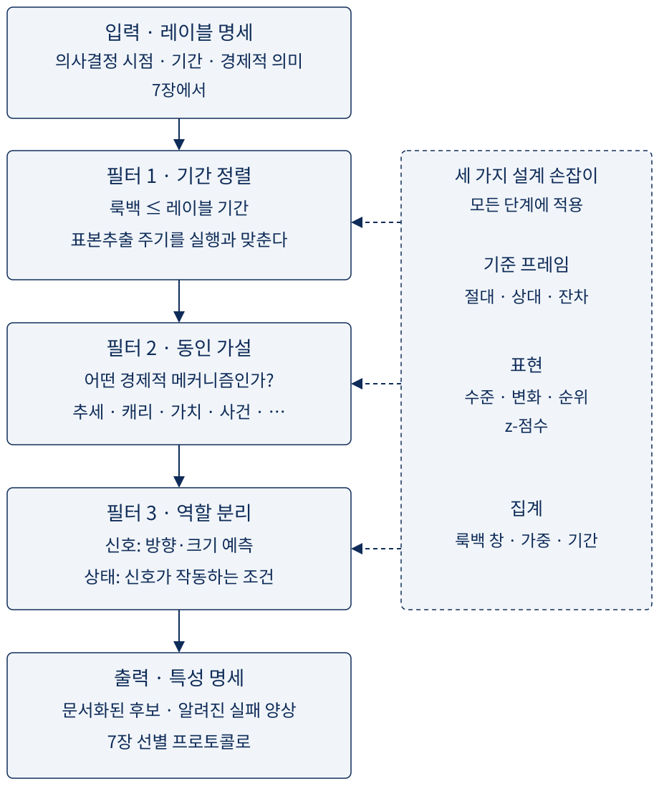
원서 그림 8.1의 모든 블록·라벨·연결을 재작도했다. 룩백 부등식의 해석은 앞 문단을 함께 읽는다.그림 맨 위의 레이블 명세에는 무엇을 언제 예측하는지가 적힙니다. 이를 바탕으로 기간과 동인, 역할을 차례로 정하면 맨 아래의 특성 명세가 만들어집니다. 명세에는 계산법과 예상되는 실패 조건을 함께 남깁니다. 오른쪽의 공통 설계 선택도 이 과정 내내 적용됩니다. 비교 기준이나 값의 표현 방식을 바꾸면 측정하려던 가설 자체가 달라질 수 있기 때문입니다.
박스 8.1: 메커니즘 없는 패턴
자료를 탐색하다 보면 이유를 설명하지 못하는 규칙성도 발견합니다. 원서는 이런 패턴을 곧바로 버리라고 요구하지 않습니다. 경제적 설명이 있으면 어떤 상황에서 효과가 약해질지 미리 예상할 수 있지만, 설명이 없으면 그 실마리가 적으므로 더 높은 증거 기준을 적용하라고 합니다. 결과를 잠정적인 것으로 다룹니다.
많은 후보를 찾아볼수록 우연히 좋은 결과를 고를 가능성도 커집니다. 여러 가설을 함께 시험하는 다중 검정에서는 이렇게 탐색한 수까지 반영해 증거를 판단해야 합니다.
자료 일부로 학습하고 나머지로 평가하는 교차검증을 써도, 평가 결과를 보며 후보를 계속 바꾸면 그 평가 자료에 간접적으로 맞추게 됩니다. 그래서 후보 선택에 한 번도 쓰지 않은 최종 확인용 자료를 별도로 남깁니다. 이것이 홀드아웃입니다.
다음으로 비슷한 상품, 다른 시장 환경, 정의를 조금 바꾼 후보에서도 결과가 유지되는지 확인합니다. 특정 날짜나 특정 설정 하나에서만 보인다면 그 설정에 우연히 맞았을 가능성을 의심합니다. 실제 거래를 시작한 뒤에도 효과가 약해지는지 관찰합니다. 배포 전 검사를 통과했다는 사실이 이후의 효과를 보장하지 않으므로, 증거가 약해지면 사용을 중단할 수 있어야 합니다.
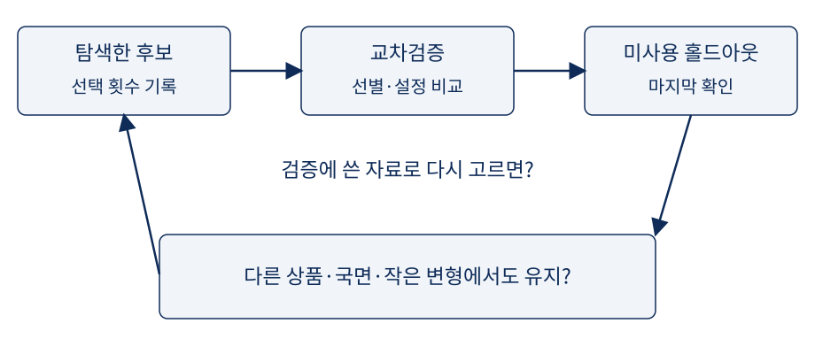
AIML Quant 도해 · 본문 설명을 도식화했다.선수지식 · 순위 IC는 특성의 예측 정보를 확인하는 도구다
후보를 비교할 때는 입력 값이 미래 결과의 순서를 얼마나 잘 가르는지 볼 수 있습니다. 같은 날 여러 종목에 특성 점수를 매기고, 그 뒤 정해진 기간의 수익률도 종목별로 계산합니다. 두 값의 순위를 비교한 상관이 순위 IC, 즉 순위로 계산한 정보계수입니다. 높은 점수를 준 종목이 높은 미래 수익률을 보였는지 확인하는 도구입니다.
이해용으로 세 종목의 점수 순위와 미래 수익률 순위가 모두 A, B, C라면 순위 IC는 1입니다. 순서가 정확히 뒤집히면 −1입니다. 여러 종목과 날짜에서 순서가 특별히 맞지 않으면 값은 대체로 0 주변에 놓입니다. 아래에서는 일부 순서만 맞는 예도 직접 계산합니다.
같은 날 t에 세 종목의 점수를 매겼다고 합시다. 관측 가능한 점수 x를 크기 순서로 바꾼 값이 R이고, 그 뒤 h거래일 수익률 y의 순위가 S입니다. 두 순위가 얼마나 함께 움직이는지 상관계수 Corr로 계산하면 그날의 순위 IC가 됩니다.
\[\begin{gathered}IC_t=\operatorname{Corr}_{i}(R_{i,t},S_{i,t})\\R_{i,t}=\operatorname{rank}_{i}(x_{i,t})\\S_{i,t}=\operatorname{rank}_{i}(y_{i,t+h})\end{gathered}\]
종목 A의 점수 순위가 1이면 R의 A에 해당하는 값에 1을 넣고, 미래 수익률 순위가 2라면 S에는 2를 넣습니다. 식의 i는 이렇게 종목을 하나씩 가리킵니다. 같은 날 t의 여러 종목을 비교하며, h는 예측할 거래일 수입니다. 순위와 IC에는 단위가 없고 IC는 −1부터 1까지입니다. 동점에는 평균 순위를 준 뒤 상관을 계산합니다.
동점이 없는 n종목에서는 각 종목의 두 순위 차이 d를 써서 같은 값을 더 간단히 계산할 수 있습니다.
\[\begin{gathered}d_i=R_{i,t}-S_{i,t}\\IC_t=1-\frac{6\sum_{i=1}^{n}d_i^2}{n(n^2-1)}\end{gathered}\]
세 종목의 점수 순위가 (1, 2, 3), 미래 수익률 순위가 (1, 3, 2)라면 순위 차이는 (0, −1, 1)이고 제곱합은 2입니다. 따라서 다음처럼 IC 0.5를 얻습니다.
\[IC_t=1-\frac{6\times2}{3(3^2-1)}=1-\frac{12}{24}=0.5\]
아래 산점도는 해설판이 인용한 Primer의 10종목 예를 다시 그린 것입니다. A는 점수 순위 10이지만 수익률 순위 6이고, B는 각각 9와 10입니다. 점들이 점선 위에만 놓인다면 두 순위가 모두 같아 IC 1이 됩니다. 이 예의 열 종목은 순위 차이 제곱합이 110이므로 IC는 약 0.33입니다.
계산할 때 모든 날짜와 종목을 한꺼번에 섞어 상관 하나만 만들지 않습니다. 날짜별로 종목 사이의 상관을 계산하고, 그 IC가 시간에 따라 어떻게 달라지는지 봅니다. 그렇지 않으면 특정 시기의 시장 전체 움직임과 종목을 구분하는 능력이 섞일 수 있습니다. 값 자체보다 순위를 쓰면 일부 극단적인 수익률이 상관을 크게 흔드는 영향도 줄일 수 있습니다.
IC는 높은 점수를 준 종목이 이후에도 높은 수익률 순위에 놓였는지 알려 줍니다. 실제 수익을 알려면 점수를 투자 수량으로 바꾸는 방법과 거래 빈도, 비용을 더해야 합니다. Primer는 실제 주식 횡단면의 평균 IC가 작은 경우가 많다고 안내합니다. 지나치게 높고 안정적인 값이 보인다면 미래 정보가 섞였는지도 확인합니다.
이해용으로 IC가 0.05인 예측을 같은 평가 기간에 서로 독립적으로 100번 활용할 수 있다고 합시다. 8.5절에서 볼 근사 관계는 예측의 정확도와 독립적인 기회 수를 함께 고려합니다.
\[IR \approx IC\sqrt{B}\]
위 예의 독립 기회 수 100이 식의 폭 B입니다. IC 0.05에 √100을 곱하면 정보비율 IR의 근삿값을 얻습니다. IR은 기준 대비 초과수익의 평균을 그 초과수익의 표준편차로 나눈 값입니다. IC는 예측 정보의 정확도를 요약합니다. 세 값에는 단위가 없지만, IR을 평가하는 기간과 B를 세는 기간은 같아야 합니다. 이 관계는 가정을 둔 근사이므로 순위 IC만 넣어 실제 전략의 성과를 확정할 수는 없습니다.
관계를 읽는 연습으로 IC를 0.05, 독립 기회 B를 100이라고 두면 근삿값은 다음과 같습니다.
\[0.05\sqrt{100}=0.05\times10=0.5\]
500개 종목을 매일 관측해도 독립적인 기회가 날마다 500개씩 생기는 것은 아닙니다. 같은 업종 종목들이 함께 움직이거나 같은 신호가 반복될 수 있기 때문입니다. 따라서 B는 원시 종목 수와 구분해 세어야 합니다. 실제 성과에는 비용과 포지션 구성도 영향을 줍니다.
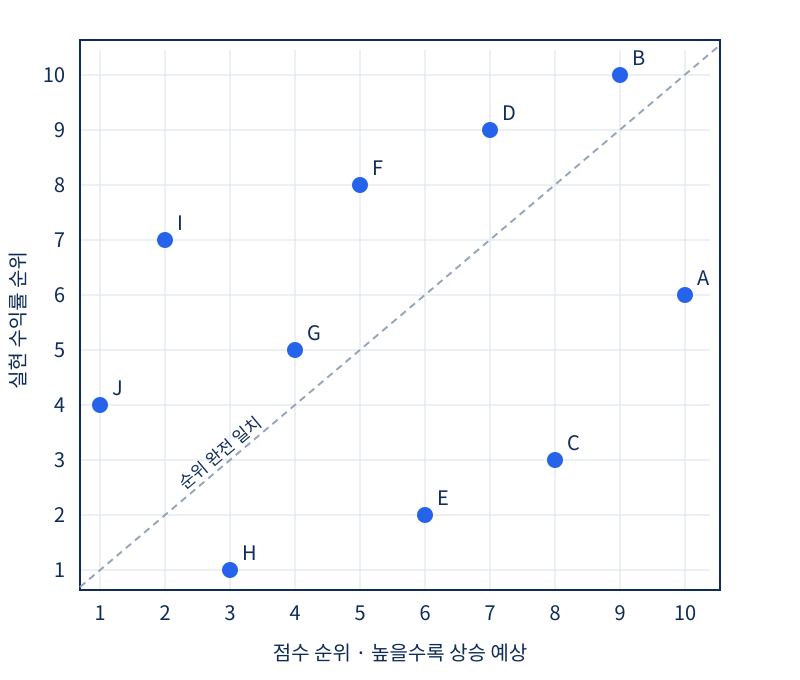
공식 Primer의 10종목 산점도 · 원본 판독값. A–J의 순위 좌표를 판독하고 IC를 다시 계산했다.기준 프레임 · 자기 과거와 비교할지 다른 종목과 비교할지 정한다
같은 5% 상승도 비교 대상에 따라 뜻이 달라집니다. 한 종목이 과거보다 강하게 올랐는지 보려면 그 종목의 시간 흐름을 비교합니다. 이것이 시계열 관점입니다. 같은 날 다른 종목은 10% 올랐는데 이 종목만 5% 올랐다면 상대적으로는 약할 수 있습니다. 같은 시점의 여러 종목을 비교하는 것이 횡단면 관점입니다.
이처럼 무엇을 기준으로 값을 읽을지 정하는 선택이 기준 프레임입니다. 자기 움직임의 지속성을 주장하는 가설과 동종 상품 사이의 상대적 강도를 주장하는 가설은 다릅니다. 계산 결과의 크기만 바뀌는 것이 아니라 질문 자체가 바뀌므로, 기준 프레임을 명세에 기록해야 합니다.
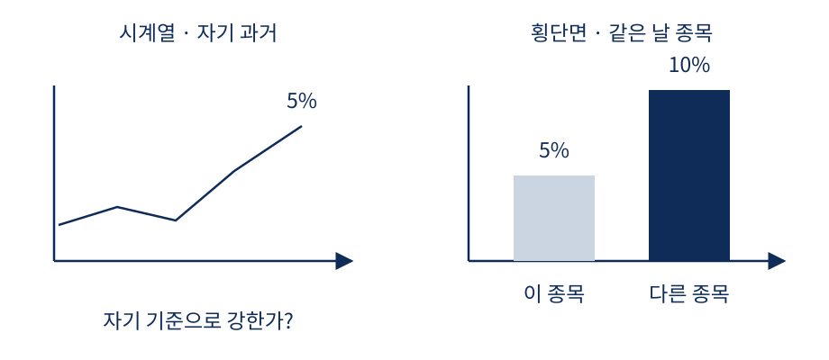
AIML Quant 도해 · 본문 설명을 도식화했다.표현 · 같은 관측값을 어떤 숫자로 전달할지 정한다
비교 대상을 정했다면 모델에 넣을 값의 모양을 고릅니다. 원래 수익률을 그대로 쓰거나 종목들 사이의 순위로 바꿀 수 있습니다. 5% 상승이 흔한 상품과 드문 상품을 비교하려면 각 상품의 변동성으로 나누어 평소 흔들림에 비해 얼마나 큰 움직임인지 표현할 수 있습니다. 이를 변동성 스케일링이라고 합니다.
이해용으로 관측값 100이 다른 값보다 지나치게 커서 계산을 지배한다고 합시다. 상한을 10으로 정해 100을 10으로 바꾸는 방법이 윈저화입니다. 정해 둔 상한·하한 밖의 값을 경계값으로 바꿉니다. 다만 드문 큰 움직임 자체가 중요하다면 이런 제한으로 정보를 잃을 수 있습니다.
다른 요인으로 설명되는 부분을 제외하고 싶을 때는 잔차화를 쓸 수 있습니다. 시장 전체가 올라 개별 종목도 오른 상황에서, 시장 움직임으로 설명한 뒤 남는 부분을 보려는 방식입니다. 남은 값이 무엇을 뜻하는지는 어떤 요인을 뺐는지에 달려 있습니다. 순위, 스케일링, 윈저화, 잔차화는 단순한 미관 조정이 아니므로 경제적 가설에 맞는지 따져 선택합니다.
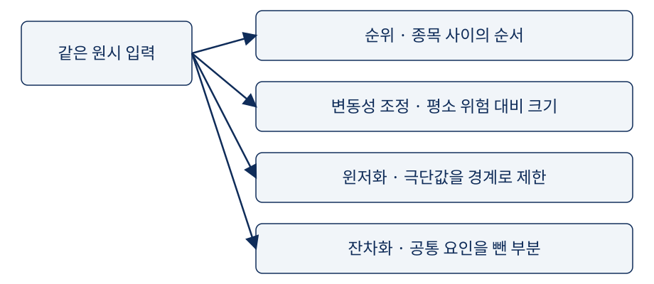
AIML Quant 도해 · 본문 설명을 도식화했다.집계 · 반응 속도와 안정성 사이에서 관측값을 요약한다
하루 자료만 보면 변화에 빠르게 반응할 수 있지만 우연한 흔들림도 큽니다. 여러 날을 평균하면 흔들림은 줄어드는 대신 최근 변화가 천천히 반영됩니다. 여러 관측을 어떤 기간과 가중치로 합칠지 정하는 집계는 이 두 효과를 맞바꾸는 선택입니다.
아래 이해용 그림에서는 같은 원자료를 최근 3개 관측으로 평균한 선과 7개로 평균한 선을 비교합니다. 긴 평균은 흔들림을 줄이지만 빠른 변화도 덜 드러냅니다. 입력이 어느 정도 빠른 변화까지 보여 주는지를 교재는 유효 대역폭이라고 부릅니다. 앞서 정한 예측 기간에 맞춰 평균 창의 길이와 가중치를 고르는 이유입니다.
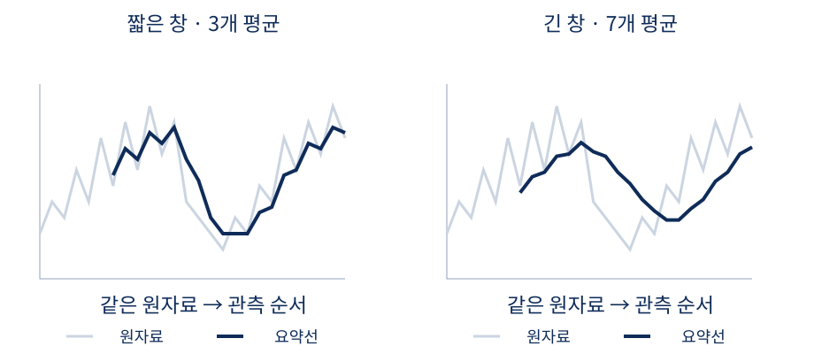
AIML Quant 도해 · 본문 설명을 도식화했다.표 8.1 · 계산법과 실패 조건을 특성 명세에 함께 적는다
다른 사람이 같은 입력을 다시 만들 수 있으려면 명세를 남겨야 합니다. 먼저 무엇을 왜 계산하는지 적습니다. 특성의 이름과 계열, 신호·상태 중 역할, 기대하는 동인과 경쟁 속에서도 그 기회가 남는 이유가 여기에 들어갑니다.
다음은 계산 조건입니다. 입력을 언제부터 관측할 수 있는지, 과거 얼마를 모아 어떻게 합치는지, 무엇과 비교하고 어떤 값으로 표현하는지 적습니다. 마지막으로 어떤 상황에서 실패할지도 남깁니다. 이 내용을 채울 수 있어야 시험할 가설이 분명한 특성이 됩니다.
| 기록할 항목 | 21일 모멘텀 | 실현 변동성 | 캐리(롤 수익률) |
|---|---|---|---|
| 이름 | mom_21d | rvol_20d | carry_roll |
| 계열 | 추세·모멘텀 | 변동성 | 기간구조 |
| 역할 | 신호 | 상태 | 신호 |
| 동인 | 지속성 | 위험 상태 | 위험 보상 |
| 입력 | 종가 | 종가 | 근월·원월 선물 |
| 룩백 | 21일 | 20일 | 현재 계약 |
| 기준 프레임 | 시계열 | 시계열 | 횡단면 |
| 표현 | 변동성으로 조정한 수익률 | 연율화 표준편차 | 연율화 백분율 |
| 실패 조건 | 군집화·국면 전환 | 낮은 변동성에서 낡아진 값 | 롤 날짜의 계산상 인공물 |
원서 표 8.1의 세 예.
표에서 모멘텀과 캐리는 모두 신호이지만 동인이 다릅니다. 모멘텀은 최근 움직임의 지속성을, 캐리는 위험을 부담하는 대가를 겨냥합니다. 실현 변동성은 과거에 실제로 관측한 수익률의 흔들림을 요약한 상태 변수입니다. 표의 연율화는 서로 다른 관측 간격의 크기를 연간 기준으로 표현한다는 뜻이며, 다음 해의 변동성을 미리 확정한다는 뜻은 아닙니다.
실패 조건도 계산법만큼 중요합니다. 같은 모멘텀을 쓰는 투자자가 몰리는 군집화나 시장 환경의 변화가 신호를 약화할 수 있습니다. 변동성 값은 과거 관측을 요약하므로 최근 위험 변화를 늦게 반영할 수 있습니다. 캐리는 만기를 바꾸는 날 가격 계열을 연결하는 방식에 따라 실제 수익이 아닌 계산상 튀는 값이 생길 수 있습니다. 실패 조건을 미리 적으면 성과가 바뀌었을 때 무엇을 확인할지 분명해집니다.
운영 시스템에서는 이 명세를 모아 특성 레지스트리로 관리합니다. 레지스트리는 이름만 모은 목록이 아니라 입력·계산·버전을 추적하는 기록입니다. 같은 이름의 특성을 실험마다 다르게 계산하는 일을 줄이고, 나중에 어느 버전의 값을 사용했는지 확인할 수 있게 합니다.
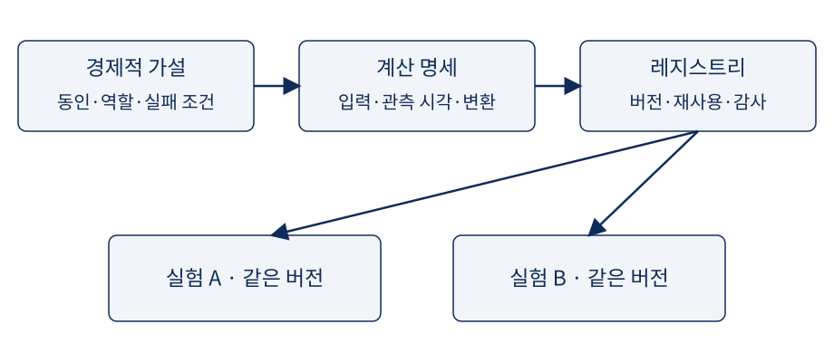
AIML Quant 도해 · 본문 설명을 도식화했다.완성한 명세를 7장의 선별 절차로 보낸다
명세를 완성하면 이제 후보를 평가할 차례입니다. 레이블의 기간을 지키면서 자료를 학습용과 평가용으로 나눕니다. 교차검증에서 이렇게 나눈 묶음을 폴드라고 합니다. 후보를 만들고 비교할 때 평가 폴드의 미래 정보를 이용하지 않는지 확인합니다.
기본 진단에는 날짜별 횡단면 IC와 십분위 스프레드가 있습니다. 후자는 특성 점수가 상위 10%인 종목 묶음과 하위 10%인 묶음의 미래 수익률 차이입니다. 점수 순서가 결과를 구분하는지 다른 방식으로 살펴봅니다. 이것도 포트폴리오의 실제 비용 차감 성과와 같지는 않습니다.
상태가 신호에 보탬이 되는지는 조건부로 확인합니다. 예를 들어 변동성을 낮음·중간·높음의 세 구간으로 나누고, 각 구간에서 모멘텀 IC를 비교합니다. 구간마다 관계가 다르다는 증거가 있어야 상태를 넣을 이유가 생깁니다. 표본을 나눠 우연히 생긴 차이일 수도 있으므로, 구간을 추가할 때마다 개선된다고 가정하지 않습니다.
이제 다음 절부터는 이 틀을 실제 특성 계열에 적용합니다. 8.2–8.4절은 롤링 창, 횡단면 순위, 간단한 계산식으로 관측값을 요약합니다. 롤링 창은 시간이 한 칸 지날 때마다 오래된 관측을 빼고 새 관측을 넣는 창입니다. 9장은 더 나아가 자료에 모형을 적합하고 그 모형이 추정한 값에서 특성을 꺼내는 방법을 다룹니다. 먼저 한 상품의 가격과 거래 자료만으로 만들 수 있는 특성부터 살펴봅니다.
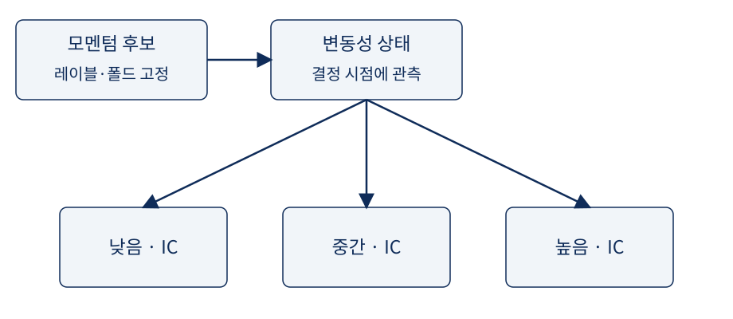
AIML Quant 도해 · 본문 설명을 도식화했다.8.2 가격 파생 특성 — 어떤 상품에나 있는 최소 데이터로 만드는 계열
같은 가격에서도 서로 다른 경제적 질문을 만든다
한 종목의 가격이 100에서 105로 올랐다고 합시다. 지속성을 보는 사람은 상승이 이어질지를 묻고, 반전을 보는 사람은 기준 가격에서 너무 멀어진 것은 아닌지 묻습니다. 위험을 관리하는 사람은 오르는 동안 얼마나 크게 흔들렸는지를, 거래 담당자는 원하는 수량을 감당할 거래량이 있었는지를 봅니다. 같은 시계열도 어떤 메커니즘과 역할을 정하느냐에 따라 다른 특성이 됩니다.
이 절의 출발 자료는 상품 자체의 가격, 거래량, 체결 자료입니다. 특별한 기업 공시나 다른 상품의 가격을 구하지 않아도 기본 계열을 만들 수 있습니다. 다만 체결·호가 자료가 없는 일봉에서 주문장의 세부 정보를 직접 관측했다고 주장할 수는 없습니다. 어떤 상품에서든 같은 경제적 질문을 던질 수 있다는 말과, 어느 자료에서든 똑같은 계산을 할 수 있다는 말은 구분해야 합니다.
| 계열 | 경제적 주장 | 주된 역할 | 전형적 기간 |
|---|---|---|---|
| 추세/모멘텀 | 최근 성과가 지속된다 | 신호 | 수시간–수개월 |
| 반전 | 가격이 앵커로 되돌아간다 | 신호 | 수초–수일 |
| 변동성/꼬리 위험 | 위험 조건이 크기 조정과 게이팅을 정한다 | 상태 | 모든 기간 |
| 유동성/거래 가능성 | 비용과 용량이 신호를 걸러 낸다 | 상태 | 모든 기간 |
| 미시구조/주문 흐름 | 정보를 가진 흐름이 가격을 움직인다 | 신호/상태 | 수초–수시간 |
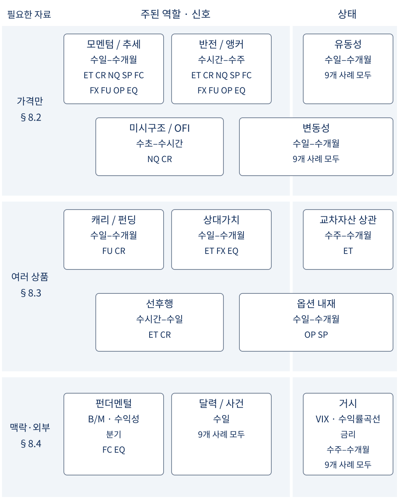
자료 요구를 행으로, 신호·상태 역할을 열로 읽는다. 변동성과 옵션 내재는 두 역할 사이에 걸친다. 원서 그림 8.2의 13계열·기간·사례 약어를 재작도했다.그림 상자의 약어는 각 계열을 사용한 사례 연구를 가리킵니다. 약어와 사례의 전체 대응은 검증 메모에서 확인할 수 있습니다. 반전이 작동할 기간은 앵커와 거래 조건에 따라 달라지므로, 그림과 표의 기간을 출발점으로 실제 레이블과 체결 조건을 명세합니다.
그림의 세로 방향은 필요한 자료가 어떻게 늘어나는지를 보여 줍니다. 지금 다루는 가격 파생 계열 다음으로, 여러 상품의 관계를 쓰는 계열과 외부 맥락을 쓰는 계열이 이어집니다. 가로 방향은 신호와 상태의 차이입니다. 변동성처럼 예측 대상에 따라 두 역할을 맡을 수 있는 계열도 있습니다. 표와 그림은 각 계열을 어느 칸에 고정하려는 것이 아니라, 계산을 시작하기 전에 자료와 역할을 확인하도록 돕습니다.
계열을 살펴볼 때는 네 질문을 유지합니다. 무엇이 결과를 바꿀 것이라는 주장인지, 거래 지연을 감안해 어느 기간에서 작동할 수 있는지, 어떤 설계 선택이 그 주장의 뜻을 바꾸는지, 과거 시험과 실제 거래에서 어떻게 실패하는지입니다. 계열 이름이 같아도 이 답이 다르면 같은 특성으로 취급하지 않습니다.
공통으로 확인할 조건도 있습니다. 관측 기간과 갱신 주기는 레이블과 실행 지연에 맞아야 합니다. 또 값의 분포가 시간에 따라 크게 이동하면 모델이 과거의 숫자 크기를 현재와 다르게 해석할 수 있습니다. 예를 들어 가격 수준은 장기간 상승해도 수익률이나 순위는 상대적으로 비교하기 쉬울 수 있습니다. 그렇다고 수준값을 모두 버리라는 뜻은 아닙니다. 수준 자체에 경제적 의미가 있다면 그 이유와 분포 변화를 확인한 근거를 남깁니다.
과거 얼마 동안의 변화인지, 어느 기준점에서 얼마나 떨어졌는지에 따라 같은 가격도 다른 질문을 만듭니다. 비교할 종목 집단이나 기준점을 바꾸면 가설의 뜻이 바뀝니다.
계산값의 우연한 흔들림을 줄이는 선택도 있습니다. 여러 날을 길게 평균하면 값은 안정되지만 새 변화를 늦게 따라갑니다. 극단값을 제한해도 흔들림은 줄지만 실제 큰 움직임을 작게 잴 수 있습니다. 이런 이득과 왜곡을 함께 기록해야 합니다.
관측이 적어 어느 종목의 추정값이 크게 튀었다고 합시다. 그 값을 전체 평균 같은 기준값 쪽으로 당기면 우연한 흔들림을 줄일 수 있습니다. 이 방법이 축소입니다.
앞에서 본 윈저화는 정한 상·하한 밖의 값만 경계값으로 바꿉니다. 제한이 너무 강하면 측정하려던 큰 움직임까지 지워 가설의 뜻을 바꿀 수 있습니다. 8.6절에서는 이 선택도 탐색 기록에 남깁니다.
구현 · 가격·거래량과 거래 기록의 두 노트북
원서는 이 절의 계산을 두 노트북으로 나눕니다. 01_price_volume_features는 한 봉의 가격·거래량 이력에서 추세, 반전, 변동성을 만듭니다. 02_microstructure_features는 체결 기록처럼 더 촘촘한 자료에서 거래 방향과 가격 충격을 계산합니다. 둘 다 가격에서 출발하지만 두 번째 계산이 요구하는 관측을 첫 번째 일봉 자료만으로 대신할 수는 없습니다. 뒤의 사례마다 어떤 자료와 계산 경로를 썼는지 이 구분으로 읽습니다.
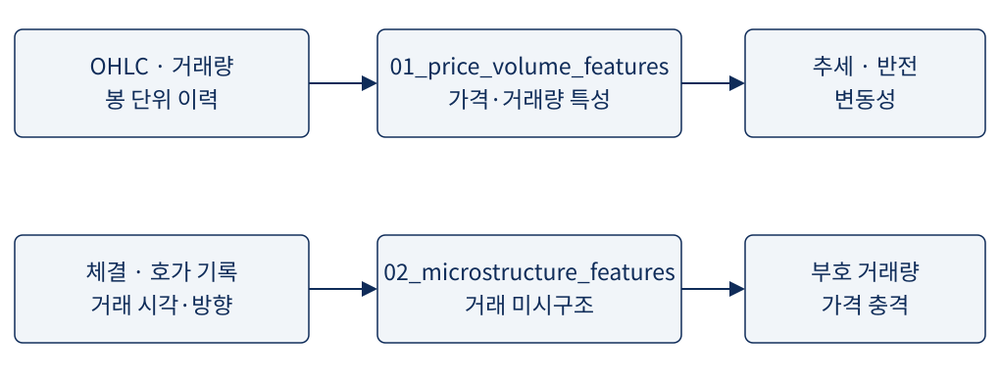
AIML Quant 도해 · 본문의 두 노트북과 관측 자료를 구분했다.추세와 모멘텀 · 끝점의 변화와 움직인 경로를 구분한다
최근 성과가 관련 기간의 미래 성과로 이어질 것이라는 것이 모멘텀의 지속성 주장입니다. 한 종목의 과거 움직임으로 그 종목을 판단하는 시계열 모멘텀과, 같은 날 다른 종목보다 강했는지로 상대 성과를 판단하는 횡단면 모멘텀은 서로 다른 질문입니다. 모든 종목이 올랐어도 상대적으로 약한 종목은 횡단면 순위가 낮을 수 있습니다.
측정 방법에 따라서도 의미가 달라집니다. 누적 수익률은 창의 시작과 끝 사이에서 얼마나 움직였는지를 봅니다. 이동평균은 가격을 일정 기간 평균해 일시적인 흔들림을 줄인 계열입니다. 그 기울기를 보거나 짧은 평균과 긴 평균이 교차하는지를 보면 경로가 얼마나 지속적으로 움직이는지에 주목할 수 있습니다. 같은 출발점과 끝점을 가진 경로도 중간에 크게 출렁였는지에 따라 이동평균 신호가 달라집니다.
일간 1% 움직임이 흔한 종목과 매우 드문 종목을 같은 수익률로 비교하면 평소 위험의 차이를 놓칩니다. 서로 다른 크기를 비교 가능한 척도로 바꾸는 정규화가 필요한 이유입니다. 많이 쓰는 방법은 룩백 수익률을 그동안 실제로 흔들린 정도로 나누는 것입니다. 이 흔들림을 요약한 실현 변동성의 계산은 뒤에서 살펴봅니다.
시계열 모멘텀에서는 이 변동성 조정이 크기를 맞추는 데 큰 역할을 합니다. 횡단면 모멘텀에서는 같은 날 종목별 점수를 순위로 바꾸어 상대적인 강도를 표현할 수도 있습니다.
최근 관측에 큰 가중치를 주면 새 움직임에 빨리 반응하지만 짧은 잡음에도 민감해집니다. 룩백과 보유 기간뿐 아니라 오래된 관측의 비중이 얼마나 빨리 줄어드는지도 가설의 일부입니다.
시장이나 업종이 오른 영향을 빼고 남은 수익률로 만들면 종목 고유의 지속성을 겨냥합니다. 이것이 잔차 모멘텀입니다. 변동성으로 점수 크기를 맞춘 뒤, 목표 위험 수준에 따라 투자 금액을 배분할 수도 있습니다. 이 선택은 점수를 주문으로 옮기는 방법까지 바꾸므로 원래 모멘텀과 구분해 기록합니다.
이 계열은 수 시간부터 수개월까지 신호로 쓰이지만, 추세가 이어지는 시기와 되돌림이 잦은 시기에서 다르게 작동할 수 있습니다. 창을 짧게 잡으면 효과가 레이블이 확정되기 전에 사라질 수 있고, 길게 잡으면 필요한 변화를 평균으로 지울 수 있습니다. 여러 창을 훑어 가장 좋은 것만 고르면 우연한 최적값을 고를 가능성도 커집니다. 시험한 창의 수까지 기록하는 이유입니다.
같은 모멘텀 계산도 일간 자료에서 쓸지 8시간 자료에서 쓸지에 따라 창이 달라집니다. 한 상품의 시간 흐름을 볼지, 같은 시각 여러 상품의 상대적 강도를 볼지도 정해야 합니다. 원서의 노트북과 사례별 적용은 검증 메모에 모았습니다.
룩백을 바꾸면 예측 방향까지 달라질 수 있다
해설판에 연결된 공식 Primer는 짧은 기간의 반전, 중간 기간의 모멘텀, 아주 긴 기간의 반전을 하나의 기간 구조로 설명합니다. 제시된 전형적 구간은 1–20거래일, 2–12개월, 3–5년 이상입니다. 이 구간은 모든 시장에서 반드시 성립하는 경계가 아니라 과거 연구에서 정리한 패턴입니다. 룩백을 바꾸는 일이 같은 신호를 조금 매끄럽게 만드는 것에 그치지 않을 수 있음을 보여 줍니다.
최근 한 달에 급등한 종목과 그 전부터 꾸준히 오른 종목의 순서는 다를 수 있습니다. 12-1 모멘텀은 최근 한 달을 빼고 그 앞의 기간을 보는 관례입니다. 마지막 한 달의 단기 반전이 중기 지속성 신호와 섞이는 것을 줄이려는 선택입니다.
과거 승자를 사고 패자를 파는 전략에도 시장 위험이 남을 수 있습니다. 매수·매도 금액이 같아도 두 종목 묶음이 시장 움직임에 반응하는 정도는 다르기 때문입니다. 급락 후 반등기에 매도한 패자 종목이 강하게 오르면 큰 손실을 볼 수 있습니다. 종목을 자주 바꾸면 비용도 늘어납니다.
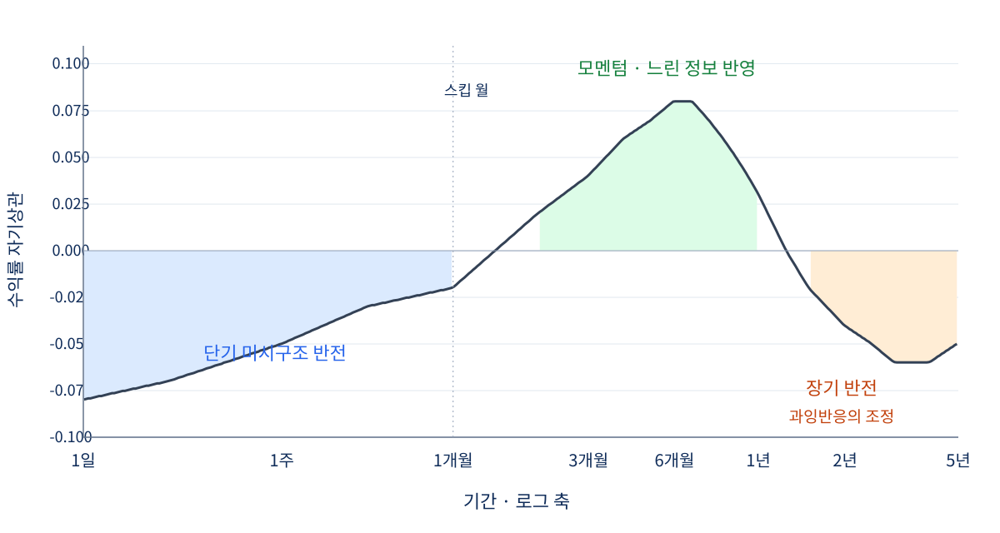
공식 Primer 원본 판독값 · 실측 상관이 아닌 정형화된 개념 경로와 세 기간 음영·스킵 월 표기를 재작도했다. 공식 Primer시간에 걸친 수익률과 종목에 걸친 수익률은 다르게 합친다
모멘텀 계산에서 수익률의 산술을 정하지 않으면 레이블과 다른 값을 비교할 수 있습니다. 단순 수익률이 +10%인 날 다음에 −10%인 날이 오면 평균은 0%이지만, 100은 110이 된 뒤 99가 됩니다. 실제 누적 수익률은 −1%입니다. 시간 방향으로는 각 기간의 '1+수익률'을 곱해야 합니다.
로그 수익률은 가격 비율에 자연로그를 취한 값입니다. 로그를 쓰면 시간에 걸친 곱셈을 덧셈으로 바꿀 수 있습니다. 위 예에서 \(\ln(1.10)+\ln(0.90)=\ln(0.99)\)이므로 같은 누적 손실을 표현합니다. 반면 한 기간에 두 종목을 반씩 보유했고 수익률이 2%와 10%라면 포트폴리오 단순 수익률은 6%입니다. 이 경우는 기간 시작의 보유 비중으로 단순 수익률을 가중해 더합니다. 로그 수익률을 먼저 평균한 뒤 되돌린 약 5.92%와 같지 않습니다. 어떤 관례를 썼는지 명세에 적어 두어야 합니다.
앞의 +10%, −10% 두 기간을 합치려면 1.10과 0.90을 곱한 뒤 1을 뺍니다. 같은 자산의 가격 비율을 시간 순서대로 곱하는 계산입니다. 로그를 쓰면 각 비율의 로그를 더해 같은 최종 가격 비율을 나타낼 수 있습니다.
\[\begin{gathered}R_{t:t+k}=\prod_{i=1}^{k}(1+R_{t+i})-1\\r_{t:t+k}=\sum_{i=1}^{k}r_{t+i}\end{gathered}\]
앞의 +10%, −10%를 넣으면 기간 수 k는 2입니다. 큰 R로 적은 단순 수익률은 Π 기호가 지시하듯 각 기간의 1+R을 곱합니다. 작은 r로 적은 로그 수익률은 Σ 기호에 따라 더합니다. t는 시작 시점이고 i는 이어지는 기간을 하나씩 셉니다. 가격 P를 쓴다면 오늘 가격을 직전 가격으로 나눈 뒤 1을 빼면 단순 수익률, 그 가격 비율에 자연로그를 취하면 로그 수익률입니다. 계산은 소수로 하고 표시할 때 100을 곱해 %로 바꿉니다.
\[\begin{gathered}(1.10)(0.90)-1=-0.01=-1\%\\\ln(1.10)+\ln(0.90)=\ln(0.99)\end{gathered}\]
위 식은 앞서 든 +10%, −10%의 두 기간 예입니다. 단순 수익률의 산술평균은 0%이지만 누적값은 −1%입니다. 로그 합도 같은 최종 가격 비율 0.99를 나타냅니다. 로그 합 자체와 단순 누적 수익률은 값의 표현이 다르므로 최종 비교에는 어떤 수익률인지 이름을 붙입니다.
수익률이 2%와 10%인 두 자산을 기간 시작에 절반씩 보유했다면, 각 수익률에 0.5를 곱해 더합니다. 이렇게 기간 시작 비중으로 단순 수익률을 가중하면 포트폴리오 수익률을 얻습니다.
\[R_p=\sum_i w_iR_i\]
2%와 10%를 낸 두 자산을 기간 시작에 절반씩 보유했다면 w는 각각 0.5입니다. 각 자산 i의 수익률 Rᵢ에 그 비중을 곱해 더한 값이 포트폴리오 단순 수익률 Rₚ입니다. 이 예에서 비중의 합은 1이고 거래 비용은 별도로 계산합니다.
두 자산이 각각 2%와 10%를 냈고 시작 비중이 절반씩이면 0.5×0.02+0.5×0.10=0.06, 즉 6%입니다. 같은 두 로그 수익률을 먼저 평균하면 다른 결과를 얻습니다.
\[\begin{gathered}\ell=\tfrac12[\ln(1.02)+\ln(1.10)]\\e^\ell-1\approx0.059245=5.9245\%\end{gathered}\]
두 로그 수익률의 평균 ℓ은 약 0.0575564입니다. 이를 가격 비율로 되돌리고 1을 빼면 약 5.92%로, 단순 수익률을 비중대로 합친 6%와 다릅니다. 해설판과의 중간 반올림 대조는 검증 메모에 남겼습니다.
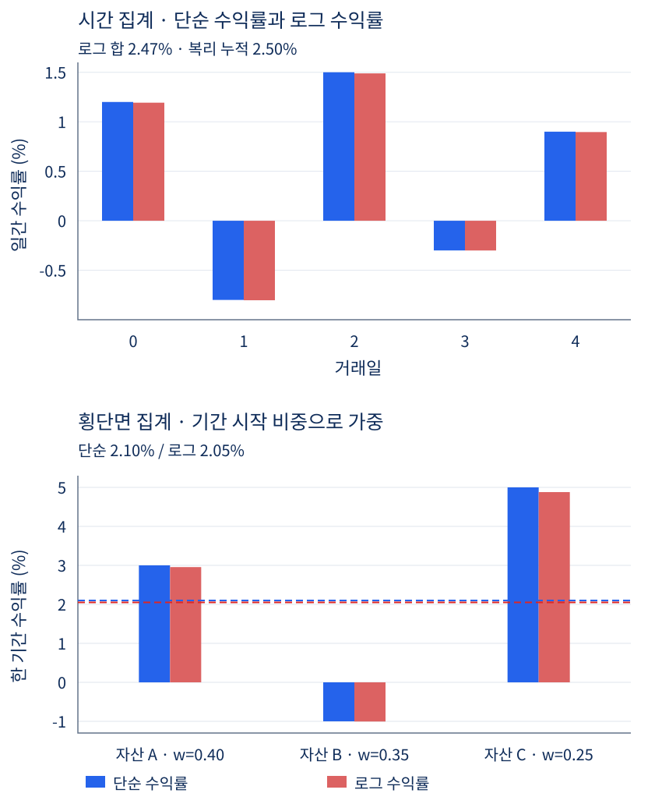
공식 Primer 원본 판독값으로 막대를 재작도하고 집계값을 재계산했다. 공식 Primer그림 위쪽의 다섯 거래일은 단순 수익률 1.2%, −0.8%, 1.5%, −0.3%, 0.9%입니다. 로그 합 약 2.47%와 단순 복리 누적 약 2.50%는 같은 최종 가격을 서로 다른 척도로 표현합니다. 아래쪽은 자산 A·B·C의 수익률 3%, −1%, 5%와 시작 비중 0.40·0.35·0.25입니다. 단순 수익률 가중합은 정확히 2.10%이고 로그 수익률 가중합 약 2.05%는 다른 대상입니다. 본문의 두 자산 예와 구분해 각 패널에 쓰인 숫자를 읽어야 합니다.
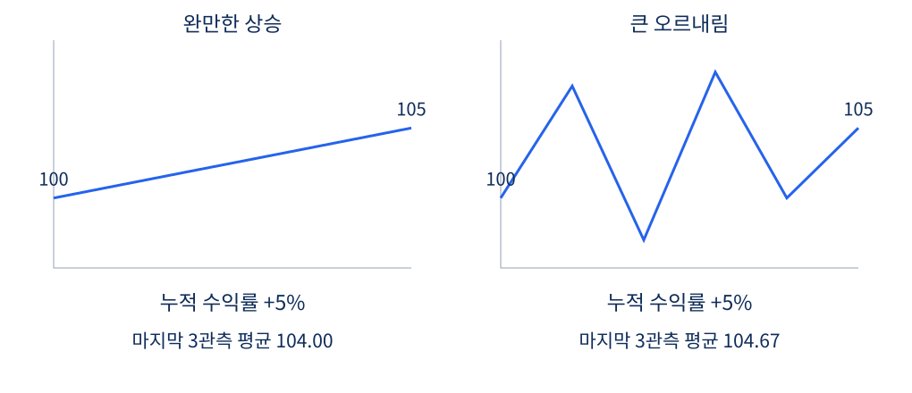
AIML Quant 도해 · 완만한 경로는 100→101→102→103→104→105, 출렁이는 경로는 100→108→97→109→100→105이다. 마지막 세 관측의 평균은 각각 (103+104+105)/3=104.00과 (109+100+105)/3≈104.67이다. 두 누적 수익률은 모두 +5%지만 경로를 반영한 요약은 다르다.반전과 앵커 · 어디로 돌아올 것인지가 먼저다
가격이 많이 올랐다면 어디로 돌아올 것인지부터 정해야 합니다. 반전 특성에서 이 기준점이 앵커입니다. 짧은 거래에서는 최우선 매수·매도 호가의 중간값을 쓸 수 있습니다.
조금 긴 기간에서는 이동평균이나 거래가 많이 이루어진 가격에 큰 비중을 주는 거래량가중평균가격(VWAP)을 쓸 수 있습니다. 다른 종목과의 관계를 본다면 동종 종목의 평균이나 두 상품 사이의 균형 스프레드도 후보입니다. 어느 앵커를 고르는지가 가격이 왜 돌아와야 하는지에 대한 설명을 정합니다.
가격과 앵커의 거리는 크기만으로 읽기 어렵습니다. 평소 1만큼 흔들리는 종목에서 거리 5와, 평소 10만큼 흔들리는 종목에서 거리 5는 다르기 때문입니다. 자기 과거의 표준편차 단위로 표현한 z-점수를 쓰면 자기 이력에 비해 얼마나 이례적인지 묻습니다. 같은 날 동종 종목 사이의 백분위로 표현하면 다른 종목에 비해 얼마나 극단적인지 묻습니다. 앵커를 계산하는 창과 편차의 크기를 계산하는 창도 역할이 다르므로 별도로 정합니다.
사건이 일어날 때마다 관측할지 일정한 시각 간격으로 관측할지도 가설을 바꿉니다. 사건 시간은 거래나 호가 갱신처럼 사건의 수를 기준으로 움직이는 시계이고, 시계 시간은 실제 초·분 단위로 움직입니다. 거래가 몰리는 시간에는 사건 시간 표본이 더 촘촘해집니다. 스프레드와 유동성에 따라 반전이 다른지도 확인합니다.
반전은 몇 가지 방식으로 수치화할 수 있습니다. 최근 몇 기간의 수익률에 반대 부호를 붙이면 최근 움직임이 되돌아온다는 신호가 됩니다. 앵커까지의 거리를 앞에서 본 정규화로 표현하면 얼마나 멀리 벗어났는지 잴 수 있습니다.
또 다른 방법은 최근 상승과 하락의 상대적 크기를 제한된 범위의 값으로 나타내는 것입니다. 다음 문단의 RSI가 여기에 속합니다. 이 계열은 주로 수 초부터 수일에 쓰며, 경제적 근거가 있는 앵커라면 더 긴 기간도 고려합니다. 앵커를 잘못 추정하거나 비용과 체결 지연을 빼면 기대한 반전 효과가 남지 않을 수 있습니다.
RSI 같은 오실레이터는 최근 관측이 기준 범위 안에서 어느 쪽에 가까운지 읽도록 만든 지표입니다. RSI는 최근 상승 폭과 하락 폭의 평균을 비교해 0–100 범위로 표현합니다. 값이 높다는 것은 정한 창 안에서 상승이 상대적으로 강했다는 뜻입니다. '높으니 곧 하락한다'는 결론은 지표 정의에 들어 있지 않습니다. 반전을 주장하려면 그 구간과 거래 조건에서 실제로 되돌림이 나타나는지 따로 검증해야 합니다.
체결 가격이 번갈아 찍힌 것과 가치가 되돌아온 것을 구분한다
단기 반전의 대표적인 함정이 매수·매도 호가 반동입니다. 매도자가 받아 주는 호가가 100.00이고 매수자가 지불하는 호가가 100.10이면 중간값은 100.05입니다. 체결이 100.10, 100.00, 100.10, 100.00으로 번갈아 일어나면 수익률은 상승·하락을 반복합니다. 그러나 호가 중간값은 움직이지 않았습니다. 새로운 정보 때문에 가치가 바뀌었다고 보기 어려운 상황입니다.
관측 체결가에는 거래 방향에 따른 호가 차이가 섞입니다. 이 일시적 반동을 걷어낸 기초 가격을 모형에서는 관측되지 않는 효율 가격으로 놓고, 여기에 스프레드 절반과 잡음을 더해 체결가를 표현합니다. 해설판의 Primer가 설명하는 구조입니다.
다음 체결의 반전을 맞히더라도 매수·매도 호가를 넘나드는 비용을 지불하면 이익이 남지 않을 수 있습니다. 가격 형성을 살필 때의 중간가 수익률과 실제 체결 손익을 계산할 때의 체결가를 구분해야 합니다.
앞의 100.00·100.10 체결을 호가 중간값 100.05와의 거리로 나누어 봅시다. 거래 방향에 따라 스프레드 절반인 0.05를 더하거나 빼는 단순 모형으로 반동을 표현할 수 있습니다.
\[\begin{gathered}p_t=v_t+\frac{c_t}{2}s_t+\eta_t\\s_t\in\{+1,-1\}\end{gathered}\]
앞의 호가 예에서 관측하기 어려운 효율 가격 vₜ를 중간값과 같은 100.05달러로 놓아 봅시다. 실제 체결 가격 pₜ에는 스프레드 cₜ의 절반을 더하거나 뺍니다. 거래 방향 sₜ가 +1이면 매수 주도여서 더하고, −1이면 매도 주도여서 뺍니다.
남는 잡음 ηₜ도 가격과 같은 단위이며, 아래 이해용 계산에서는 0으로 둡니다. 방향의 부호에는 단위가 없습니다. 이 모형의 효율 가격은 관측된 호가 중간값과 구분되는 개념이지만, 계산을 읽기 위해 여기서는 두 값을 같게 놓았습니다.
v=100.05달러, c=0.10달러, η=0이라고 두면 +1 거래에서는 100.05+0.05=100.10달러, −1 거래에서는 100.05−0.05=100.00달러가 됩니다. 효율 가격을 고정해도 체결가가 오르내릴 수 있다는 계산입니다.
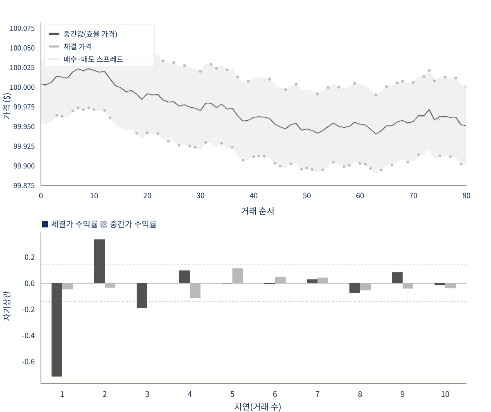
공식 Primer 원본 판독값 · 가시 곡선·점·스프레드 음영을 축 좌표에 맞춰 재작도했다. 원시 시뮬레이션을 재실행한 그림은 아니다. 공식 Primer그림 위 패널에서는 호가 중간값이 움직이는 동안 체결가가 스프레드 양쪽에 번갈아 찍힙니다. 바로 다음 거래의 수익률과 비교한 값이 아래 패널의 지연 1입니다. 여기서 지연은 비교하는 두 관측 사이의 거래 횟수입니다.
자기상관은 같은 시계열을 그 횟수만큼 뒤로 옮겨 비교한 상관입니다. 체결가 수익률은 지연 1에서 강한 음수지만 중간가 수익률은 그보다 훨씬 작습니다. 체결가의 반복 반동은 보이더라도 실제 이익을 내려면 스프레드를 넘나드는 비용까지 감당해야 합니다.
앵커가 달라지면 반전의 경제적 뜻도 달라집니다. 통화에서는 경제적 관계가 요구하는 상대 가격 수준인 패리티나 이동평균을 기준으로 삼을 수 있습니다. 옵션에서는 내재 변동성과 실현 변동성의 차이가 되돌아오는지를 볼 수 있습니다. 원서의 사례명과 대응은 검증 메모에 남겼습니다.
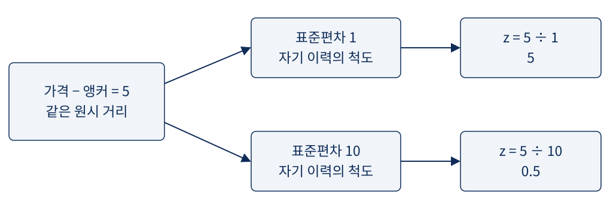
AIML Quant 도해 · 본문에서 설명한 값과 관계를 시각화했다.변동성과 꼬리 위험 · 방향보다 거래 여건을 측정한다
가격이 어디로 갈지와 얼마나 크게 흔들릴지는 다른 질문입니다. 변동성은 대개 방향성 신호의 사용 여부나 투자 크기를 정하는 상태 변수입니다. 다만 레이블 자체가 미래 변동성이라면 같은 값이 예측 신호가 됩니다. 수익률을 잘 맞히는지로만 평가하면 역할에 맞지 않는 시험을 하게 됩니다.
같은 간격의 수익률 두 개가 +1%, −1%라고 합시다. 각각을 제곱하면 상승과 하락 모두 양의 흔들림으로 더해집니다. 창 전체의 크기를 제곱합의 제곱근으로 재면 \(\sqrt{0.01^2+(-0.01)^2}\), 약 1.41%입니다. 한 기간의 평균적인 흔들림을 재려면 관측 수를 반영한 다른 계산이 필요합니다. 원서와 Primer가 쓰는 정의의 대조는 검증 메모에 보존했습니다.
이해용 수익률 +1%, −1%, 0%에서 창 전체의 움직임과 한 기간의 흔들림을 각각 구해 봅시다. 수익률 제곱을 더하는 방법과 평균을 뺀 제곱 편차를 관측 수로 나누는 방법을 아래 두 식으로 비교합니다.
\[\begin{gathered}RV_{\mathrm{window}}=\sqrt{\sum_{i=1}^{n}r_i^2}\\s=\sqrt{\frac{1}{n-1}\sum_{i=1}^{n}(r_i-\bar r)^2}\end{gathered}\]
앞의 수익률에 0%를 하나 더한 이해용 예라면 관측 수 n은 3이고 평균 r̄는 0입니다. 각 수익률 rᵢ의 제곱을 더해 제곱근을 취한 값이 창 전체의 RV입니다. 표본 표준편차 s는 각 수익률에서 평균을 뺀 뒤 제곱해 더하고, n−1인 2로 나눈 후 제곱근을 취합니다. 두 값은 수익률 단위를 쓰지만 각각 창 전체와 한 기간의 흔들림을 요약하므로 명세와 레이블에 맞춰 고릅니다.
이해용 세 관측이 +1%, −1%, 0%라면 평균은 0입니다. 첫 식은 √0.0002≈1.41%, 둘째 식은 √(0.0002/2)=1%입니다. 이처럼 어느 집계값인지 먼저 정해야 서로 다른 창이나 구현을 비교할 수 있습니다.
짧은 창은 새 충격에 빨리 반응하지만 한 번의 큰 충격이 값을 지배할 수 있습니다. 긴 창은 안정적이지만 급격한 위험 변화를 평균 속에 묻을 수 있습니다. 현재 값이 과거 분포의 어느 백분위인지나 다른 종목 사이의 순위로 바꾸면 상대적인 고위험·저위험 상태를 읽기 쉬울 수 있습니다. 수준, 변화, 순위 중 무엇을 쓰는지 역시 의미를 바꾸는 선택입니다.
손실 쪽 움직임을 더 중시한다면 음의 수익률에 초점을 둔 준분산을 쓸 수 있습니다. 그 제곱근에 해당하는 하방 편차는 수익률과 같은 척도로 아래쪽 흔들림을 읽게 해 줍니다.
이전 고점에서 얼마나 내려왔는지를 묻는다면 낙폭이 맞는 측정입니다. 이처럼 어느 위험을 볼지 정한 뒤 추정법과 창을 고릅니다. 값을 매끄럽게 만들지, 수준·변화·순위 중 무엇으로 표현할지도 함께 기록합니다.
과거의 흔들림, 옵션이 가격에 넣은 흔들림, 모형이 예상한 흔들림
실현 변동성은 이미 지나간 창을 요약합니다. 갑자기 시장이 거칠어지면 큰 관측이 창 안으로 들어오는 만큼만 뒤늦게 바뀝니다. 오늘 포지션의 위험을 정할 때 필요한 것은 앞으로의 위험이므로 과거 요약을 예측과 동일시하면 안 됩니다.
옵션 시장에서는 현재 옵션 가격에 맞는 변동성을 역으로 구할 수 있습니다. 가격결정 모형에 넣었을 때 시장 가격과 일치하는 입력이 내재 변동성입니다. 앞으로의 불확실성과 위험의 가격을 함께 반영하므로 실제로 나중에 실현될 변동성과는 차이가 날 수 있습니다.
최근 정보로 다음 기간의 분산을 예측한 값은 조건부 변동성입니다. 이를 추정하는 GARCH는 최근 수익률 충격과 직전 분산 추정치로 다음 시점의 분산을 갱신합니다. 과거를 요약하는 실현 변동성, 옵션 가격에서 역산한 내재 변동성, 모형으로 예측한 조건부 변동성의 차이를 구분해야 합니다. GARCH는 9장에서 다룹니다.
연율화의 제곱근 시간 규칙도 조건이 있습니다. 기간별 수익률의 독립 같은 가정이 맞을 때 분산이 시간에 비례한다고 읽을 수 있습니다. 변동성이 군집하거나 수익률이 서로 의존하면 단순히 기간의 제곱근을 곱한 수치만으로 미래 위험을 확정할 수 없습니다.
기간별 분산이 더해질 수 있는 가정 아래에서는 표준편차에 기간 수의 제곱근을 곱해 연간 단위로 바꿉니다.
\[\sigma_{\mathrm{annual}}=\sigma_{\mathrm{daily}}\sqrt{252}\]
σ는 표준편차이고 아래첨자는 일간과 연간을 구분합니다. 252는 이 예에서 한 해의 거래일 수입니다. 일간 표준편차가 1%라면 0.01×√252≈0.1587, 연율화 약 15.87%입니다. 이는 과거 요약값을 연간 척도로 읽는 계산이며 다음 해 위험의 확정 예측은 아닙니다.
해설판의 또 다른 이해용 예에서는 조용한 날의 절댓값 0.4%, 0.6%, 0.3%, 0.5% 뒤에 큰 관측이 들어옵니다.
\[r_{\mathrm{new}}\in\{-2.5\%,\;1.8\%,\;-3.0\%\}\]
r_new는 새로 관측한 하루 수익률이고 중괄호 안의 값은 차례로 들어오는 −2.5%, +1.8%, −3.0%의 예입니다. 수익률은 소수로 계산하며 이 식의 표시는 % 단위입니다.
−2.5%, +1.8%, −3.0%처럼 큰 일간 수익률이 창에 차례로 들어오면 과거를 요약한 변동성도 뒤따라 커집니다. 이 예는 새 충격을 받아들이는 과정을 보여 줍니다. 20일 표준편차를 계산하려면 창 전체의 수익률이 필요합니다.
옵션 가격에서 읽은 변동성은 앞으로의 위험과 위험에 대한 보상을 반영해 이후 실현 변동성을 웃돌기도 합니다. 해설판이 인용한 표본 빈도와 출처는 검증 메모에 남겼습니다. VIX는 여러 옵션 가격으로 향후 30일의 위험중립 기대 분산을 구한 뒤 연율화 변동성 단위로 표시한 지수입니다. 개별 옵션 하나에서 역산한 내재 변동성과는 계산 대상이 다릅니다.
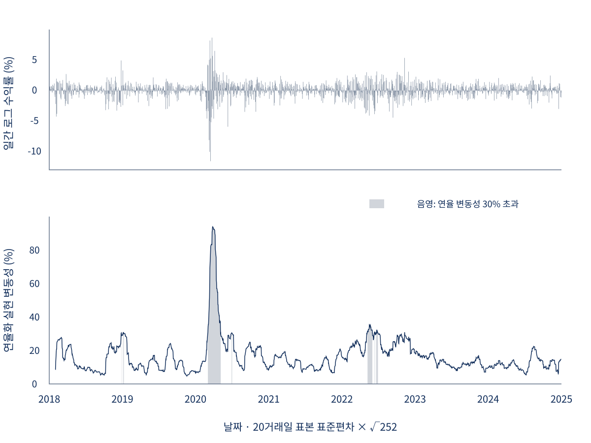
공식 ETF 종가로 같은 2018–2024 기간·20일 표본 표준편차·252 연율화 조건을 재계산했다. 최고 약93.92%로 원본의 약94%와 대응한다. 공식 Primer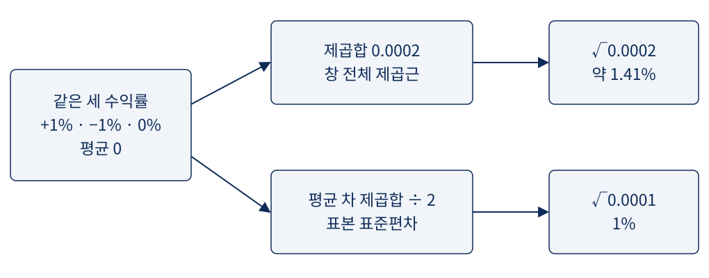
AIML Quant 도해 · 본문에서 설명한 값과 관계를 시각화했다.OHLC · 종가 사이에 지나간 움직임도 이용한다
종가가 어제와 같아도 장중에 크게 오르내렸을 수 있습니다. 종가만 비교하면 놓치는 이 움직임을 고가·저가로 읽을 수 있습니다. 이렇게 봉 안의 가격 범위를 활용해 변동성을 계산하는 방법이 범위 기반 추정량입니다. 추정량은 자료로부터 알고 싶은 값을 계산하는 규칙을 뜻합니다.
봉은 정한 기간의 시가·고가·저가·종가를 하나로 묶은 관측입니다. 네 가격의 영어 이름 Open·High·Low·Close를 줄여 OHLC라고 부릅니다.
| 추정량 | 입력 | 종가-종가 대비 효율 | 가장 적합한 경우 |
|---|---|---|---|
| 종가-종가 | 종가 | 1× | 종가만 있을 때 |
| Parkinson | 고가, 저가 | 약5× | 야간 효과가 무시할 만한 일간 봉 |
| Garman-Klass | OHLC | 약7× | 갭이 작은 완전한 OHLC |
| Yang-Zhang | OHLC | 약8–14× | 야간 갭이 중요한 경우 |
같은 변동성을 계산해도 자료를 다시 모을 때마다 추정값은 조금씩 흔들립니다. 아래 표의 효율은 이 흔들림을 얼마나 줄이는지에 대한 모형 안의 비교입니다. 추정량의 분산이 기준의 5분의 1이라면, 대략 5분의 1의 관측으로 비슷한 정밀도를 얻는다는 뜻입니다. 연속적인 장중 가격 움직임 같은 가정이 깨지면 이 효율 수치도 달라집니다.
고가가 102, 저가가 100인 이해용 봉에서 두 가격의 차이는 장중 움직임의 단서입니다. Parkinson 추정량은 고가 H와 저가 L의 로그 차이로 그 봉의 분산을 계산합니다.
\[\widehat{\sigma}_{P,t}^{2}=\frac{(\ln H_t-\ln L_t)^2}{4\ln 2}.\]
고가 H가 102, 저가 L이 100인 이해용 봉을 넣어 봅시다. ln은 자연로그이므로 \(\ln(1.02)^2/(4\ln2)\)를 계산합니다. 고가가 저가에서 멀수록 로그 범위가 커져 그 봉의 분산 추정치가 커집니다.
위 봉의 Parkinson 분산은 약 0.00014144이고 제곱근은 약 1.189%입니다. 두 가격을 달러로 쓰든 원으로 쓰든 비율의 로그이므로 같은 결과입니다. 여러 봉의 값을 평균하기 전 한 봉의 추정치라는 점을 구분합니다.
이해용으로 시가 100, 고가 102, 저가 99, 종가 101인 봉을 생각해 봅시다. Garman-Klass 추정량은 고가·저가의 범위에 시가 O와 종가 C의 정보까지 더합니다.
\[\begin{aligned}\widehat{\sigma}_{GK,t}^{2}={}&0.5(\ln H_t-\ln L_t)^2\\&-(2\ln2-1)(\ln C_t-\ln O_t)^2\end{aligned}\]
첫 항은 봉 전체 범위의 정보를 담고 두 번째 항은 시가에서 종가까지의 움직임을 보정합니다. 같은 고가·저가라도 시가와 종가가 어디에 놓였는지에 따라 추정치가 달라집니다. 그러나 전일 종가에서 오늘 시가로 건너뛴 움직임은 이 봉 안의 범위만으로 충분히 담기지 않을 수 있습니다.
작은 계산 예로 O=100, H=102, L=99, C=101을 넣으면 Garman-Klass 분산은 약 0.0004074, 제곱근은 약 2.02%입니다. H/L의 범위가 같아도 C/O가 달라지면 보정 항이 달라지는 것을 직접 계산해 볼 수 있습니다.
장이 닫힌 뒤 큰 소식이 나면 전일 종가와 오늘 시가 사이에 가격 차이가 생깁니다. 이 야간 움직임을 따로 반영하려는 방법이 Yang-Zhang 추정량입니다. 여기에 오늘 시가부터 종가까지의 움직임도 더합니다.
장중의 고가·저가 경로는 Rogers-Satchell 항으로 반영합니다. 이 항은 한 방향으로 움직이는 추세가 있어도 장중 변동을 재도록 설계됐습니다. 세 부분을 같은 창에서 계산해 합치는 것이 Yang-Zhang의 방식입니다.
전일 종가 100에서 오늘 시가 96으로 내려갔다가 종가 97로 회복한 이해용 예를 보겠습니다. 야간 하락과 장중 상승을 서로 다른 로그 수익률로 나눕니다.
\[\begin{gathered}o_t=\ln(O_t/C_{t-1})\\c_t=\ln(C_t/O_t)\end{gathered}\]
전일 종가 Cₜ₋₁이 100, 오늘 시가 Oₜ가 96이라면 야간 로그 수익률 oₜ는 ln(96/100)입니다. 오늘 종가 Cₜ가 97이면 장중 로그 수익률 cₜ는 ln(97/96)입니다. 같은 가격 단위끼리 나눈 비율의 로그여서 두 수익률에는 단위가 없습니다. 이 식의 cₜ는 장중 수익률이며 앞의 체결가 모형에서 쓴 스프레드 cₜ와 문맥을 구분합니다.
전일 종가가 100, 오늘 시가가 96이면 o=ln(96/100)≈−0.04082입니다. 오늘 종가가 97이면 c=ln(97/96)≈0.01036입니다. 갭 하락과 장중 회복을 따로 적을 수 있습니다.
이해용으로 야간 분산이 0.0001, 장중 분산이 0.00004, Rogers-Satchell 분산이 0.00008이라고 합시다. 야간 분산은 그대로 두고, 나머지 두 분산에 가중치를 주어 더하면 Yang-Zhang 분산을 구할 수 있습니다.
\[\begin{aligned}\hat\sigma_{YZ}^2={}&\hat\sigma_o^2+k\hat\sigma_c^2\\&+(1-k)\hat\sigma_{RS}^2\end{aligned}\]
이 이해용 예의 창을 20봉으로 정하면, 장중 분산을 섞는 가중치 k는 약 0.1390입니다. 아래 식은 창의 봉 수 n에서 그 가중치를 계산합니다.
\[k=\frac{0.34}{1.34+\frac{n+1}{n-1}}\]
20봉 창의 가중치 k를 구했다면, 야간 분산 0.0001은 그대로 더합니다. 장중 분산 0.00004에는 k를, Rogers-Satchell 분산 0.00008에는 나머지 1−k를 곱합니다. 식의 σ̂²는 추정 분산이고 아래첨자 o·c·RS가 각각 이 세 부분을 가리킵니다. 같은 기간·단위의 분산을 합친 뒤 제곱근을 취하면 변동성이 됩니다.
가중치를 읽는 이해용 계산으로 n=20이면 k≈0.1390입니다. 야간 분산 0.0001, 장중 분산 0.00004, RS 분산 0.00008을 넣으면 총분산은 약 0.0001744이고 제곱근은 약 1.32%입니다. 이 세 값은 계산 연습용이며 아래 차트의 실측값은 아닙니다.
이해용으로 최근 두 봉의 분산이 0.0001과 0.0004라면, 먼저 두 분산을 평균하고 제곱근을 취합니다. 이 방법을 최근 n개 봉에 반복하면 한 봉 간격의 롤링 변동성을 얻습니다.
\[\widehat\sigma_P(n)=\sqrt{\frac{1}{n}\sum_{i=0}^{n-1}\widehat\sigma_{P,t-i}^{2}}\]
최근 두 봉을 쓰는 이해용 예라면 n은 2입니다. 현재 봉 t와 한 봉 전 t−1의 분산 추정치 σ̂²를 더해 2로 나누고 제곱근을 취합니다. 합의 i는 현재에서 몇 봉 전인지 하나씩 셉니다. 분산의 평균은 수익률 제곱 단위이고, 제곱근을 취한 변동성은 수익률 단위입니다. 연율화할 때도 이렇게 구한 한 봉 간격의 값을 기준으로 삼아야 합니다.
최근 두 봉의 분산 추정치가 0.0001과 0.0004인 이해용 예를 계산하면 평균은 0.00025, 제곱근은 약 1.581%입니다. 봉별 변동성 1%와 2%를 그대로 평균한 1.5%와 차이가 납니다. 그림 8.3의 재계산 조건은 검증 메모에서 따로 확인할 수 있습니다.
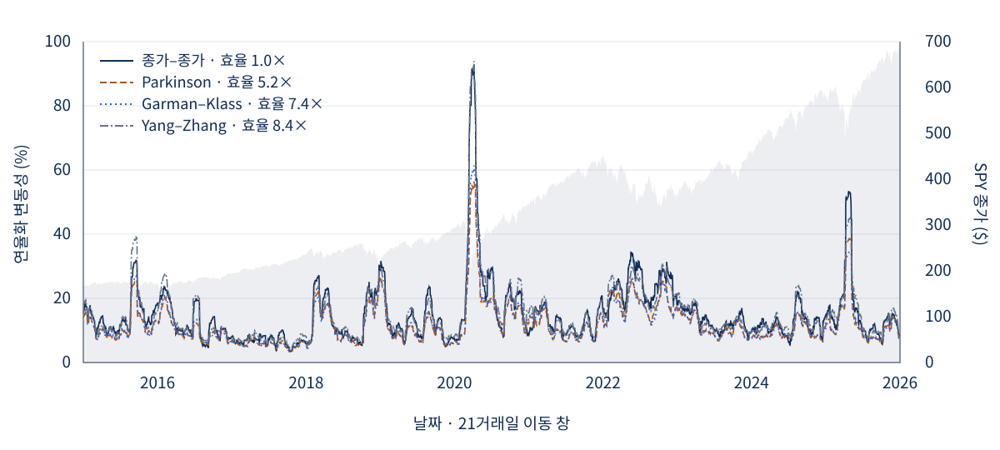
네 추정량은 왼쪽 연율화 변동성 축, 옅은 가격 배경은 오른쪽 SPY 종가 축으로 읽는다. 공식 ETF OHLC로 21거래일 창·252 연율화를 재계산했고, 원본의 기간·축·네 범례·가격 배경을 유지했다.그림 8.3에서는 SPY의 네 변동성 추정값이 큰 충격에 함께 반응하는지 살펴봅니다. 해설판은 2020년 초와 2025년의 급등을 함께 잡되 평온기에는 범위 기반 값이 더 낮고 매끄럽다고 읽습니다. 범례의 효율 수치는 모형의 가정과 함께 읽어야 합니다. 표본 기간과 효율 표기의 대조는 검증 메모에 보존했습니다.
이 그림의 종가-종가는 21거래일 단순 수익률의 표본 표준편차입니다. 앞의 Primer 군집 그림은 20일 로그 수익률을 써서 계산 조건이 다릅니다. 따라서 두 그림의 선을 비교할 때는 이름과 함께 수익률 정의와 창을 확인해야 합니다.
여기서 추정량의 차이는 진단 정보입니다. 실적 발표 뒤 시가가 전일 종가보다 크게 떨어졌지만 장중에는 조용했다면, 고가–저가만 보는 Parkinson은 야간 충격을 충분히 반영하지 못할 수 있습니다. Yang-Zhang은 야간 성분에 그 움직임을 반영합니다. 반대로 24시간 거래되는 자료에 정규 장과 야간을 억지로 나누는 것도 맞지 않습니다. 조정 종가와 조정하지 않은 시가·고가·저가를 섞으면 실제로 없던 범위가 생길 수 있으므로 가격 조정 기준도 통일합니다.
거래가 하루 종일 이어지면 야간을 따로 나누지 않는 방식이 맞을 수 있습니다. 반대로 정규 장이 닫힌 사이의 가격 변화가 크면 야간 성분을 담는 방법이 필요합니다. 원서의 사례별 추정량 선택은 검증 메모에 모았습니다.
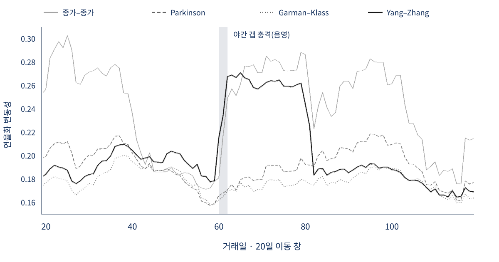
공식 Primer 원본 판독값 · 원시 시뮬레이션 자료가 없어 가시 네 곡선·축·범례·야간 갭 음영을 재작도했다. 공식 Primer다음 그림은 시뮬레이션한 주식 경로에서 야간 갭 충격을 준 비교입니다. 음영 뒤 네 선이 어떻게 갈라지는지 보면, 고가·저가만 쓰는 방법이 야간 점프를 놓칠 수 있음을 알 수 있습니다. 앞의 SPY 실측 재계산과 자료가 다른 비교입니다.
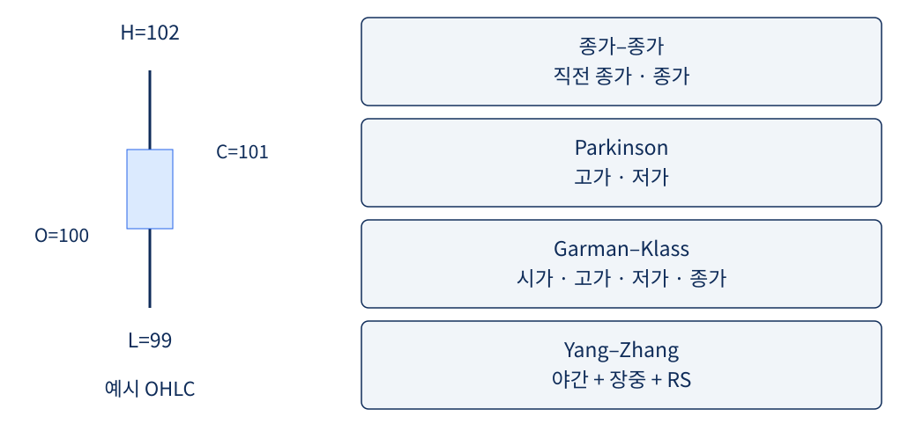
AIML Quant 도해 · 본문에서 설명한 값과 관계를 시각화했다.꼬리 위험과 국면 · 흔들림의 크기만으로 충분하지 않을 때
하루 손실이 보통 어느 선 안에 머무는지 알고 싶다고 합시다. 손실 분포에서 정한 백분위의 경계가 VaR입니다. 95% VaR은 그 신뢰수준에 해당하는 손실 경계이며 최대 손실을 뜻하지 않습니다.
그 경계를 넘어 더 나빠진 경우의 평균 손실이 CVaR, 또는 기대부족분입니다. 같은 표준편차를 가진 분포도 큰 손실이 생기는 빈도와 크기가 다를 수 있어 두 값을 따로 봅니다.
이해를 위한 손실 분포에서 하루 95% VaR이 3%, 그 경계보다 큰 손실들의 평균인 CVaR이 5%라고 합시다. 3%는 정한 백분위의 경계이고 5%는 더 나쁜 꼬리 안의 평균이므로, 어느 쪽도 손실의 최댓값을 뜻하지 않습니다.
이해용으로 수익률의 95백분위가 +2%, 5백분위가 −4%라고 합시다. 위쪽 값을 아래쪽 값의 절댓값으로 나누면 2/4=0.5입니다. 위쪽과 아래쪽 극단의 크기를 비교하는 꼬리 비율의 한 정의입니다. 이 예에서는 아래쪽 극단의 절댓값이 더 큽니다. 어떤 분위수와 부호 규칙을 썼는지 명세에 적어야 같은 이름의 값을 비교할 수 있습니다.
앞에서 본 준분산과 하방 편차는 목표보다 낮은 수익률을 모아 흔들림을 잽니다. 양쪽을 함께 재는 표준편차가 같아도 손실 쪽 모습은 다를 수 있으므로 이런 측정을 보완해 씁니다.
가격 경로의 성격도 따로 측정할 수 있습니다. 분산비는 긴 기간의 수익률 분산을, 짧은 기간의 분산을 시간에 맞게 늘린 기준과 비교합니다. 1보다 작으면 움직임이 상쇄되는 평균 회귀를, 1보다 크면 같은 방향 움직임의 지속을 시사할 수 있습니다. 이는 분산비의 해석이며 모든 표본에서 원인을 확정하는 판정은 아닙니다.
분산비의 작은 예로 하루 수익률 분산을 1이라고 두면, 서로 독립적인 두 날을 합친 기준 분산은 2입니다. 실제 이틀 수익률 분산이 3이라면 비율은 3/2=1.5입니다. 반대로 1이라면 비율은 1/2=0.5입니다. 같은 방향 움직임이 더해지는지 서로 상쇄되는지를 비교하는 산술이며, 한 번의 비율만으로 원인을 확정하지 않습니다.
프랙털 효율은 시작과 끝의 순이동을 중간에 움직인 전체 경로 길이와 비교합니다. 같은 방향으로 곧게 움직이면 두 값의 차이가 작고, 오르내림을 반복해 제자리로 돌아오면 경로 길이에 비해 순이동이 작습니다. 추세와 횡보를 구분하려는 측정입니다. 국면을 모형으로 추정하는 방법은 9.5절에서 다룹니다.
프랙털 효율도 작은 경로로 읽어 볼 수 있습니다. 가격이 100→101→102로 움직이면 순이동은 2, 이동 거리 합도 2라서 비율은 1입니다. 100→102→100이면 순이동은 0이지만 이동 거리 합은 4여서 비율은 0입니다. 양 끝만 같아도 중간에 얼마나 우회했는지 다를 수 있다는 뜻입니다.
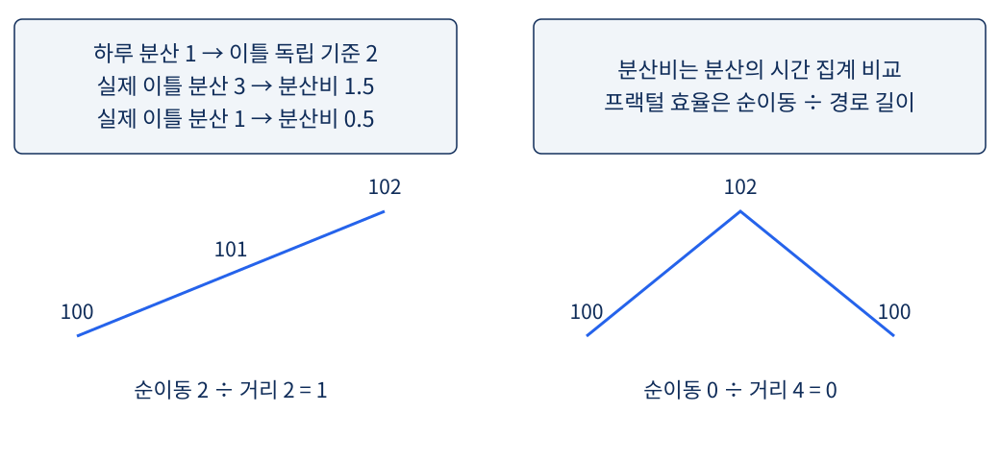
AIML Quant 도해 · 본문의 이해용 분산 1·2·3과 가격 경로 100·101·102를 사용했다.가격이 크게 움직이는 상품에는 손절 거리를 더 넓게 두거나 투자 수량을 줄일 수 있습니다. 이때 봉의 전형적인 가격 범위를 요약하는 ATR이 쓰입니다. 아래에서는 한 봉의 범위를 구한 뒤 여러 봉에 걸쳐 평균하는 방법을 봅니다.
가격 수준이 다른 상품끼리 비교하려면 ATR을 가격으로 나눠 크기를 맞춘 NATR도 쓸 수 있습니다. 두 값은 가격 범위를 재는 지표로, 앞에서 본 수익률 분산과 측정 대상이 다릅니다.
ATR의 바탕인 참범위(TR)는 한 봉의 고가–저가뿐 아니라 직전 종가에서 벌어진 간격도 봅니다. 직전 종가가 100, 이번 고가가 103, 저가가 101이라면 봉 안 범위는 2이지만 직전 종가에서 고가까지는 3입니다. 이 관측의 참범위는 셋 중 큰 값인 3입니다.
\[TR_t=\max\left\{\begin{array}{c}H_t-L_t\\|H_t-C_{t-1}|\\|L_t-C_{t-1}|\end{array}\right\}\]
앞의 예에서 고가 H는 103, 저가 L은 101, 직전 종가 Cₜ₋₁은 100입니다. 세 가격 차이를 비교해 큰 값 3을 참범위로 택합니다. 단위는 가격 단위입니다. 이 TR을 정한 기간에 걸쳐 평균하거나 평활화하면 ATR이 되므로 창과 평활화 규칙을 적습니다.
이해용으로 ATR이 2, 가격이 100이고 ATR/가격×100으로 정의하면 NATR은 2%입니다. 이 비율은 가격에 비해 전형적인 범위가 얼마나 큰지를 나타냅니다.
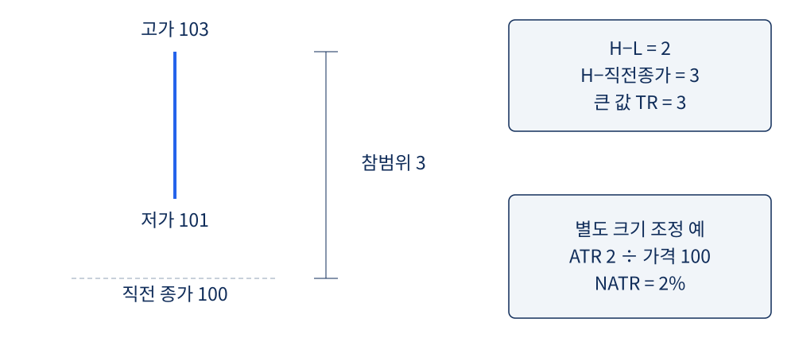
AIML Quant 도해 · 본문의 참범위 계산과 별도의 NATR 크기 조정 예.거래 여건에는 유동성도 포함됩니다. 매수·매도 스프레드가 크거나 호가창 깊이가 얕으면 적은 주문에도 가격이 움직일 수 있습니다. 호가창 깊이는 제시된 가격들에서 거래할 수 있는 수량을 뜻합니다. 스프레드·깊이·회전율·단위 거래량당 가격 충격을 특성으로 쓰면, 거래할 상품을 제외하는 마스크를 만들거나 유동성이 부족할 때 신호 가중치를 낮출 수 있습니다. 높은 예측 점수와 실제 거래 가능성은 같은 조건이 아닙니다.
유동성 대용치를 읽을 때도 기준을 적습니다. 같은 100주 주문이라도 호가창에 1만 주가 있는 경우와 50주만 있는 경우의 가격 충격은 다를 수 있습니다. 거래량·회전율은 거래 활동을, 깊이는 지금 제시된 주문을, 가격 충격은 거래 뒤 가격이 얼마나 움직였는지를 봅니다. 회전율처럼 분모를 정해 비율화하는 지표는 무엇을 기준 물량으로 삼았는지도 명세에 적습니다. 예측 점수에 이런 여건을 곱하거나 제외 조건을 두는 것은 신호가 같은 방향을 가리켜도 실제 주문 크기를 달리하는 선택입니다.
미시구조·거래량·주문 흐름 · 거래 방향과 자료 구조를 함께 본다
짧은 기간의 수급을 보려면 거래량에 방향을 붙여 집계할 수 있습니다. 매수자가 기존 매도 호가를 받아 거래했으면 매수 주도, 매도자가 매수 호가를 받아 거래했으면 매도 주도로 보는 방식입니다. 방향별 거래량을 합한 주문 흐름 불균형(OFI)은 어느 쪽이 더 적극적으로 거래했는지 요약합니다. 총량이 같아도 방향이 반대면 다른 신호가 됩니다.
이 계열은 수 초에서 수 시간의 신호나 상태로 쓰입니다. 집계 창을 고정된 초·분으로 둘지 일정한 거래·호가 사건 수로 둘지도 어떤 수급을 관측하는지 바꾸는 선택입니다.
이해용으로 매수 호가 100.00, 매도 호가 100.10인 시장에서 직전 100.02 다음에 100.04로 체결됐다고 합시다. 누가 거래를 일으켰는지 자료에 없으면 규칙으로 추정합니다. 틱 규칙은 직전 체결가보다 올랐으므로 매수 주도로 봅니다.
Lee-Ready식 방법의 호가 비교 단계는 체결가를 호가 중간값 100.05와 비교합니다. 100.04는 그 아래여서 매도 주도로 봅니다. 같은 거래도 규칙에 따라 부호가 갈린 것입니다. 거래소가 거래를 일으킨 쪽을 나타내는 공격자 표시를 주면 그 값을 쓸 수 있습니다. 가격과 호가의 시각이 어긋나면 추정 방향부터 틀릴 수 있어 두 자료의 시각을 맞춰야 합니다.
또 거래 기반 OFI와 호가창 OFI를 구분합니다. 전자는 실제 체결에 붙인 부호를 합합니다. 후자는 최우선 매수·매도 호가의 수량 변화를 써서 지정가 주문의 추가·취소 같은 변화도 반영합니다. 이를 계산하려면 주문장을 시각 순서대로 복원할 자료가 필요합니다. 주문장 자료가 없는데 거래량만으로 같은 개념을 관측했다고 할 수는 없습니다.
앞의 OFI를 어떤 크기와 비교할지도 정해야 합니다. 첫째는 시장의 수용 능력과 비교하는 방법입니다. 총거래량으로 나누면 거래 중 방향 불균형의 비율을 보고, 호가창 깊이로 나누면 그 흐름을 받아 줄 물량에 비해 압력이 얼마나 큰지 봅니다. 거래량은 많아도 깊이가 얕을 수 있으므로 두 비율은 다르게 움직일 수 있습니다.
둘째는 평소 상태와 비교하는 방법입니다. 자기 과거의 평균·표준편차로 z-점수화하면 평소에 비해 얼마나 이례적인 흐름인지 봅니다. 변동성으로 크기를 맞추는 정의도 있습니다. 어떤 변동성과 관측 창을 분모로 썼는지 기록해야 비교의 뜻이 분명해집니다.
작은 거래 예로 매수 주도 100주와 매도 주도 60주가 체결됐다면, 매수 방향을 +로 한 부호 거래량 합은 100−60=40주입니다. 이를 총거래량 160주로 나누면 0.25입니다. 거래량의 25%가 순매수 주도 방향으로 기울었다는 읽기이며, 미체결 주문이나 주문 취소까지 관측한 값은 아닙니다.
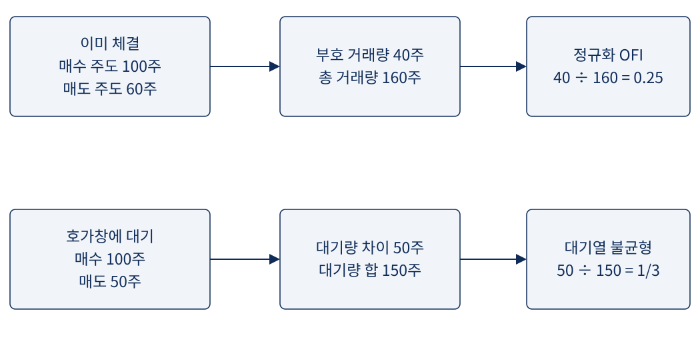
AIML Quant 도해 · 본문의 이미 체결된 물량과 대기 중인 물량을 나누어 계산했다.같은 매수 체결이 이어져도 호가창에 매수 주문이 계속 쌓이는지, 기존 주문이 빠르게 소진되는지는 다를 수 있습니다. 남아 있는 매수·매도 물량의 상대 크기가 대기열 불균형입니다. 아래 예에서는 두 물량을 직접 비교합니다.
흐름 한 단위가 가격을 얼마나 움직이는지 묻는다면 Kyle의 λ 같은 가격 충격 특성을 봅니다. 다만 관측 직후의 관계가 몇 분 뒤 체결 때까지 남는지부터 확인해야 합니다. 지표를 정교하게 만들어도 거래 전에 사라지는 정보라면 활용하기 어렵습니다.
대기열 불균형은 실제 체결 대신 호가창에 남은 물량을 봅니다. 예를 들어 정한 호가 단계의 매수 대기 100주, 매도 대기 50주라면 두 물량 차이를 합으로 나눈 값은 (100−50)/(100+50)=1/3입니다. 같은 종목에서 매수 체결이 많았는지와 지금 매수 주문이 많이 남았는지는 다른 질문입니다. 취소나 새 주문 때문에 두 값이 반대로 움직일 수도 있습니다.
원서가 드는 실패 가능성은 관측 직후의 관계가 실제 거래 시점에는 사라지는 경우입니다. 두 평가 시점을 구분해 적으면 다음과 같습니다.
\[t+\varepsilon\quad\hbox{대비}\quad t+5\text{분}\]
t는 관측 시각, ε는 아주 짧은 지연입니다. 5분은 원서의 실패 가능성 예에 쓰인 지연이고 모든 시장에서 정한 유효기간은 아닙니다.
예를 들어 t가 09:30이면 바로 뒤의 관측과 09:35에 거래했을 때를 나눠 평가합니다. 09:30 직후에만 관계가 보인다고 09:35 체결에도 그 관계가 남는다고 가정하지 않습니다.
자료 오류도 이 효과를 흉내 낼 수 있습니다. 체결 방향 오분류, 매수 호가가 매도 호가를 넘는 비정상적인 교차 호가, 늦게 보고된 거래를 당시 알 수 있었던 것처럼 배치한 자료가 예입니다. 실제 주문을 보내는 경로의 지연과 체결 가능성을 빼면 계산 결과와 실전의 의미가 달라집니다.
앞의 대기열 불균형을 계산하려면 가격별 주문과 깊이가 보여야 합니다. 매수·매도 지정가 주문을 모으는 중앙 지정가 주문장은 이런 자료를 제공할 수 있습니다.
거래할 때 호가를 요청하는 RFQ나 딜러 시장에서는 거래 기록을 통해 흐름을 간접적으로 읽습니다. 반면 자동화된 유동성 풀인 AMM에서는 풀의 상태를 관찰합니다. 전통적인 주문장이 없으므로 그 구조에 맞는 관측값을 골라야 합니다. 같은 수급 아이디어라도 시장이 공개하는 자료에 따라 계산법이 달라집니다.
호가를 직접 볼 수 없을 때는 거래 자료에서 유동성을 간접적으로 추정합니다. 같은 거래대금에 가격이 얼마나 움직였는지, 체결가가 얼마나 번갈아 반동하는지 살펴볼 수 있습니다. 다음 두 방법은 서로 다른 흔적을 이용하는 대용치입니다. 원서 노트북의 계산 항목은 검증 메모에 남겼습니다.
Amihud 비유동성은 같은 거래대금에서 가격이 얼마나 움직였는지를 읽는 대용치입니다. 절대 수익률을 거래대금으로 나누는 형태라면, 같은 0.1% 움직임도 거래대금이 100만 달러인 날과 1천만 달러인 날의 비율은 다릅니다. 거래대금이 작은 쪽의 값이 더 큽니다. 환율·거래량 단위·집계 창을 바꾸면 숫자 크기도 바뀌므로 이름만 보고 종목을 비교하지 않습니다.
앞의 100.10, 100.00 반복 체결에서는 한 번 오른 다음 내려가는 변화가 이어집니다. 두 변화가 반대쪽으로 움직이는 관계를 수치로 재면 음의 공분산이 나옵니다. 공분산은 두 변화의 방향과 크기를 단위와 함께 반영합니다.
Roll 스프레드는 연속한 체결가 변화의 이런 음의 공분산에서 호가 반동을 추정합니다. 효율 가격이 어떻게 움직이는지에 대한 모형 가정이 필요하므로, 실제 최우선 매수·매도 호가 차이와는 차이가 날 수 있습니다.
교재 사례에서 같은 구간의 OFI와 수익률 상관은 +0.053이지만, OFI와 뒤 구간 수익률의 상관은 −0.011입니다. 지금의 가격 움직임과 함께 나타난 관계가 다음 구간을 예측할 때는 약해진 것입니다. 이 비교에서는 지연 뒤 선형 예측 관계가 약하다는 점을 읽습니다. TSLA의 λ 보고값과 별도 구현의 구성은 검증 메모에 보존했습니다.
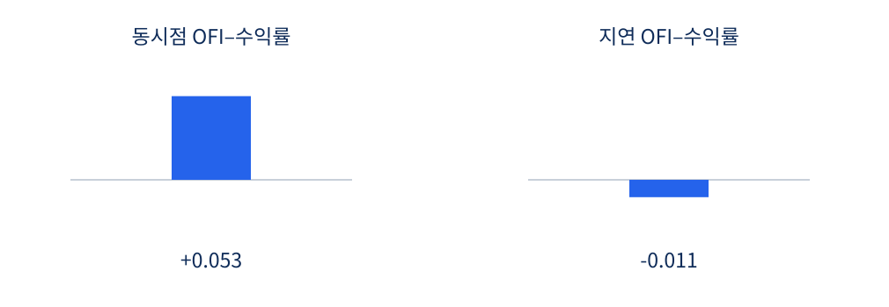
AIML Quant 도해 · 본문에서 설명한 값과 관계를 시각화했다.인쇄된 상관과 공식 노트북의 저장 예를 구분한다
아래 표는 교재의 보고값과 공식 노트북에 저장된 AAPL 하루 자료의 진단을 비교합니다. 각 5분봉 OFI는 그 봉의 거래가 끝나야 알 수 있으므로, 봉 시작부터 알고 있던 입력으로 쓰면 미래 정보가 섞입니다. 저장 예의 관측일과 집계 조건은 검증 메모에 남겼습니다.
import polars as pl
def compare_ofi_timing(aapl_features):
# 입력: 한 종목의 timestamp, ofi, returns를 담은 5분봉 표
pairs = aapl_features.sort("timestamp").with_columns(
pl.col("returns").shift(-1).alias("next_return")
).drop_nulls(["ofi", "returns", "next_return"])
return pairs.select(
pl.corr("ofi", "returns").alias("same_bar"),
pl.corr("ofi", "next_return").alias("next_bar"),
)| 근거 | 동시점 | 지연·다음 봉 | 표본 조건 |
|---|---|---|---|
| 교재 8.2 인쇄값 | +0.053 | −0.011 | 본문에 제시된 사례 보고값 |
| 공식 노트북 셀 19 저장값 | +0.5220 | +0.2133 | AAPL, 2020-01-30, 5분봉 38쌍 |
저장 예에서는 다음 봉과의 관계가 동시점보다 작지만 부호는 양수입니다. 교재 인쇄값과 표본 조건이 다른 진단이므로 검증 메모의 조건을 함께 확인해야 합니다. 이 표는 한 거래일의 상관을 보여 주며, 실제 주문 지연과 거래비용을 반영한 전략 성과를 보여 주는 것은 아닙니다.
Kyle λ라는 이름 아래의 계산식도 확인한다
이 저장 예의 λ는 거래량으로 크기를 맞춘 절대 수익률의 비율 대용치입니다. 노트북의 가격 충격 계수 설명과 실제 라이브러리 기본값이 다르다는 점은 검증 메모에 남겼습니다. 이해용으로 절대 수익률 1%, 거래량 100주, 최근 평균 거래량 200주를 넣어 계산을 읽어 봅시다.
\[\begin{gathered}q_t=\frac{|r_t|}{V_t/\bar V_{n,t}}\\\lambda^{\mathrm{ratio}}_t=\frac1n\sum_{i=0}^{n-1}q_{t-i}\end{gathered}\]
예의 rₜ는 한 봉의 단순 수익률 0.01, Vₜ는 거래량 100주, V̄ₙ,ₜ는 최근 n봉 평균 200주입니다. 100/200이라는 상대 거래량으로 0.01을 나눈 값이 한 봉의 qₜ입니다. n은 이 예에서 20이며, q를 20봉 평균한 값이 λ_ratio입니다. 분모에 단위가 없어 q와 λ_ratio는 수익률과 같은 척도로 읽습니다.
이해용 한 봉의 절대 수익률이 1%, 거래량이 100주, 창 평균 거래량이 200주라면 q=0.01/(100/200)=0.02입니다. 이런 값이 20봉 모두 같다면 평균 λ_ratio도 0.02가 됩니다. 거래량 단위를 함께 바꿔도 정규화된 비율은 같지만, 창과 표본을 바꾸면 값이 달라질 수 있습니다.
| 종목 | λ 대용치 중앙값 | Amihud 중앙값 | 계산 후 봉 수 |
|---|---|---|---|
| AAPL | 0.001167 | 0.000561 | 40 |
| MSFT | 0.001604 | 0.000415 | 58 |
| TSLA | 0.003053 | 0.000172 | 58 |
저장 요약에서 TSLA의 λ 대용치 중앙값은 0.003053으로 교재의 약 0.003과 대응합니다. 반면 Amihud 중앙값은 AAPL이 가장 높고 TSLA가 가장 낮습니다. 두 대용치가 서로 다른 산술과 기준으로 유동성을 재기 때문입니다. 라이브러리의 10⁶ 배율과 셀 출처, 남은 봉 수의 차이는 검증 메모에 보존했습니다.
8.3 구조적·교차 상품 특성 — 개별 가격 이력에는 보이지 않는 정보
가격이 똑같이 100인 두 선물이 있어도 보유 조건은 같지 않을 수 있습니다. 한 상품은 다음 만기의 계약이 더 비싸고, 다른 상품은 더 쌉니다. 주식 한 종목이 3% 올랐다는 사실도 동종 종목이 모두 5% 오른 날에는 다르게 읽힙니다. 옵션 가격에는 과거 수익률만으로 알 수 없는 보호 수요가 들어 있습니다. 이런 정보를 쓰려면 한 자산의 가격 이력 밖으로 시야를 넓혀야 합니다.
이 절은 만기별 선물 가격, 상품 사이의 관계, 옵션 가격에서 꺼내는 특성을 다룹니다. 각각 보유 비용, 비교 집단 안의 상대적 위치, 미래 위험에 시장이 매기는 가격을 측정합니다. 같은 숫자라도 어떤 계약과 상품을 짝지었는지에 따라 뜻이 달라집니다.
캐리, 펀딩, 기간구조
원유 선물의 만기가 다가와 다음 계약으로 바꾼다고 해 봅시다. 지금 보유한 근월물이 102이고 다음 만기의 원월물이 103이면, 같은 수량의 노출을 이어 가는 데 더 비싼 계약을 사야 합니다. 캐리는 가격 자체의 방향 변화와 구분해서, 포지션을 보유하는 동안 얻거나 부담하는 수익을 가리킵니다. 롤 수익률, 현물과 선물의 차이인 베이시스, 무기한 선물의 펀딩, 만기별 곡선 모양이 대표적인 측정값입니다. 이 계열은 보유 위험을 감수하는 대가라는 경제적 가설과 연결됩니다.
롤은 만기가 가까운 계약을 정리하고 더 먼 계약으로 옮겨 노출을 유지하는 일입니다. 롤 수익률은 두 만기의 가격 차이를 만기 간격에 맞춰 연율화합니다. 원월물이 근월물보다 비싼 곡선은 콘탱고, 싼 곡선은 백워데이션이라고 합니다. 여기서는 롱 보유자의 관례를 쓰므로 콘탱고의 롤 수익률은 음수, 백워데이션은 양수입니다. 현재 곡선에서 계산한 이 값은 앞으로의 총수익률을 보장하지 않습니다. 실제 가격과 곡선도 움직이기 때문입니다.
가장 가까운 두 계약을 비교하면 곡선 앞부분의 수급에 민감한 값을 얻습니다. 근월물과 훨씬 먼 계약을 비교하면 더 넓은 기울기를 측정하며, 더 오래 지속되는 조건을 담을 수 있습니다. 만기 간격이 다른 상품끼리 비교하려면 같은 연간 기준으로 환산해야 합니다. 그 뒤 같은 원자재 섹터 안에서 순위를 매기면, 절대적인 캐리 크기 대신 동종 상품 중 상대적으로 보유 조건이 좋은 쪽을 구분할 수 있습니다.
근월·원월 가격의 상대적 차이를 연간 기준으로 환산합니다.
\[\mathrm{roll}_{t}=\frac{F_{t,n}-F_{t,f}}{F_{t,n}}\frac{365}{\Delta T}\]
F는 결정 시점 t의 선물 가격이고 n·f는 근월·원월 계약입니다. ΔT는 두 만기의 차이를 일수로 잰 값입니다. 가격 단위는 같은 상품 안에서 같아야 하며 결과는 연율 소수입니다.
이해용 근월 102, 원월 103, 만기 간격 30일이면 (102−103)/102×365/30 ≈ −0.1193, 곧 연 −11.93%입니다. 공식 노트북은 실제 만기 간격 대신 30일을 고정한 간단한 예를 씁니다.
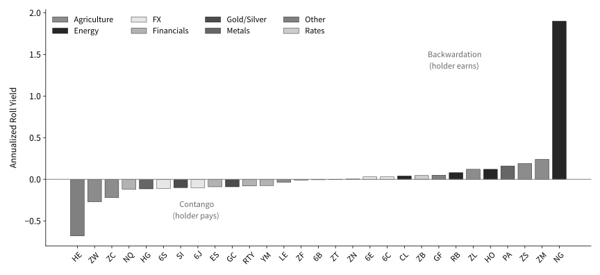
원본 판독값 · 막대 높이는 원본에서 약 0.01 단위로 읽었다. 0 근처의 작은 막대는 정밀 수치보다 부호와 상대적 위치를 읽는다. 원본의 상품 순서와 범례를 유지했다. 양수는 롱의 캐리 수입, 음수는 비용이다. 같은 날짜의 횡단면이며 장래 수익률의 예측 결과가 아니다. 원서 그림 8.4.왼쪽 HE는 약 −0.65 부근의 큰 음수이고 밀 ZW와 옥수수 ZC도 음수입니다. 주가지수·금리·FX 상품은 대체로 0 주변에 모입니다. 오른쪽 천연가스 NG는 약 +1.9로 다른 상품보다 큽니다. 농산물에서도 HE·ZW·ZC와 ZL·ZS·ZM의 부호가 갈립니다. 섹터 이름만으로 캐리를 정할 수 없으므로 섹터 안의 순위가 의미를 갖습니다. 그림의 전체 정렬은 막대 크기 순이며, 섹터는 회색 농도의 범례로 구분합니다.
만기별 가격을 이은 기간구조에는 기울기 외에도 정보가 있습니다. 곡선 전체가 함께 오르는 수준 변화, 가까운 만기와 먼 만기의 차이가 바뀌는 기울기 변화, 중간 만기가 양끝과 다르게 움직이는 곡률 변화를 나눠 볼 수 있습니다. 중간과 양끝 계약을 함께 쓰는 버터플라이 스프레드는 곡률을 측정하는 방법입니다. 세 측정값은 서로 다른 움직임을 구분하지만 언제나 통계적으로 독립이라는 뜻은 아닙니다.
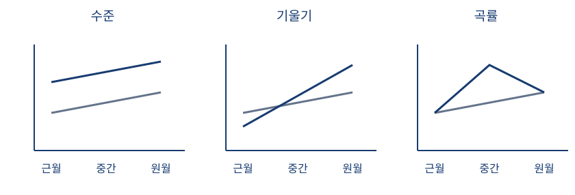
AIML Quant 도해 · 가로축은 만기 순서, 세로축은 같은 상품의 가격이다. 회색에서 파란색으로 바뀔 때 어떤 부분이 달라지는지 읽는다. 세로 높이는 이해용이며 시장 관측값이 아니다.세 계약의 가격으로 넓은 기울기와 곡률을 요약합니다.
\[\begin{gathered}\mathrm{slope}=\frac{F_0-F_2}{F_0}\\ \mathrm{curvature}=F_0-2F_1+F_2\end{gathered}\]
F0·F1·F2는 같은 시점의 근월·중간·원월 가격입니다. 기울기는 단위 없는 소수, 곡률은 해당 상품의 가격 단위입니다. 이 식은 공식 노트북의 세 만기 예입니다.
이해용 가격이 100·103·104이면 기울기는 −4%, 곡률은 −2입니다. 중간 가격만 101로 바꾸면 곡률은 +2가 됩니다. F0−2F1+F2 관례에서는 중간이 위로 불룩할 때 음수입니다.
박스 8.2: 암호화폐 무기한 선물 — 뚜렷이 다른 캐리 국면
무기한 선물에는 정해진 만기가 없습니다. 대신 롱과 숏이 정해진 시각마다 펀딩이라는 현금을 주고받아 가격이 현물에서 지나치게 멀어지지 않게 합니다. 교재의 대표 예는 UTC 00:00·08:00·16:00의 8시간 주기입니다. 거래소와 계약에 따라 4시간이나 1시간 주기도 있으므로 실제 입력 자료의 정산 간격을 확인해야 합니다. 4시간마다 정산되는 자료를 8시간 정산 한 번으로 취급하면 서로 다른 현금흐름을 섞습니다.
첫 설계 선택은 시계를 맞추는 일입니다. 정산 전후의 관측을 어긋난 창에 넣으면, 펀딩이 부과되기 전의 상태와 부과된 뒤의 상태가 같은 값으로 요약될 수 있습니다. 실제 정산 경계에 맞춘 창을 쓰거나, 한 정산 창 안에서 값이 어떻게 변했는지 별도로 모델링합니다.
두 번째는 베이시스와 펀딩을 분리하는 일입니다. 현물이 100이고 무기한이 101이면 현재 가격 차이는 1%입니다. 이것이 베이시스입니다. 그와 별개로 다음 정산에서 롱이 숏에게 0.015%를 지급할 수 있습니다. 베이시스는 당장의 가격 괴리와 수급을, 펀딩은 보유를 이어 가는 현금 비용을 측정합니다. 두 값을 하나로 합치면 기간도 실패 조건도 다른 정보를 구분하기 어렵습니다.
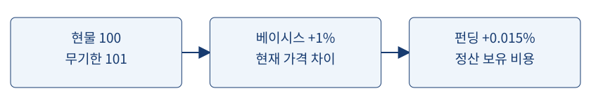
AIML Quant 도해 · 수치는 이해용이다. 가운데는 같은 시점의 가격 차이, 오른쪽은 한 정산 구간의 금리다. 둘을 같은 종류의 백분율이라고 그대로 더하지 않는다.세 번째는 펀딩의 역할을 적는 일입니다. 높은 양의 펀딩에서는 롱이 숏에게 돈을 냅니다. 극단적인 펀딩 뒤 무기한이 상대적으로 부진해질 수 있다는 평균 회귀 가설을 세우면 펀딩은 신호입니다. 높은 펀딩이 계속되면서 한쪽 포지션의 쏠림과 취약성을 나타낸다고 보면 상태 변수입니다. 후자의 경우에는 다른 방향성 신호를 얼마나 믿을지 조건화합니다. 교재의 경제적 해석이며 모든 시장에서 성립하는 법칙은 아닙니다.
현재 곡선에서 관측하는 전통 선물의 롤 비용과, 다음 정산마다 시장 조건에 따라 재설정되는 펀딩을 같은 것으로 다뤄서는 안 됩니다. 교재는 변동성 국면에서 펀딩이 몇 시간 만에 100bp, 곧 1%포인트씩 움직일 수 있음을 경고합니다. 일정한 금리가 계속된다고 가정해 연율화한 값은 그 국면에서 유지되지 않을 수 있습니다.
베이시스·롤 수익률·펀딩을 같은 예에서 계산하기
현물은 100, 30일 만기 선물은 102, 60일 만기 선물은 103이라고 합시다. 현물과 근월물을 비교하는 질문과, 근월물에서 원월물로 옮기는 질문은 서로 다릅니다. 공식 Primer는 이 차이를 같은 곡선 위에서 설명합니다.
현물에 비해 한 만기의 선물이 얼마나 비싼지를 연율화합니다.
\[b(t,T)=\frac{\ln F(t,T)-\ln S_t}{\tau(t,T)}\]
t는 관측 시각, T는 만기, F(t,T)는 그 만기의 선물 가격, St는 현물 가격입니다. ln은 자연로그이고 τ는 남은 만기를 연수로 나타낸 값입니다. 가격비의 로그를 쓰므로 b의 단위는 연율입니다.
30일 만기라면 τ=30/365입니다. ln(102/100)/(30/365)≈0.2409, 약 +24.1%입니다. 선물이 현물보다 비싸다는 뜻이며 확정 수익률이 아닙니다.
두 만기의 상대 가격으로 로그 방식의 롤 수익률을 계산합니다.
\[\mathrm{roll}^{\log}=\frac{\ln(F_n/F_f)}{\tau_f-\tau_n}\]
Fn·Ff는 같은 시점의 근월·원월 가격이고 τn·τf는 각 잔존 만기의 연수입니다. 결과는 연율 소수입니다. 앞의 단순 가격차 방식과 부호는 같지만 유한한 가격차에서는 값이 조금 다릅니다.
ln(102/103)/(30/365)≈−0.1187, 약 −11.87%입니다. 현물 대비 베이시스 +24.1%와 롤 수익률 −11.87%는 서로 다른 짝을 비교하므로 함께 나타날 수 있습니다.
거래소의 펀딩 부호를 롱 보유자의 캐리 부호로 바꿉니다.
\[\begin{gathered}c_t^{\mathrm{long}}=-f_t^{\mathrm{exch}}\\ c_{\mathrm{ann}}^{\mathrm{simple}}=-3\times365\times f_t^{\mathrm{exch}}\end{gathered}\]
f는 한 번 정산되는 펀딩 금리입니다. 양수일 때 롱이 숏에게 내는 거래소 관례를 가정합니다. 왼쪽은 정산당 수익률, 오른쪽은 하루 세 번의 동일 금리를 단순 합산한 연율입니다. 복리 수익률이 아닙니다.
8시간마다 f=0.015%=0.00015라면 롱 캐리는 정산당 −0.015%, 단순 연율은 −0.16425, 약 −16.4%입니다. 금리가 매번 바뀌므로 이 숫자를 1년 동안 확정된 비용으로 읽지 않습니다.
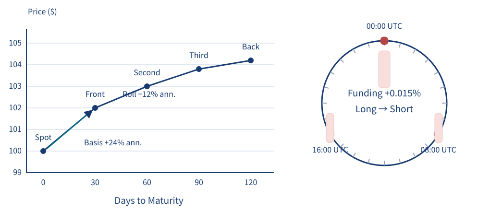
원본 판독값 · 공식 Primer의 두 패널을 재작도했다. 베이시스 화살표는 현물→근월, 롤 비교는 근월→차근월이다. +24%와 −12%는 반올림한 연율, +0.015%는 한 정산의 금리다. 출처: 공식 Primer 「Carry, Basis and Roll Yield Across Futures and Perpetuals」. 공식 Primer이 계열을 수일에서 수개월의 신호나 상태로 쓰려면, 어떤 계약월을 근월물로 삼는지부터 적습니다. 롤·펀딩 시계, 레이블 기간에 맞는 만기, 곡선의 수준·변화·순위 중 어느 표현인지가 뜻을 바꿉니다. 계약 정의가 바뀌는 날의 불연속이나 롤 날짜와 관측 창의 어긋남을 실제 시장 변화로 오인할 수 있습니다. cme_futures 사례는 30개 상품을 다루지만 그림 8.4의 날짜에 표시된 상품은 29개입니다. crypto_perps_funding 사례는 만기 롤 대신 펀딩을 캐리 계열 입력으로 씁니다.
교차자산 구조와 상대가치 — 공통 노출, 선후행, 관계의 변화
한 종목이 오늘 3% 올랐는데 동종 평균은 1% 올랐다면, 시장 전체와 함께 오른 부분 외에 2%포인트의 상대적인 상승이 남습니다. 상대가치 특성은 이런 차이에 주목합니다. 시장·섹터·요인처럼 함께 움직일 만한 부분을 제거하는 중립화가 무엇을 개별 정보로 볼지 결정합니다. 어떤 동종 집합을 고르느냐가 곧 가설의 일부입니다.
동종 집단에서 벗어난 크기를 해당 자산의 변동성 단위로 나타냅니다.
\[z_{i,t}=\frac{r_{i,t}-\bar r_{P(i),t}}{\sigma_{i,t}}\]
i는 자산, t는 관측 시각, r은 같은 관측 기간의 수익률, P(i)는 동종 집합, 평균 기호는 그 집합의 평균입니다. σ는 해당 자산의 같은 기준으로 잰 변동성입니다. 분자와 분모를 같은 수익률 단위로 두면 z는 단위가 없습니다.
이해용 자산 수익률 3%, 동종 평균 1%, 자기 변동성 2%이면 z=(0.03−0.01)/0.02=1입니다. 상대 편차가 자기 변동성 한 단위라는 뜻입니다.
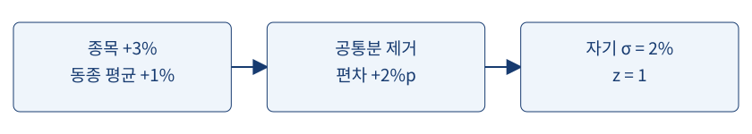
AIML Quant 도해 · 같은 수익률에서도 동종 집합과 분모가 달라지면 점수의 뜻이 달라진다. 높은 z 자체가 상승 지속이나 하락 반전을 보장하지 않는다.섹터 동종 집합은 비슷한 사업의 공통 움직임을 제거합니다. 요인 모형은 시장이나 규모 등의 공통 노출을 추정해 제거합니다. 통계적 군집은 관측된 움직임이 비슷한 자산을 묶습니다. 셋은 공통이라는 말의 정의가 달라 같은 자산에서도 다른 잔차, 곧 공통분을 제거한 나머지를 만듭니다. 동종 집합을 자주 바꾸면 측정 기준 자체가 백테스트 중에 움직입니다. 구성 자산과 갱신 주기를 기록해야 하는 이유입니다.
잔차 모멘텀은 공통 요인으로 설명하지 못한 수익률의 지속성을 측정합니다. 시장·섹터 노출을 제거한 뒤에도 남는 개별 정보를 찾는 가설입니다. 원시 모멘텀보다 넓은 시장 방향에 덜 노출되도록 구성하지만, 노출 추정에 잡음이 들어가거나 구조가 바뀌면 잔차도 불안정해질 수 있습니다.
두 번째 질문은 선후행 관계입니다. 한 시장의 현재 움직임과 다른 시장의 다음 움직임을 연결해 봅니다. 교재는 신용 스프레드와 주식 낙폭, FX 변동성과 금리 변동성, 일중 BTC와 알트코인 포지셔닝을 가능한 가설로 듭니다. 동시에 관측한 두 가격의 상대 차이를 보는 것과 달리, 여기는 시간 순서가 핵심입니다. 시간대·거래시간·결제 관례·오래된 가격을 맞추지 않으면 거래가 늦게 반영된 현상을 새로운 정보 전달로 오인할 수 있습니다.
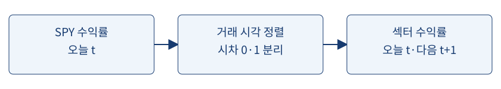
AIML Quant 도해 · 같은 날 상관이 높아도 다음 날을 예측한다는 증거는 아니다. 먼저 실제로 비교 가능한 거래 시각을 맞춰야 한다.세 번째 질문은 두 자산의 관계가 어떻게 변하는가입니다. SPY는 미국 주식시장, TLT는 미국 장기 국채에 노출된 ETF입니다. 두 수익률의 63일 롤링 상관은 최근 약 한 분기 동안 주식과 채권이 함께 움직였는지 나타냅니다. 음의 상관은 두 자산을 함께 보유할 때 변동을 서로 줄이는 데 도움이 됩니다. 0이나 양수에 가까워지면 통상적인 주식–채권 헤지가 약해집니다. 교재는 2022년을 이런 환경의 예로 듭니다. 상관 하나만으로 모든 분산 효과나 안전자산 선호의 원인을 확정할 수는 없습니다.
etfs 사례의 corr_spy_tlt_63d는 이런 관계를 상태 입력으로 씁니다. 21일 모멘텀 레이블을 대상으로 폴드와 설정을 조합한 관측 120건을 집계했을 때, 27개 입력 중 결측치를 제외해 계산한 폴드 정규화 중요도 평균이 0.73으로 가장 높았습니다. yield_curve_zscore와 모멘텀 기울기보다 앞선 값입니다. 특성 중요도는 그 모형이 입력을 얼마나 활용했는지 보여 주는 지표입니다. 이 수치는 단독 IC, 예측 정확도 73%, 수익률 73% 가운데 어느 것도 아닙니다. LightGBM이 관계 상태를 반복해서 분할 기준으로 썼다는 관측이며, 그 변수가 단독으로 미래 수익을 예측하는지는 분리해 보여 주지 않습니다.
이 계열은 수 시간에서 수개월의 신호나 상태로 사용할 수 있습니다. 쌍 스프레드, 동종 내 편차와 순위, 요인 중립 잔차, 동종 내 모멘텀을 만들 때는 비교 집합·중립화 강도·갱신 주기가 의미를 바꿉니다. 과거 유니버스가 현재 생존 종목으로 바뀌는 문제, 잦은 집합 재정의, 중립화가 추가하는 추정 잡음이 대표적인 실패 조건입니다.
범주를 미래 정답의 요약값으로 바꾸지 않는다
동종 집합을 만들 때 섹터나 종목 ID 같은 범주형 변수를 씁니다. 원-핫 인코딩은 범주마다 0·1 열을 두는 방법입니다. 범주가 많으면 열이 많아집니다. 타깃 인코딩은 대신 각 범주에 속한 관측의 정답 평균을 숫자 하나로 넣습니다. 예측할 정답을 특성 계산에 다시 쓰기 때문에 정보 누출에 특히 주의해야 합니다.
예를 들어 2022년 전체 실현 수익률로 종목별 평균을 만든 뒤 3월의 입력에 붙이면, 3월 행의 미래 정답과 그해 12월의 관측까지 과거 입력에 들어갑니다. 현재 행을 빼는 것만으로는 충분하지 않습니다. 앞선 날짜의 레이블이라도 보유 기간이 아직 끝나지 않았다면 결정 시점에 사용할 수 없기 때문입니다.
과거 같은 범주의 정답 합계를 사전 평균 쪽으로 줄여 범주 숫자를 만듭니다.
\[\mathrm{enc}_i(c)=\frac{\sum_{t_j<t_i,\ x_j=c}y_j+a p}{\sum_{t_j<t_i,\ x_j=c}1+a}\]
i는 현재 행, j는 과거 행, t는 시각, xj=c는 같은 범주라는 조건, yj는 정답입니다. p는 사전 평균, a는 평균 쪽으로 줄이는 강도로 표본 수처럼 작용합니다. 결과의 단위는 y와 같습니다. 금융 시계열에서는 합계에 쓰는 yj가 ti에 이미 확정·가용해야 하며 p도 같은 제한을 지켜야 합니다.
이해용 과거 같은 범주 두 건의 정답이 +2%·−1%, p=0, a=2이면 (0.02−0.01+2×0)/(2+2)=0.0025, 곧 0.25%입니다. 단순 평균 0.5%보다 사전 평균 쪽으로 줄었습니다.
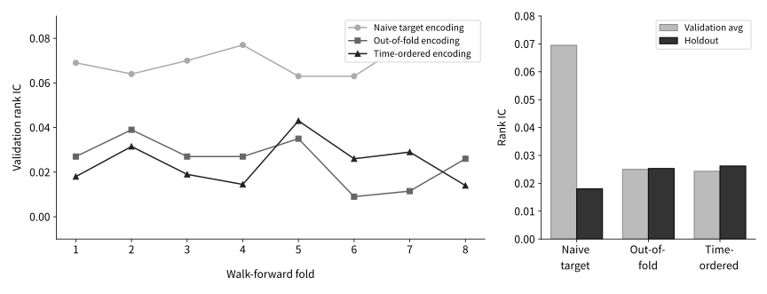
원본 판독값 · 공식 Primer의 여덟 폴드·세 시리즈·두 패널을 같은 축과 범례로 재작도했다. 순진한 타깃 인코딩의 검증 평균은 약 0.07이나 홀드아웃은 약 0.018이다. 폴드 밖·시간순 방식은 대체로 0.02대다. 값은 원본에서 약 0.001 단위로 읽었으며 새로운 벤치마크 실행이 아니다. 출처: 공식 Primer 「Leakage-Safe Categorical Encoding for Financial ML」. 공식 Primer이 그림에서 확인할 것은 점수의 절대적인 높이보다 평가를 바꿨을 때 벌어지는 차이입니다. 순진한 방식의 높은 검증 IC가 홀드아웃에서 유지되지 않습니다. 자기 정답을 제외했는지, 아직 확정되지 않은 정답을 제외했는지, 드문 범주를 축소했는지, 인코더가 학습 폴드에서만 적합됐는지를 함께 확인해야 합니다.
구현 · 롤링 베타, 잔차 모멘텀, 선후행을 실제 출력과 연결한다
03_structural_cross_instrument_features는 선물·ETF·옵션의 예를 한 노트북에서 다룹니다. 아래 값과 시계열은 공식 노트북에 저장된 출력입니다. 예측 모형의 표본 외 성과 실험이 아니라 관측 특성의 구성과 진단이므로 학습·테스트 분할이나 매매 포지션·보유 기간·거래비용을 적용하지 않았습니다. 수익률 관계를 그렸다고 거래 가능한 순이익이 확인된 것은 아닙니다.
선물 예는 ES·CL·GC·ZN의 세 만기에서 42,960행을 읽으며 기간은 2011-01-03부터 2025-12-31입니다. 근월과 차근월의 원래 가격 raw_close를 같은 날짜·상품으로 결합하고 앞에서 본 30일 고정 식을 계산합니다. 롤 조정된 연속가격에는 누적 연결 조정이 들어가 있으므로 동시점의 곡선 수준을 비교할 때 그대로 쓰지 않습니다. 각 상품의 마지막 이용 가능한 행에 저장된 연율은 ES −0.0885, CL +0.0420, GC −0.0909, ZN +0.0084입니다. 마지막 날짜는 상품마다 다를 수 있어 그림 8.4의 동일 날짜 횡단면과 구분합니다.
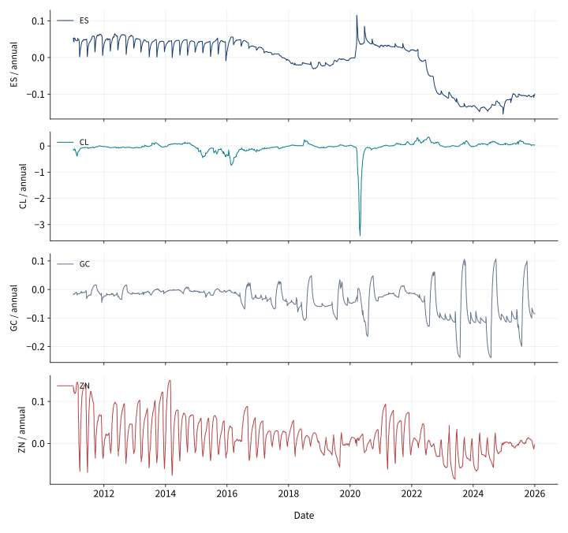
공식 노트북 저장 출력 · 03번 노트북 셀 12의 네 시리즈 3,864·3,868·3,864·3,720점을 전부 사용했다. 연율 소수이며 21일 지수이동평균으로 평활화했다. CL의 양의 구간은 보유자에게 유리한 현재 곡선이지 확정된 장래 총수익이 아니다. 그림 8.4의 29상품 횡단면을 대체하는 그림이 아니다.세 만기 기울기·곡률 출력의 ZN 예도 단위를 나눠 읽습니다. 2025-12-19의 기울기는 0.000695로 약 0.0695%, 곡률은 −0.703125로 선물 가격 단위입니다. 부호가 다르다고 모순이 아닙니다. 양끝의 상대 차이와 중간의 굽음을 따로 측정하기 때문입니다.
ETF 예는 SPY·QQQ·TLT·GLD·XLF·XLE·XLK·XLV의 40,248행에서 일간 수익률을 만듭니다. 베타는 시장 수익률 한 단위 변화에 자산 수익률이 얼마나 함께 변했는지 나타내는 계수입니다. 63일 롤링 베타를 쓴 다음 시장 기여분을 빼고, 남은 일간 수익률을 21일간 합합니다.
시장 움직임에 따른 부분을 제거한 일간 수익률을 계산합니다.
\[\begin{gathered}r^{\mathrm{resid}}_{t,i}=r_{t,i}-\beta_{t,i}r_{t,m}\\ M^{\mathrm{resid}}_{21,t,i}=\sum_{k=0}^{20}r^{\mathrm{resid}}_{t-k,i}\end{gathered}\]
r은 일간 수익률, i는 자산, m은 시장 대용 SPY, β는 63일간 추정한 시장 노출입니다. 잔차도 수익률 단위이며 M은 노트북이 사용하는 단순 합계입니다.
이해용 자산 수익률 +3%, SPY +1%, β=1.5라면 잔차는 +1.5%입니다. 이런 잔차가 21일 모두 +0.1%였다면 합계는 2.1%입니다. 복리 누적수익률과는 다릅니다.
# market_return·asset_return·beta는 같은 날짜 순서로 정렬한 배열이다.
def residual_momentum(asset_return, market_return, beta):
residual = asset_return - beta * market_return
return residual[-21:].sum()
| 상품 | 63일 β | 원시 21일 합계 | 잔차 21일 합계 | 횡단면 z |
|---|---|---|---|---|
| XLK | 1.536042 | 0.008367 | −0.000084 | 0.160919 |
| QQQ | 1.330805 | −0.002661 | −0.010152 | −0.486242 |
| SPY | 0.976734 | 0.005676 | 0.000100 | 0.003032 |
| XLF | 0.644343 | 0.038929 | 0.035347 | 1.954329 |
| XLE | 0.432490 | −0.011045 | −0.012276 | −0.978172 |
| XLV | 0.361009 | 0.001682 | −0.001101 | −0.231389 |
| GLD | 0.329112 | 0.018275 | 0.017485 | 0.742350 |
| TLT | −0.038510 | −0.014225 | −0.013571 | −1.164826 |
XLK의 원시 합계 0.8367%는 잔차 합계에서 거의 0으로 줄어듭니다. 반면 XLF는 시장 공통분을 빼도 +3.5347%가 남습니다. 이것은 그 날짜의 계산 결과이며, 잔차가 크다는 이유로 이후 수익률도 높다고 결론내리지 않습니다. 표의 마지막 열은 같은 날 여덟 ETF의 모멘텀 평균·표준편차로 만든 횡단면 z-점수입니다. 앞에서 자기 변동성을 분모로 쓴 동종 편차와는 다른 정의입니다. 비교 집단과 분모를 함께 적어야 하는 실제 예입니다. 출처: 03번 노트북 셀 23·25·31 저장 출력.
선후행 검정에서는 오늘 SPY 수익률과 오늘 섹터 ETF 수익률의 상관, 오늘 SPY와 다음 거래 관측의 섹터 수익률 상관을 구분합니다. 공식 코드의 핵심 짝짓기는 다음과 같습니다.
import numpy as np
def lead_lag(spy, sector):
# 같은 거래 날짜로 결합하고 결측치를 제거한 일간 수익률 배열
contemporaneous = np.corrcoef(spy, sector)[0, 1]
lag_one = np.corrcoef(spy[:-1], sector[1:])[0, 1]
return contemporaneous, lag_one
| 섹터 | 동시 상관 | 오늘 SPY–다음 관측 섹터 |
|---|---|---|
| XLF | 0.840 | −0.095 |
| XLE | 0.730 | −0.059 |
| XLK | 0.916 | −0.125 |
| XLV | 0.807 | −0.067 |
동시 상관은 높지만 시차 1 상관은 네 상품 모두 음수입니다. 오늘 SPY 상승이 내일도 이어지는 양의 선후행 신호는 이 일간 검정에서 나오지 않았습니다. 음수는 단기 반전과 맞는 방향입니다. 교재는 매수·매도 호가 반동, ETF 리밸런싱, 단기 자금 흐름의 반전을 가능한 설명으로 제시하지만 이 출력만으로 원인을 확인하지는 못합니다. 거래 가능한 선후행 효과로 승격하기 전에 시각 정렬과 비용을 따로 검증해야 합니다. 출처: 03번 노트북 셀 28 저장 출력. 운용 사례의 SPY–TLT 상관은 etfs, 중요도는 13_model_analysis, 변동성 삼분위 조건화는 06_robustness_sensitivity에 이어집니다.
옵션 내재 특성 — 시장이 보호와 상승 노출에 얼마를 치르는가
같은 주가 100에서도 다음 달 급락을 걱정하는 사람이 많으면 하방 보호용 옵션에 더 높은 가격을 낼 수 있습니다. 옵션 가격을 읽으면 과거에 얼마나 흔들렸는지와 다른 정보를 얻습니다. 내재 변동성(IV)은 옵션 가격결정 모형에 넣었을 때 관측한 옵션 가격을 맞추는 변동성 값입니다. 행사가와 만기마다 이를 구하면 내재 변동성 표면이 됩니다. 위험의 가격에는 기대뿐 아니라 위험을 부담하는 보상과 수급도 섞이므로, 이를 실제 미래 결과의 확률과 그대로 같다고 보지는 않습니다.
표면의 변화가 시장 변화인지 계산법 변화인지 구분하려면 같은 표면 정책을 지켜야 합니다. 행사가를 현물·선도·델타 가운데 무엇에 맞출지, 오래되거나 넓은 호가를 어떻게 걸러낼지, 매수·매도 중간가와 마지막 체결가 중 무엇을 쓸지 정합니다. 관측하지 않은 행사가·만기를 보간하는 법, 범위를 벗어나는 값을 외삽하는 법, 들쭉날쭉한 잔존 만기를 고정 30일로 맞추는 법도 포함합니다. 정책을 중간에 바꾸면 특성에 구성상의 차이가 생깁니다.
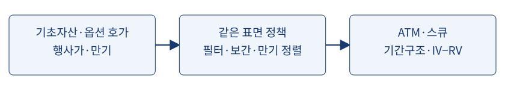
AIML Quant 도해 · 표면 정책은 경제적 비교의 기준이다. 불안정한 호가와 보간 방식의 차이를 기대 변화로 읽지 않도록 같은 정책을 유지한다.ATM과 OTM의 기준
등가격(ATM)은 행사가가 현재 가격에 가까운 옵션입니다. 더 정확한 기준은 해당 만기의 선도 가격, 곧 그 만기에 맞춘 거래 가격입니다. ATM 옵션은 보통 거래가 활발해 변동성 전반의 기준으로 쓰기 좋습니다. 외가격(OTM)은 현재 가격에서 바로 행사할 때 내재 가치가 없는 옵션입니다. 기준가격이 100이면 행사가 90인 풋, 행사가 110인 콜이 OTM입니다. 풋은 팔 권리, 콜은 살 권리이므로 각각 큰 하락·상승 뒤에 가치가 생깁니다.
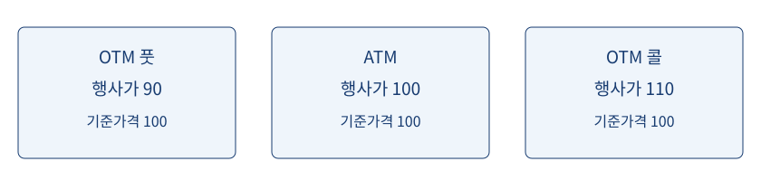
AIML Quant 도해 · 행사가가 낮다는 말은 풋과 콜에서 같은 의미가 아니다. OTM 풋과 OTM 콜을 비교할 때 만기와 가격에서 떨어진 정도를 맞춘다.표면에서는 다음과 같은 경제적 차이를 읽습니다. 첫째, 고정 30일 ATM IV 수준은 전반적인 변동성 상태를 나타냅니다. 높으면 시장이 큰 불확실성을 가격에 반영하고 있다는 뜻이며 확정된 미래 변동성은 아닙니다. 둘째, 내재–실현 스프레드는 같은 기간의 IV와 실제로 나타난 변동성 RV의 차이입니다. 지수 옵션에서는 평균적으로 IV가 사후 RV보다 높았다는 역사적 관찰이 있고, 그 차이는 변동성 위험을 부담하는 보상과 연결됩니다. 다만 IV−RV는 변동성 단위의 대용치이며, 분산 단위의 엄밀한 위험 프리미엄과 같지는 않습니다.
셋째, 리스크 리버설은 여기서 같은 만기의 25델타 풋 IV에서 25델타 콜 IV를 뺀 값입니다. 델타는 기초자산 가격이 변할 때 옵션 가격이 얼마나 민감하게 반응하는지 나타냅니다. 25델타는 풋의 경우 절댓값 0.25, 콜의 경우 +0.25를 맞추는 관례입니다. 풋−콜이 클수록 상대적으로 하방 보호가 비쌉니다. 다른 부호 관례를 쓰는 자료와 결합할 때는 먼저 정의를 맞춥니다.
넷째, 변동성 기간구조 기울기는 단기 IV와 장기 IV를 비교합니다. 가까운 만기의 IV가 더 높아지면 임박한 사건이나 스트레스로 단기 불확실성이 특히 커졌을 수 있습니다. 다섯째, 풋–콜 스큐는 만기와 ATM에서 떨어진 거리를 최대한 맞춘 OTM 풋·콜의 IV 차이입니다. ATM의 전체 수준과 분리해 하방 꼬리가 상방보다 얼마나 비싼지 봅니다. 리스크 리버설과 비슷한 질문이지만 델타를 맞추는지 가격 거리를 맞추는지가 다를 수 있습니다.
옵션의 하방·상방 비대칭과 단기·장기 차이를 수치화합니다.
\[\begin{gathered}RR_{25\delta}=IV^{\mathrm{put}}_{25\delta}-IV^{\mathrm{call}}_{25\delta}\\ Q_{\mathrm{term}}=IV_{\mathrm{short}}/IV_{\mathrm{long}}\end{gathered}\]
IV는 같은 연율 기준의 내재 변동성입니다. RR은 변동성 차이이므로 변동성 포인트로 읽고 Q는 단위 없는 비율입니다. Q는 공식 노트북이 선택한 기간구조 표현이며 차이 방식과 구분합니다.
이해용 풋 IV 25%, 콜 IV 20%이면 RR=5%포인트입니다. 단기 IV 30%, 장기 IV 20%이면 Q=1.5로 단기가 1.5배입니다. 비율을 10%포인트 차이와 혼동하지 않습니다.
이 계열은 보통 수일에서 수개월의 상태 변수이며 실적·거시 발표나 위기 주변에서는 직접 신호가 될 수도 있습니다. 수준·변화·z-점수·횡단면 순위의 선택, ATM 기준과 스큐 델타, 호가 필터, 표면 보간과 만기 정렬이 모두 의미를 바꿉니다. 비유동적인 행사가의 낡은 호가, 벤더마다 다른 머니니스, 만기·상장폐지된 옵션을 빠뜨리는 생존 편향도 살펴봐야 합니다. 같은 −5 변동성 포인트라도 VIX 15와 VIX 35 환경에서 상대적 크기와 의미가 다릅니다.
오늘 IV에서 앞으로의 RV를 빼면 미래 결과가 된다
오늘 관측한 IV에서 앞으로 한 달 동안 실현될 RV를 뺀 값은 오늘 완성할 수 없습니다. 사건 시각은 값이 설명하는 시기이고 공개 시각은 그 값을 알 수 있게 된 때입니다. 미래 RV는 실현 구간이 끝나야 알 수 있으므로 신호로 사용할 수 없습니다. 사후 위험 프리미엄을 연구할 레이블로 삼거나, 결정 시점에 끝난 과거 RV와 오늘 IV를 비교하는 별도 특성으로 정의해야 합니다.
값의 이용 가능 여부를 공개 시각과 결정 시각으로 판단합니다.
\[t_p\le t_d\]
te는 사실이 설명하는 사건 시각, tp는 사실을 알 수 있게 된 공개 시각, td는 거래를 결정하는 시각입니다. 모두 같은 시간대의 타임스탬프로 비교합니다. 조건을 만족해야 그 값을 입력에 쓸 수 있습니다.
분기 말 te=3/31, 공시 tp=5/7이면 4/15 결정에는 새 분기 값을 쓸 수 없고 5/10에는 쓸 수 있습니다. 나중에 수정된 값도 그 수정이 공개된 뒤부터 사용합니다.
공시 전후에 허용되는 EPS로 이익수익률을 계산합니다.
\[\begin{gathered}\mathrm{EY}_{4/15}=4.00/50=8.0\%\\\mathrm{EY}_{5/10}=4.40/50=8.8\%\end{gathered}\]
EY는 이익수익률, EPS는 주당 이익, 50은 주가로 EPS와 같은 통화의 주당 가격입니다. 나눗셈 결과는 단위 없는 비율입니다.
3/31 분기 말에 새 EPS 4.40을 미리 붙이면 4/15에 8.8%를 얻게 되지만, 당시에는 EPS 4.00만 공개됐으므로 8.0%가 맞습니다. 두 식 자체가 같은 주가를 둔 작은 계산 예입니다.
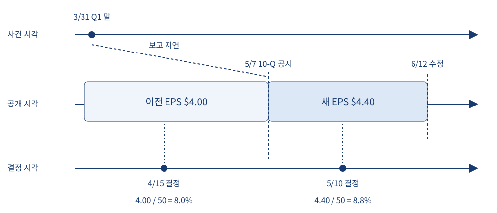
원본 판독값 · 공식 Primer 「Point-in-Time Data and Decision-Time Correctness」의 날짜·이전 EPS 4.00·새 EPS 4.40·주가 50·두 이익수익률을 보존한 재작도다. 4/15는 이전 공시값을, 5/10은 새 공시값을 쓴다. 옵션 호가 스냅샷과 보간 결과에도 같은 이용 가능 시각 규칙을 적용한다. 공식 Primer구현 · 옵션 특성의 정의와 저장 출력
03번 노트북의 옵션 예는 2019-01-02부터 2020-12-31까지 AAPL·MSFT·GOOGL·AMZN·JPM·BA·XOM·KO의 옵션 6,166,170행과 주식 일간 가격 6,056행을 사용합니다. 계산된 날짜별 특성은 ATM IV 4,013행, 리스크 리버설 대용치 3,962행, 기간구조 비율 3,815행입니다. 호가와 만기 조건을 만족하지 않으면 관측이 빠지므로 행 수가 서로 다릅니다.
ATM 예는 잔존 만기 25–35일, 행사가/현물 비율 0.98–1.02인 콜 가운데 ATM에 가장 가까운 것을 고릅니다. 완전한 고정 30일 보간과는 다릅니다. 리스크 리버설 함수는 이름에 25d를 쓰지만 실제로는 델타 대신 풋 머니니스 0.93–0.97, 콜 1.03–1.07 구간의 IV 평균을 뺍니다. 따라서 이 출력은 엄밀한 25델타 RR의 대용치입니다. 기간구조도 8–30일 콜 평균 IV를 60–180일 콜 평균 IV로 나눕니다. 표면을 만드는 선택이 의미에 영향을 준다는 앞 설명이 코드에서 어떻게 나타나는지 볼 수 있습니다.
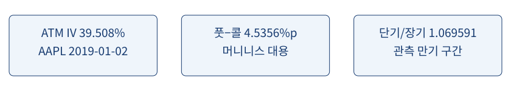
AIML Quant 도해 · 공식 노트북 셀 38·40·42의 저장 수치다. 퍼센트 수준, 퍼센트포인트 차이, 단위 없는 비율을 구분한다. 가운데 값은 머니니스 구간으로 만든 RR 대용치다.AAPL의 그날 풋 IV는 0.422786, 콜 IV는 0.377430이어서 차이는 0.045356입니다. 단기 IV 0.363597을 장기 IV 0.339940으로 나누면 약 1.069591입니다. ATM IV 0.395080과 서로 다른 조건의 계약을 모으므로 세 값의 구성 표본도 같다고 가정해서는 안 됩니다.
노트북의 vrp는 오늘 ATM IV에서 직전 20일 종가 수익률의 표준편차를 252거래일 기준으로 연율화한 RV를 뺍니다. 이름과 달리 미래 한 달의 실현 결과를 쓴 사후 프리미엄이 아닙니다. 두 기간도 달력 30일 만기 부근과 후행 20거래일이라는 근사 대응입니다. XOM의 2020-12-31 저장값은 IV 0.372880, 후행 RV 0.306121, 차이 0.066759로 약 +6.6759 변동성 포인트입니다. 12/15에는 0.385860−0.518365=−0.132505로 부호가 달랐습니다. 스프레드는 항상 양수라는 규칙이 아닙니다.
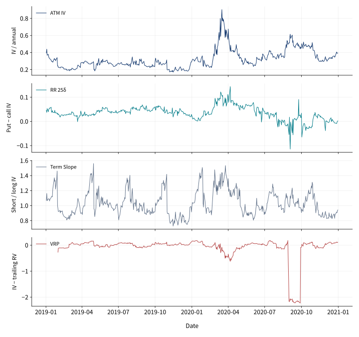
공식 노트북 저장 출력 · 03번 노트북 셀 47의 네 시리즈 각 505점을 전부 사용했다. 수준·차이·비율의 세로축 단위가 다르다. 2020년의 변동과 특성의 부호를 함께 보되 미래 손익이나 매도 전략의 비용 차감 성과로 읽지 않는다.더 넓은 구현에서는 sp500_equity_option_analytics가 S&P 500 구성종목의 ATM IV, RR, 여러 기간의 IV–RV와 횡단면 순위를 만듭니다. sp500_options는 계약 수준에서, 콜과 풋을 함께 보유하는 스트래들의 내재·실현 변동성으로 VRP 특성을 계산합니다. 이렇게 만든 입력을 다른 신호의 상태로 쓰려면 옵션이 만기되거나 사라진 과거 행까지 포함하고, 호가부터 변환 결과까지 가용 시각을 추적해야 합니다. 다음 절은 시장가격 밖에서 느리게 갱신되는 상태를 다룹니다.
8.4 맥락적·느리게 변하는 특성 — 시장 가격 밖의 세 계열
기업의 장부자본은 분기마다 바뀌고 주가는 매일 바뀝니다. 다음 실적 발표일까지 남은 시간은 발표 내용과 달리 미리 계산할 수 있습니다. 거시 지표도 매 거래일 새 조사 결과가 나오는 것은 아닙니다. 이렇게 시장가격 밖의 자료를 입력에 넣으려면, 느린 갱신과 빠른 거래 의사결정이 어떻게 만나는지 정해야 합니다.
이 절은 재무제표, 예정된 달력, 거시·정책 상태를 다룹니다. 세 계열은 대체로 월별·분기별 또는 정해진 일정으로 갱신되며, 빠른 가격 신호를 해석할 때 배경 조건을 제공합니다. 장기 신호로 직접 사용할 수도 있지만, 실제로는 통제 변수나 국면 지표로 함께 넣는 경우가 많습니다. us_firm_characteristics와 us_equities_panel 사례가 주요 시험대이고 달력 입력은 두 사례에 모두 적용됩니다.
펀더멘털과 기업 특성 — 느린 프리미엄과 반복 관측의 함정
펀더멘털은 기업의 이익·장부자본·부채·수익성처럼 사업과 재무 상태를 나타내는 정보입니다. 이런 값은 매일 새로 발표되지 않으므로 보통 며칠보다 몇 달·몇 분기에 걸쳐 나타나는 수익률 동인을 겨냥합니다. 동시에 단기 모멘텀이나 반전이 가치평가·수익성·재무 건전성에 따라 다르게 작동할 수 있다는 상태 가설을 세울 수도 있습니다.
핵심 위험은 시점 기준 오류입니다. 3월 말 재무제표를 5월에 발표했다면 4월의 투자자는 아직 그 값을 모릅니다. 나중에 재작성된 값을 과거 행에 덮어쓰는 경우에도 그때 없던 정보가 들어갑니다. 보고 지연, 수정 정책, 실제로 쓸 수 있게 된 시각을 계산 명세에 넣어야 합니다. 공시가 늦는 위험을 60일 지연으로 다루는 입력과 90일 지연으로 다루는 입력은 서로 다른 특성입니다. 고정 지연을 넣었다는 이유만으로 모든 종목의 실제 가용성이 확인되는 것도 아닙니다.
느린 값의 반복도 주의해야 합니다. 분기 장부자본 한 개를 약 63거래일의 일별 행에 붙이면 표에는 63개 숫자가 생기지만 공시는 한 번뿐입니다. 명목 표본 수는 행 개수이고, 실질적으로 얼마나 독립적인 정보가 있는지는 별개입니다. 반복된 행을 독립 관측처럼 평가하면 신뢰도가 과장될 수 있습니다. 7.2절의 유효 표본 크기와 고유성 가중은 이런 중복 의존성을 평가에 반영하는 방법입니다. 63배로 늘어난 행 수를 그대로 정보량 증가라고 읽지 않습니다.
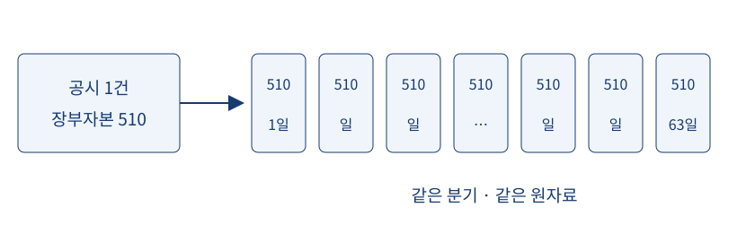
AIML Quant 도해 · 숫자가 같은 기간에는 같은 원자료를 공유한다. 일별 행은 거래를 정렬하는 데 필요하지만 독립 공시 63건을 뜻하지 않는다.대표 입력인 장부가–시장가 비율(B/M)은 장부자본을 현재 시가총액으로 나눕니다. 장부자본은 해당 시점까지 공개된 분기의 값이고, 시가총액은 주가와 발행주식 수로 계산한 시장 가치입니다. 분자는 공시 사이 고정돼도 분모가 매일 달라지면 B/M은 매일 달라질 수 있습니다. 같은 날 종목끼리 순위를 매기고 섹터·산업을 맞추면 기업 간 상대가치 입력으로 바꿀 수 있습니다.
결정 시점에 사용할 수 있던 장부자본으로 B/M을 계산합니다.
\[\mathrm{BM}^{\mathrm{PIT}}_{i,t}=\frac{\mathrm{BookEquity}_{i,\tau(i,t)}}{\mathrm{MarketCap}_{i,t}}\]
i는 기업, t는 의사결정 시각, PIT는 그 시점에 알려진 자료를 뜻합니다. τ(i,t)는 사용 가능한 최신 공시 버전입니다. 분자와 분모는 같은 통화·규모 단위의 기업 전체 금액이며 비율에는 단위가 없습니다.
이해용 장부자본 510, 시가총액 1,000이면 B/M=0.510입니다. 새 공시 없이 시가총액만 1,020이 되면 510/1,020=0.500입니다. 비율 변화가 새 재무정보를 뜻하는 것은 아닙니다.
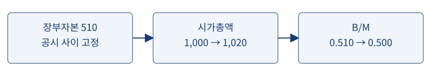
AIML Quant 도해 · 분기 분자와 일별 분모가 다른 빈도로 갱신된다. 변한 입력이 어느 쪽인지 확인해야 해석할 수 있다.기업 특성은 넓게 네 범주로 나뉩니다. 가치는 B/M이나 이익수익률로 시장가격 대비 회계상 크기를 봅니다. 수익성은 영업수익성·매출총이익률로 벌어들이는 능력을 봅니다. 투자는 자산 성장·자본적 지출로 사업에 자원을 늘리는 정도를 봅니다. 품질은 발생액·레버리지 등으로 이익과 재무구조를 살펴봅니다. 발생액은 회계이익과 현금흐름의 차이와 관련된 측정값이고, 레버리지는 부채를 통한 자금조달 정도입니다. 이 분류는 us_firm_characteristics 및 14장의 요인 문헌으로 이어집니다.
수 주에서 수년의 신호·상태로 이 자료를 쓰려면 갱신 주기, 횡단면 정규화, 섹터 중립화, 수정 정책을 함께 적습니다. 서프라이즈는 발표된 값과 당시의 기대를 비교한 차이입니다. 사후에 알게 된 예상치로 과거 서프라이즈를 만들면 안 됩니다. 수정된 펀더멘털을 과거에 넣는 선견, 반복값으로 표본 수를 늘려 읽는 오류, 낡은 값을 새 일별 관측으로 취급하는 문제가 이 계열의 대표적인 실패 조건입니다.
기간 말보다 가용 시각을 기준으로 연결한다
같은 재무 사실에도 여러 시계가 있습니다. 회계 분기 말은 사실이 설명하는 유효 시간입니다. 공시·벤더 수집·내부 적재를 거쳐 전략이 값을 사용할 수 있게 된 때는 가용 시간입니다. 실제 주문을 판단하는 때는 의사결정 시간입니다. 그 시각에 사용 가능한 버전을 골라야 과거 상황을 재현할 수 있습니다.
결정 시점 이전에 가용해진 버전 중 가장 최근 것을 선택합니다.
\[\tau(i,t)=\max\{j:\mathrm{known\_from}_{i,j}\le t\}\]
j는 공시·수정 버전이 가용 시간순으로 정렬된 인덱스입니다. known_from은 그 기업 버전을 전략이 사용할 수 있게 된 타임스탬프, t는 결정 시각입니다. 가용 시각 aj를 쓰면 조건은 aj≤t와 같습니다. 자료를 받는 지연까지 고려해 같은 시간대에서 비교합니다.
원 공시 510이 5/5, 수정 498이 8/12부터 가용하다면 6/1에는 510, 8/13에는 498을 고릅니다. 4/30에는 새 분기 원 공시도 아직 쓸 수 없으므로 이전 분기 값을 유지합니다.
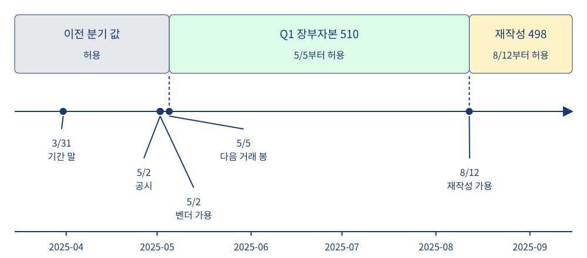
원본 판독값 · 공식 Primer 「Point-in-Time Feature Construction and Data Vintages」의 날짜·금액·구간·범례를 재작도했다. 공시와 벤더 가용이 같은 날짜여도 별개 사건으로 표시했다. 색은 이전 허용값, 원 공시 허용값, 수정 허용값을 구분한다. 5/5 이전 날짜에 새 분기 510을 붙이지 않는다. 공식 Primeras-of 조인은 각 결정 시각에서 그때까지 나온 가장 최근 자료를 붙이는 연결입니다. 이 경우 period_end나 단순 보고일보다 known_from을 기준으로 뒤쪽, 곧 과거 방향으로 찾습니다. 나중에 498로 수정됐더라도 원 공시 510의 행은 지우지 않습니다. 서로 다른 가용 시각을 가진 두 행으로 남겨야 6월의 입력과 8월의 입력을 구분할 수 있습니다.
이 연결을 감사할 때는 실제 행의 known_from <= decision_time을 확인합니다. 공시 사이 고정돼야 할 원자료가 매일 변하면 조인·보간 오류를 의심합니다. 다른 연구 컷오프로 같은 과거를 다시 만들 때 수정이 전혀 반영되지 않으면 최신 값만 저장하는 구조인지 확인합니다. 종목별 수치가 옳아도 오늘의 생존자만으로 과거 횡단면 순위를 만들면 과거 유니버스에 없던 선택이 끼어들 수 있습니다. 빈티지와 역사적 종목 집합은 함께 맞춰야 합니다.
공식 노트북의 재무 특성 예
04_fundamentals_macro_calendar는 20종목·240행의 SEC XBRL 재무자료로 가치·품질 비율을 계산합니다. XBRL은 재무 항목을 기계가 읽을 수 있도록 표지를 붙인 공시 자료입니다. 다만 예제의 시가총액은 실제 주가를 결합한 값이 아니라 장부자본의 두 배로 둔 설명용 대용치입니다. 따라서 B/M이 항상 0.5로 나오는 저장 출력은 가치 신호의 실제 횡단면 차이를 입증하지 않습니다. 실전에서는 당시 가격·주식 수와 조인해야 합니다.
가치 계산에는 B/M, 이익수익률, 현금흐름수익률, 자유현금흐름수익률이 있습니다. 마지막 값은 영업현금흐름에서 자본적 지출을 뺀 금액을 시가총액으로 나눕니다. 품질 계산에는 ROE(이익/장부자본), ROA(이익/총자산), 발생액/총자산, 부채/총자산이 있습니다. 예를 들어 XOM의 2024-09-30 저장 행에서 B/M은 0.5, 이익수익률은 0.016028, ROE는 0.032056, ROA는 0.018640, 발생액 비율은 0입니다. 2024-12-31 행의 이익수익률·ROE·ROA는 결측이며 0의 이익을 뜻하지 않습니다. 노트북은 일부 영업현금흐름 결측에서 발생액을 0으로 대체하므로 발생액 0도 회계상 정확히 0이라는 확인과 구분해야 합니다.
# daily: 종목·decision_time 순서, filings: 종목·known_from 순서로 정렬한 표
# 각 열의 타임스탬프를 같은 시간대로 맞춘 뒤 실행한다.
def attach_known_filing(daily, filings):
return daily.join_asof(
filings,
left_on="decision_time", right_on="known_from",
by="symbol", strategy="backward",
)
저장 출력은 2024년의 월–금 262일을 20종목에 붙여 5,240행을 만듭니다. 이 달력은 주말만 빼므로 거래소 휴일까지 제외한 실제 거래일 달력은 아닙니다. 고유한 종목·분기 관측은 81개여서 비율은 약 65배입니다. 여기서 81을 모든 평가의 정확한 유효 표본 수라고 단정하지는 않습니다. 반복으로 행 수가 얼마나 늘었는지 보여 주는 진단입니다. 실제 유효 표본은 기간·레이블 중첩·의존 구조를 함께 봐야 합니다.
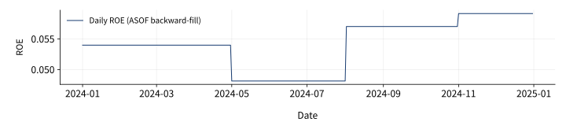
공식 노트북 저장 출력 · 04번 노트북 셀 15의 262점을 모두 재작도했다. 당일 값을 새로 측정한 곡선이 아니라 과거 방향 as-of 조인으로 유지한 값이다. 이 예의 보고 지연과 달력은 설명용이며 완성된 거래 시점 감사의 증거로 삼지 않는다.시간, 달력, 사건 인코딩
달력 특성은 내일 발표될 이익이 얼마인지 대신 발표까지 얼마나 남았는지를 표현합니다. 세션은 거래를 묶는 시간 구간이고, 경매·롤·펀딩 정산·실적·거시 발표도 예측 가능한 시계를 만듭니다. 이런 입력은 사건의 결과보다 시점상 위치와 근접성을 나타냅니다. 사건 전 입력에 사건 뒤 실제 움직임을 넣으면 미래 정보가 됩니다.
대표값은 사건까지의 시간입니다. 다음 예정 사건까지 남은 기간을 세되 너무 먼 날짜는 상한으로 묶을 수 있습니다. 여기에 사건 전·당일·이후 구간을 붙이면 숫자 카운트다운을 상태로 바꿉니다. 사건 뒤 영향이 서서히 줄어든다는 가설에는 경과 시간에 따른 감쇠 입력을 별도로 만듭니다. 사전 기대와 사후 정보 흡수는 다른 가설입니다.
계산에 쓰는 시계는 전략의 봉과 같아야 합니다. 시간대·세션 경계·휴일이 다르면 같은 날짜라도 사건까지의 거리가 달라집니다. 실적 발표는 해당 과거 시점에 확정돼 있던 예정일을 사용합니다. 나중에 확정된 날짜를 과거의 추정일 대신 넣으면 그 시점에 아직 몰랐던 일정 변경을 미리 알려 줄 수 있습니다.
한 주·한 해처럼 반복되는 시계에는 순환 인코딩을 씁니다. 월을 1부터 12까지 숫자 하나로 넣으면 12월과 1월이 멀어 보입니다. sin·cos 두 좌표로 원에 놓으면 연말과 연초가 이웃이 됩니다. 더 복잡한 주기를 표현하는 저차 푸리에 항은 이 원형 패턴을 여러 배수의 파동으로 확장합니다. 어떤 시계인지를 고르는 것은 가설의 뜻을 바꾸고, 조화항 수는 패턴의 세밀함과 잡음을 조절합니다.
반복되는 달력의 위치를 두 좌표로 표현합니다.
\[\begin{gathered}x_{\sin}=\sin(2\pi k/P)\\ x_{\cos}=\cos(2\pi k/P)\end{gathered}\]
k는 달력에서의 위치, P는 한 주기의 길이입니다. 월 예에서는 P=12, k=1부터 12입니다. 두 결과는 단위가 없고 −1부터 1 사이입니다. 둘을 함께 써야 원 위의 위치를 구분할 수 있습니다.
3월이면 sin(π/2)=1, cos(π/2)=0입니다. 12월은 (0,1), 1월은 약 (0.5,0.866)이라 원 위에서 가깝습니다. 요일을 5로 둘지 7로 둘지는 거래 주기와 생활 주기라는 다른 시계를 고르는 일입니다.
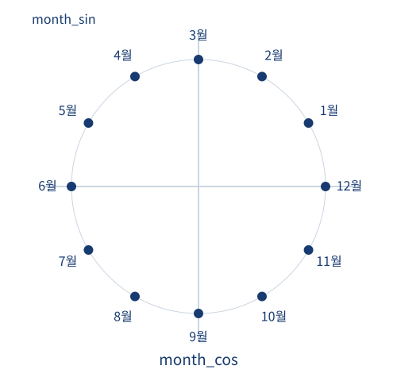
공식 노트북 저장 출력 · 04번 노트북 셀 39의 열두 좌표를 그대로 사용했다. 가로축은 month_cos, 세로축은 month_sin이다. 12월–1월의 인접성을 유지하지만 이 그림이 월별 수익률 패턴을 입증하지는 않는다.04번 노트북은 2015년 이후 SPY 일별 2,766행에 월과 요일의 sin·cos를 붙입니다. 요일은 월요일=1부터 금요일=5, 주기는 5로 둡니다. 시간 간격을 실제 7일로 표현한 값과는 다른 정의입니다. 달력 입력은 crypto_perps_funding의 8시간 정산, cme_futures의 롤 일정처럼 베이시스·거래량·유동성이 달라질 수 있는 시점에서도 중요합니다.
다음 사건까지의 거리를 상한 안에서 셉니다.
\[d_t=\min\{H,\max(0,T_{\mathrm{next}}-t)\}\]
t는 관측 날짜, Tnext는 다음 예정 사건 날짜, H는 상한입니다. 두 날짜 차이는 같은 달력 단위로 셉니다. 결과 단위도 그 달력의 일 또는 봉 수입니다.
이해용 다음 사건까지 80일, H=63이면 d=63이고, 3일 남았다면 d=3입니다. 거래일 3일과 달력일 3일은 휴일이 끼면 달라집니다.
노트북의 사건 예는 AAPL·MSFT·GOOGL의 분기 말에 45일을 더한 가상 실적 일정입니다. 실제 공시 시각을 수집한 결과가 아닙니다. 2023–2024년 월–금 날짜 522개에서 다음 사건을 앞으로 찾고, 날짜 차이를 최대 63으로 자릅니다. 코드 주석은 거래일 상한이라고 쓰지만 실제 연산은 달력일 차이입니다. 2일 이하, 5일 이하, 63일 상한 근처를 나누는 조건도 달력일 기준으로 읽어야 합니다. 저장 출력은 사건 전 구간을 나눌 뿐 사건 후 감쇠를 계산한 것은 아닙니다.
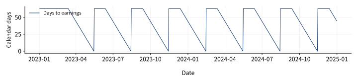
공식 노트북 저장 출력 · 04번 노트북 셀 46의 522점을 전부 재작도했다. 시가총액·보고 지연 예와 마찬가지로 구성법을 보여 주는 예이며 시점 기준 실제 실적 캘린더가 아니다. 실제 전략은 당시의 확정 일정과 거래소 달력을 써야 한다.거시·정책 상태
장기 금리가 단기 금리보다 낮은 날에도 주식 모멘텀을 평소처럼 읽어도 될까요? 거시·정책 입력은 이런 질문에서 상태 변수로 쓰입니다. 추세·캐리·상대가치 신호가 어떤 환경에서 작동하는지, 상관과 낙폭이 어떤 조건에서 달라지는지 살펴봅니다. 수일에서 수년의 상태를 나타내지만 정책 결정이나 지표 발표 때는 불연속적으로 바뀔 수 있습니다.
대표값은 수익률곡선 기울기입니다. 여기서 수익률은 투자 손익률이 아니라 국채의 금리입니다. 흔히 10년 금리에서 2년 금리를 빼 장단기 차이를 구합니다. 10년–3개월은 다른 구간을 측정하고, 주성분 표현은 여러 만기를 결합해 움직임을 요약합니다. 만기 선택은 서로 다른 경제적 질문을 고르는 일이므로 단순한 잡음 조절과 구분합니다.
장단기 금리 차이와 그 차이의 이례적인 정도를 계산합니다.
\[\begin{gathered}s_t=y_{10Y,t}-y_{2Y,t}\\ z_t=\frac{\widetilde{s}_t-\mu_{L,t}}{\sigma_{L,t}}\end{gathered}\]
y는 같은 기준의 국채 금리, s는 금리차, 물결 s는 평활화한 차이입니다. μL·σL은 그 차이의 최근 L관측 평균·표준편차입니다. 금리를 %로 적으면 s는 %포인트, z는 단위가 없습니다.
이해용 10년 4.0%, 2년 4.5%이면 s=−0.5%포인트입니다. 평활값도 −0.5, 최근 평균 0.5, 표준편차 0.5%포인트라면 z=−2로 최근 평균보다 두 표준편차 낮습니다.
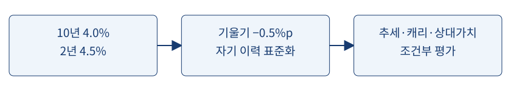
AIML Quant 도해 · 음의 금리차가 곧바로 특정 종목의 매도 신호가 되는 것은 아니다. 해당 상태에서 추세·캐리·상대가치의 관계가 어떻게 달라졌는지 따로 평가한다.수익률곡선의 곡률은 중기 금리가 단기·장기 금리와 다르게 움직이는 정도로, 8.3절에서 만기별 선물 가격을 수준·기울기·곡률로 나눈 구분을 국채 금리에 적용한 값입니다. 양끝 금리는 비슷한데 중기 금리만 오르면 기울기 하나로 드러나지 않는 곡선 모양의 변화가 생깁니다.
정책금리 요약은 중앙은행이 정한 정책금리의 현재 수준이나 최근 인상·인하 폭을 입력으로 만든 값입니다. 시장에서 관측한 장단기 국채 금리차와 구분해 정책 환경을 나타내며, 변경 내용을 실제로 발표해 알 수 있게 된 시각부터 사용합니다.
평활화 기간은 일별 흔들림을 얼마나 줄일지, 표준화 기간은 어느 최근 이력을 정상 기준으로 볼지 정합니다. 입력을 수준으로 쓸지 변화·z-점수·순위로 쓸지도 명시합니다. 선택에 따라 경제적 해석과 추정 안정성이 달라지므로 계산 뒤 이름만 같게 붙이지 않습니다.
그 밖에 기업채와 기준 금리의 차이인 신용 스프레드, 자금조달 압력을 나타내는 TED 스프레드나 교차통화 베이시스, 옵션시장의 변동성 지수인 VIX의 수준·백분위가 상태 입력이 됩니다. TED는 달러 은행 간 금리와 단기 국채 금리의 차이를 이용한 전통적 예입니다. 과거 지표를 재현할 때는 그 시기에 제공된 정의와 빈티지를 사용합니다. 나우캐스트는 아직 발표되지 않은 현재 경제 상태를 다른 관측으로 추정한 값입니다. 이미 확정된 실제값과 구분해야 합니다.
거시 서프라이즈는 발표 실제값에서 당시 컨센서스, 곧 시장 예상의 대용치를 뺍니다. 실제값이 3.2%, 당시 예상이 3.0%면 +0.2%포인트입니다. 예상치 자체도 모델링 선택이며 벤더·시점마다 달라질 수 있습니다. 같은 지표라도 기대 자료가 바뀌면 서프라이즈의 뜻이 바뀝니다. 글로벌·로컬 패널 선택, 발표 시각, 수정 정책, 발표 사이 값을 유지하거나 감쇠하는 방식도 명세에 남깁니다.
수정된 거시 자료를 과거에 넣지 않으려면 ALFRED 같은 당시 버전을 조회할 수 있는 빈티지 자료가 필요합니다. 오래된 월별 값을 매일 새 관측으로 보거나 발표 시각을 하루 앞당기는 오류, 불안정한 예상 대용치도 실패 원인입니다. 빠른 가격 신호를 조건화하더라도 느린 자료의 가용성 제약은 사라지지 않습니다.
공식 노트북의 거시 상태 예
04번 노트북의 저장 거시 입력은 9,497행입니다. 연방기금금리와 여러 만기 국채 금리·10년–2년 스프레드 등을 읽습니다. 일별 21·63관측 z-점수와 변화율 등을 더한 단계에서 38열을 만듭니다. 월별 자료용 함수는 30행 지연 뒤 최대 45행을 앞으로 채우고 252·63행 변화율을 구하지만, 단순 행 지연이 실제 발표 시각·빈티지 정합성을 대신해 주지는 않습니다. 예제 함수의 기능과 완성된 시점 감사는 다릅니다.
곡선 예는 t10y2y에 5일 지수이동평균을 적용하고, 이 평활값을 최근 250관측 평균·표준편차로 표준화합니다. 아래 그림의 위 패널은 원 금리차와 평활값, 아래 패널은 z-점수입니다. 같은 변수가 어떤 수준에 있는지와 그 수준이 최근 기준에서 얼마나 드문지 구분해 읽습니다.
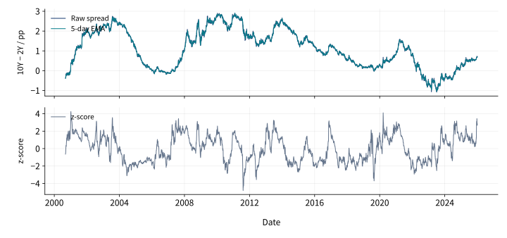
공식 노트북 저장 출력 · 04번 노트북 셀 31의 세 시리즈 각 9,246점을 전부 사용했다. 금리차 단위는 %포인트이고 아래 z-점수에는 단위가 없다. 곡선 역전의 역사와 표준화 효과를 보여 주는 구성 예이며 거래 전략 성과가 아니다.VIX 예제는 15 미만을 0, 15 이상 25 미만을 1, 25 이상을 2로 구분합니다. 최근 252관측 최댓값으로 현재 VIX를 나눈 값도 만듭니다. 이 비율은 백분위 순위가 아닙니다. 저장 마지막 다섯 행의 국면은 모두 0이고 최댓값 대비 비율은 0.402129·0.402129·0.464508·0.503691·0.564790입니다. VIX가 자체 최근 최고보다 어느 정도인지 읽는 값이지 앞으로 위험이 그 비율만큼 발생한다는 확률이 아닙니다. 코드가 만드는 롤링 중앙값 역시 백분위가 아니라 중앙값입니다. 명칭과 산술을 맞춰야 모델의 입력을 제대로 해석할 수 있습니다.
재무·달력·거시 입력의 공통점은 갱신 빈도가 낮다는 사실보다 그때 알 수 있던 상태를 재현해야 한다는 점입니다. 분기 말·예정 사건일·지표 기준월만으로 행을 붙이지 않고 가용 시각과 당시 버전을 함께 사용해야, 앞서 만든 가격·관계 신호가 어떤 조건에서 작동했는지 평가할 수 있습니다.
8.5 여러 계열에 걸친 특성 유형과 직접 집계의 한계
가격의 추세, 상품 사이의 가격 관계, 기업의 실적처럼 앞 절에서 나눈 계열만으로 모든 입력을 분류하기는 어렵습니다. 여러 자료를 압축해 얻은 값이나 투자자의 포지션을 추정한 값은 여러 계열에 걸쳐 쓰입니다. 계산 결과가 숫자 하나라는 점은 같아도, 그 숫자가 만들어진 과정과 실제로 알 수 있었던 시점을 따져야 합니다.
먼저 비슷하게 움직이는 수십 개 입력을 몇 개의 축으로 요약한다고 해 봅시다. 주성분은 입력들이 함께 변하는 방향을 찾아 그 방향의 점수로 자료를 나타냅니다. 시장 전체가 함께 움직이는 부분과 그 밖의 움직임을 소수의 숫자로 압축할 수 있습니다. 오토인코더는 입력을 좁은 중간 표현으로 압축한 뒤 원래 입력을 복원하도록 학습하는 신경망입니다. 중간층의 숫자를 특성으로 쓰면 단순한 직선 관계보다 복잡한 공동 움직임을 담을 수 있습니다. 어느 쪽도 압축했다는 이유만으로 미래 수익률을 잘 예측하지는 않습니다.
TimesFM·Chronos·Moirai 같은 시계열 파운데이션 모델은 많은 시계열로 미리 학습한 모델입니다. 관측 창을 이 모델에 넣어 얻은 벡터, 즉 여러 숫자로 된 표현도 후속 모델의 입력이 될 수 있습니다. 이렇게 직접 관측한 값에서 학습을 거쳐 얻는 특성을 학습된 표현이라고 합니다. 입력 사이에 숨어 있는 공동 요인을 담지만, 그 요인이 반드시 해석 가능한 경제적 원인 하나와 일치하는 것은 아닙니다.
이 표현에는 학습 때 정해진 매개변수가 들어 있습니다. 검증 기간까지 함께 사용해 주성분의 축이나 오토인코더를 학습하면, 검증 기간의 분포를 미리 본 셈입니다. 따라서 각 워크포워드 폴드, 곧 과거로 학습하고 그다음 기간으로 평가하는 분할마다 허용된 학습 자료로 적합합니다. 검증 자료에는 고정한 변환을 적용합니다. 매개변수의 버전과 학습 창을 후속 예측 실험의 기록에 함께 남겨야 같은 특성을 다시 만들 수 있습니다. 모델 기반 추출 방법은 9장, 파운데이션 모델 표현의 바탕인 트랜스포머 구조는 13장에서 이어집니다.
두 번째는 다른 투자자들이 어느 쪽에 얼마나 몰려 있는지를 나타내는 자료입니다. 자금 흐름은 자금이 들어오고 나가는 움직임이고, 포지셔닝은 참가자들이 보유한 매수·매도 노출의 구성입니다. 예를 들어 Commitment of Traders 보고서는 참가자 집단별 선물 포지션을 알려 줍니다. 특정 방향의 포지션이 많이 쌓였다면 같은 추세 신호도 청산 압력에 더 민감할 수 있습니다. 이런 자료는 보통 매수 방향을 혼자 정하기보다 추세·캐리·평균 회귀가 작동할 환경을 나타내는 상태로 씁니다.
관측한 보고서가 모든 참가자의 실제 제약을 그대로 보여 주지는 않습니다. 보고 대상과 분류 기준이 바뀌거나 자료 제공자가 바뀌면, 같은 이름의 수치가 다른 대상을 세기 시작할 수 있습니다. 어느 시점에 공개됐는지, 어떤 참가자와 상품을 기준 집합으로 삼는지, 정의가 바뀌면 어떻게 실패할지를 명세에 적습니다. 다른 특성에 곁들이는 참고 자료라고 해서 검정과 기록을 생략할 수는 없습니다.
암호자산에서는 블록체인에 남은 기록으로 자금 흐름의 일부를 직접 관찰할 수 있습니다. 거래소로 분류한 주소에 코인이 들어가거나 나가는 양은 거래소 보유량의 흐름을 보여 줍니다. 큰 잔고를 가진 지갑의 이동은 대규모 보유자의 움직임을 살펴보는 대용치입니다. 스테이블코인 공급 변화는 그 생태계에서 사용할 수 있는 결제·담보 수단의 규모와 관계가 있습니다. 프로토콜에 예치된 자산 가치인 TVL과, 거래에 쓰는 자산 묶음인 유동성 풀의 구성도 같은 계열의 자료입니다. 각 수치가 의미하는 범위는 서로 다르므로 하나를 모두의 대리 변수로 삼지는 않습니다.
기록이 공개됐어도 주소의 소유자는 나중에야 알려질 수 있습니다. 오늘 거래소 주소라고 새로 판별한 지갑을 과거에도 알고 있었던 것처럼 분류하면 과거 특성이 달라집니다. 프로토콜이 갈라지는 포크가 일어나면 집계 대상도 바뀔 수 있습니다. 잔고가 얼마 이상이면 '고래'라고 부를지도 연구자가 정한 기준입니다. 그래서 주소 분류표와 고래의 정의, 집계 규칙을 특성 값과 함께 버전으로 남깁니다. 4장의 수집 인프라 위에서 작동하는 포지셔닝 특성이며, 단순한 원장 조회만으로 시점 문제가 해결되지는 않습니다.
특성을 얼마나 많이 만들었는지와 예측이 투자에 얼마나 보탬이 되는지도 구분해야 합니다. 공식 case_study_feature_summary의 아홉 사례는 특성 수가 39개부터 66개까지입니다. 자산군에 맞게 서로 다른 계열을 쓰며, 과거 수익률 창만 모든 사례에 공통으로 들어갑니다. 가령 옵션 자료가 풍부한 사례와 초단기 거래 자료를 쓰는 사례가 같은 입력 목록을 가질 이유는 없습니다.
다음 그림은 사례별 종목 수와 표본 안에서 가장 좋았던 |IC|를 비교합니다. IC는 특성 또는 예측 점수와 이후 결과의 순서가 얼마나 함께 움직이는지를 나타내는 상관이고, 절댓값은 그 관계의 크기입니다. 표본 안에서 최고를 고른 값이므로 새 자료에서도 같은 값이 나온다고 볼 수는 없습니다. 그래도 작은 IC를 더 많은 독립적인 기회에 적용하는 경우와 좁은 대상에만 적용하는 경우의 차이를 생각하게 합니다.
원서의 폭 비교는 종목 수를 폭의 대용치로 삼아 정보 비율의 도식적 추정치를 계산합니다.
\[IR_{\mathrm{도식}}=IC\sqrt{N}\]
여기서 IC는 예측 순위와 결과 순위 사이의 상관, N은 종목 수입니다. IR은 기준 수익률을 넘는 초과수익의 평균을 그 변동성으로 나눈 정보 비율이며 단위가 없습니다. 이 근사에서 쓰는 N도 단위 없는 개수입니다. 실제 기본 법칙의 폭은 서로 독립적인 투자 기회의 유효 개수이므로, 서로 강하게 연동되는 종목을 하나씩 세는 N과 같지 않습니다.
공식 저장 표에서 미국 기업 특성 사례의 IC는 약 0.0803, 종목 수는 2,483입니다. 0.0803 × √2,483 ≈ 4.00으로 읽습니다. ETF 사례는 IC가 약 0.0917로 더 높아도 99종목이므로 0.0917 × √99 ≈ 0.91입니다. 그림의 거품 면적은 이 도식적 IR에 비례시켰습니다. 종목 사이의 의존성, 거래비용, 포지션 제약을 반영하지 않은 비교이므로 4.00을 달성 가능한 실현 IR로 해석하지 않습니다.
이 사례 비교에서 저자들이 강조하는 결론은, 얇은 예측 신호를 투자에 쓸 만한 신호로 만드는 차이가 IC의 작은 상승보다 적용할 수 있는 폭에서 나온다는 점입니다.
직접 집계만으로 충분하지 않을 때
앞 절의 후행 수익률이나 이동평균은 관측한 창을 정해진 공식으로 요약합니다. 같은 관측값과 계산 조건을 주면 같은 결과가 나오는 결정론적 변환입니다. 원자료에 드러난 추세 방향, 기준 가격에서의 거리, 다른 종목과의 순위, 고가와 저가 사이의 범위를 읽을 때 유용합니다. 하지만 같은 요약값 아래에 서로 다른 구조가 숨어 있을 수 있습니다.
예를 들어 두 시장의 최근 변동성이 모두 20%라고 합시다. 한 시장은 충격이 빠르게 사라지고 다른 시장은 높은 변동성이 오래 남을 수 있습니다. 롤링 표준편차는 현재 흔들림의 수준을 보여 주지만 충격의 감쇠 속도를 따로 추정하지는 않습니다. 조건부 동학은 과거 상태에 따라 다음 움직임이 어떻게 달라지는지의 구조입니다. GARCH처럼 과거 충격과 변동성을 이용하는 모형을 적합하면 변동성의 지속성을 추정할 수 있습니다.
또 시장이 추세를 이어 가는 국면인지 평균으로 되돌아가는 국면인지 직접 알려 주는 관측 열은 없습니다. 이런 잠재 상태는 관측 뒤에 숨어 있는 상태입니다. HMM, 즉 은닉 마르코프 모형이나 마르코프 전환 모형은 관측의 패턴과 상태 전이 구조를 이용해 각 상태일 확률을 추론합니다. 확률이 높다는 것은 추정 결과이며, 참된 국면을 오류 없이 관측했다는 뜻은 아닙니다.
거래량이 매주 비슷한 순서로 변하는지 보려면 전체 평균만으로는 부족합니다. 빠른 변동과 느린 변동을 주파수별로 나누는 스펙트럼 분해를 하면 특정 주기에 힘이 모이는지 볼 수 있습니다. FFT는 이 분해를 효율적으로 계산하는 방법입니다. 우연한 출렁임에도 봉우리가 생길 수 있으므로, 주간 패턴이 있다고 부르기 전에 여러 창에서 반복되는지 살펴봅니다.
마지막으로 20일 수익률이 둘 다 5%인 경로를 생각해 봅시다. 하나는 조금씩 올라갔고, 다른 하나는 크게 내렸다가 회복했습니다. 시작과 끝만 요약하면 같지만 중간의 위험과 관측 순서는 다릅니다. 경로 기하는 이렇게 이동 경로의 모양과 순서에 관한 정보입니다. 경로 시그니처 같은 순차 인코딩은 여러 관측이 어떤 순서로 이어졌는지를 수치로 나타냅니다. 같은 최종 수익률에서 다른 다음 결과가 나타날 수 있다는 가설을 표현하려는 방법입니다.
이때 특성은 원자료만의 함수가 아니라 적합된 객체에도 의존합니다. 어느 자료 구간으로 추정했는지에 따라 GARCH 매개변수와 상태 확률이 달라집니다. 9장에서 계산법이 복잡해져도 원칙은 같습니다. 결정 시점까지 허용된 자료로 변환을 정하고, 그 버전과 추정 창을 보존한 뒤 다음 자료에서 평가합니다.
8.6 특성 결합과 탐색 통제 — 신호 × 상태가 개선을 만들고 탐색을 불립니다
최근 많이 오른 종목을 사는 모멘텀 신호가 있다고 해 봅시다. 시장이 조용할 때와 급격히 흔들릴 때 이 신호가 같은 관계를 보이는지는 별도 질문입니다. 매수·매도의 방향을 제안하는 입력이 신호이고, 그 관계가 작동할 환경을 설명하는 입력이 상태입니다. 모멘텀·캐리·평균 회귀는 방향을 제안할 수 있습니다. 변동성 국면, 거래하기 쉬운 정도인 유동성, 시장 전체에서 얼마나 많은 종목이 함께 움직이는지를 나타내는 시장 폭은 상태가 될 수 있습니다.
저자들은 개별 지표를 더 복잡하게 만드는 것보다 신호와 상태를 결합하는 곳에서 실질적인 개선이 많이 나온다고 설명합니다. 그렇다고 상태를 하나 더 붙일 때마다 개선이 보장되지는 않습니다. 무엇을 결합했는지에 따라 거래하는 날짜, 거래 크기, 검정하는 가설이 서로 달라집니다.
| 템플릿 | 하는 일 | 예 | 전략에 미치는 효과 |
|---|---|---|---|
| 게이팅 | 유리한 상태에서만 거래하고 나머지에서는 포지션을 비운다. | 변동성이 67번째 백분위보다 낮을 때만 모멘텀을 거래한다. | 활성 표본을 바꾸므로 회전율과 수용 가능한 거래 규모도 달라진다. |
| 스케일링 | 상태에 따라 신호 강도를 연속적으로 조정한다. | 모멘텀을 실현 변동성으로 나눈다. | 상태에 따라 포지션 크기를 바꾼다. |
| 조건부 변형 | 특정 국면의 신호를 별도 버전의 특성으로 기록한다. | 저변동성 모멘텀과 고변동성 모멘텀을 각각 후보로 둔다. | 상호작용마다 따로 검정할 가설을 만든다. |
원서 표 8.4의 세 템플릿을 같은 항목으로 재구성했다.
게이팅은 문을 여닫듯 거래 여부를 결정합니다. 예를 들어 변동성의 과거 분포에서 현재 값이 상위 삼분위이면 모멘텀 포지션을 비웁니다. 백분위는 과거 관측을 작은 값부터 늘어놓았을 때의 상대적 위치이고, 삼분위는 그 분포를 세 구간으로 나눈 것입니다. 거래 날짜를 줄이면 신호의 평균 관계뿐 아니라 거래 횟수와 시장이 감당할 수 있는 주문 규모도 달라질 수 있습니다.
스케일링은 거래를 켜거나 끄는 대신 크기를 조정합니다. 같은 모멘텀이라도 변동성이 두 배라면 변동성으로 나눈 점수는 절반입니다. 위험이 큰 환경에서 노출을 줄이려는 표현입니다. 조건부 변형은 저변동성일 때의 모멘텀과 고변동성일 때의 모멘텀을 별개의 입력으로 만듭니다. 두 조건이 서로 다른 예측 관계를 가진다는 가설을 각각 평가할 수 있지만, 후보 수도 함께 늘어납니다.
출발은 신호 하나와 상태 하나로 좁힙니다. 그 둘을 고정한 채 템플릿 하나씩 바꾸고 각 조합을 7.3절의 시행, 곧 시험한 선택 하나로 기록합니다. 조합의 성과만 남기면 얼마나 많은 후보 중에서 고른 결과인지 알 수 없습니다.
시험할 조합에는 경제적 이유가 있어야 합니다. 변동성이 추세를 유지하기 쉬운 환경과 관련될 수 있고, 유동성은 신호를 거래할 때 내야 하는 비용과 관련될 수 있습니다. 상태를 넣었을 때 IC가 모든 구간에서 똑같이 몇 배가 되는 정도라면 새로운 조건부 관계의 증거는 약합니다. 낮은 상태와 높은 상태에서 관계의 크기나 방향이 의미 있게 달라지는 조합을 우선합니다. 마지막으로 상태를 결정 시점에 관찰할 수 있어야 합니다. 장중 주문에 장 마감 뒤 확정되는 상태를 붙이거나, 나중에 수정된 값을 쓰는 정의는 실거래에서 재현할 수 없습니다.
상호작용 진단
조합을 골랐다면 특정 기간에서 좋았는지보다 관계가 어떻게 반복되는지 살펴봅니다. 각 워크포워드 폴드 안에서 진단한 뒤 폴드들의 중앙값과 가장 나쁜 폴드를 함께 봅니다. 중앙값은 전형적인 결과를, 최악 폴드는 평균에 가려진 실패를 드러냅니다.
먼저 구조를 봅니다. 상태가 낮음·중간·높음으로 바뀔 때 조건부 IC가 순서 있게 증가하거나 감소한다면 해석할 패턴이 있습니다. 한 구간만 갑자기 좋고 이웃 구간이 전혀 다르면 우연한 과적합이나 경계 설정의 불안정을 의심합니다. 구간 수와 경계도 시험한 선택에 포함됩니다.
다음은 폴드 안정성입니다. 전체 기간의 저변동성 IC가 양수여도 폴드마다 양수와 음수를 반복한다면, 저변동성에서 같은 신호를 쓰자는 주장이 안정적이지 않습니다. 마지막은 실시간 강건성입니다. 상태 추정값에 잡음이 있거나 발표가 늦거나 이후 수정되면 백테스트의 분류와 실전의 분류가 다를 수 있습니다. 특히 경계 하나로 거래를 전부 켜고 끄는 경성 게이트는 작은 측정 차이가 큰 포지션 차이로 이어집니다.
흔한 상호작용 패턴
가장 간단한 결합은 신호를 양수인 상태 값으로 나누는 비율입니다. 분모가 커질수록 같은 신호의 점수가 작아집니다. 무엇으로 나누는지에 따라 위험을 조정하는지 비용을 조정하는지가 달라집니다.
| 비율 특성 | 공식 | 해석 |
|---|---|---|
| 위험 조정 모멘텀 | momentum / volatility | 위험 스케일링 |
| 캐리 대 변동성 | carry / implied_vol | 위험 조정 캐리 |
| 모멘텀 대 스프레드 | momentum / bid-ask spread | 비용 조정 신호 |
원서 표 8.5의 비율·해석을 보존했다.
이해를 위한 계산으로 모멘텀 6%를 연율화 실현 변동성 20%로 나누면 0.06 / 0.20 = 0.30입니다. 연율화 캐리 4%를 연율화 내재 변동성 20%로 나누면 0.20입니다. 내재 변동성은 옵션 가격에 반영된 변동성 척도입니다. 모멘텀 6%를 가격 대비 매수·매도 호가 차이 0.1%로 나누면 60입니다. 마지막 계산에서 스프레드를 가격 단위로 그대로 넣으면 척도가 달라지므로, 같은 상대 가격 단위로 맞춘다는 전제가 필요합니다. 이 점수들은 그 자체로 샤프 비율이나 비용 차감 수익률은 아닙니다.
분모는 결정 시점에 의미 있게 추정한 엄격한 양수여야 합니다. 변동성이 0에 가까우면 비율이 폭증하므로 하한을 정해 제한합니다. 예를 들어 변동성 하한을 1%로 정했다면 0.1% 관측도 분모 1%로 계산합니다. 분모가 아예 정의되지 않으면 0 또는 결측값으로 처리하는 규칙을 미리 정합니다. 어느 쪽을 택했는지도 특성의 버전에 포함됩니다.
비율을 만드는 것과 상태가 예측 관계를 바꾸는지 확인하는 것은 별개입니다. 상태를 삼분위 같은 구간으로 나눈 뒤 각 구간에서 신호와 미래 결과의 IC를 계산합니다. 구간별 IC를 비교하면 관계가 상태에 의존하는지, 어떤 방향으로 바뀌는지 볼 수 있습니다.
작업 예 — 모멘텀 × 변동성 국면 삼분위
ETF 사례는 126일 모멘텀을 신호로, SPY의 42일 실현 변동성을 시장 전체의 상태로 사용합니다. SPY는 미국 대형주 시장을 추종하는 ETF입니다. 각 ETF의 자체 변동성으로 종목을 셋으로 나누는 예가 아닙니다. 같은 날짜에는 모든 ETF에 같은 시장 국면을 붙이고, 그날 ETF들의 모멘텀 순서가 20일 뒤 수익률의 순서와 맞는지 평가합니다.
각 의사결정 날짜를 t라고 쓰면 모멘텀과 상태는 t까지의 자료로 계산하고, 정답은 t 뒤의 수익률로 확인합니다.
\[\begin{gathered}m_{i,t}=P_{i,t}/P_{i,t-126}-1\\y_{i,t}=P_{i,t+20}/P_{i,t}-1\end{gathered}\]
i는 ETF, t는 의사결정 날짜, P는 같은 조정 기준의 종가입니다. m은 지난 126거래일 모멘텀, y는 이후 20거래일 수익률이며 둘 다 단위 없는 소수입니다. 각 t에서 m의 횡단면 순위를 만들고 y와 순위상관 IC를 구합니다. SPY의 지난 42일 수익률로 계산한 실현 변동성은 t의 상태를 정합니다.
예를 들어 126일 전 종가가 100이고 오늘 110이면 m은 0.10입니다. 20일 뒤 종가가 112라면 y는 112 / 110 − 1 ≈ 0.0182입니다. 오늘의 입력은 10%, 나중에 확인한 정답은 약 1.82%이며, 20일 뒤 가격을 오늘의 상태 분류에 쓰지 않습니다.
상태의 경계도 그날까지 쌓인 변동성 자료에서 정합니다. 확장 창은 시간이 지날 때 과거 관측을 버리지 않고 새 관측을 더하는 창입니다. 그 창의 33번째 백분위보다 낮으면 저변동성, 33번째부터 67번째까지면 중간, 67번째를 넘으면 고변동성으로 배정합니다. 전체 기간을 다 본 뒤 계산한 고정 경계를 과거에 적용하면 미래의 분포를 미리 알게 됩니다.
날짜 하나의 IC 계산은 아래처럼 읽을 수 있습니다. 두 배열에는 같은 순서로 정렬한 ETF들의 당일 모멘텀과 20일 선행 수익률을 넣습니다. 날짜마다 계산한 IC를 그 날짜의 국면에 따라 모아 평균과 HAC 표준오차를 구합니다. 결측과 무한값을 제외하고 충분한 종목이 남은 날짜만 평가하는 조건은 공식 코드에서 따로 적용합니다.
from scipy.stats import spearmanr
def daily_cross_section_ic(momentum, forward_return):
return spearmanr(momentum, forward_return).statistic공식 06 노트북 cell 24의 날짜별 계산을 읽기 위한 최소 발췌 형태. 아래 수치는 공식 저장 출력과 교재 표다.
| 변동성 삼분위 | 모멘텀 IC | HAC t-통계량 | p-값 |
|---|---|---|---|
| 낮음 | +0.071 | 2.8 | 0.006 |
| 중간 | +0.025 | 1.3 | 0.21 |
| 높음 | −0.034 | −1.1 | 0.26 |
교재 인쇄값. 전체 표본의 국면별 관계이며 HAC로 계열 상관을 조정한 결과로 제시됐다.
표의 핵심은 낮음에서 높음으로 갈수록 IC가 +0.071 → +0.025 → −0.034로 순서 있게 줄어든다는 점입니다. 저변동성과 고변동성의 차이는 0.071 − (−0.034) = 0.105, 즉 상관 척도에서 10.5%p입니다. 수익률이 10.5%p 늘었다는 뜻은 아닙니다. 이 패턴은 최상위 변동성 삼분위에서는 모멘텀을 쓰지 않는 게이트를 시험할 동기가 됩니다. 고변동성의 음수 IC가 유의하지 않으므로 곧바로 신호 방향을 뒤집으라는 근거는 아닙니다.
HAC는 시점마다 분산이 다를 수 있고 관측끼리 시간상 연관될 수 있음을 반영하는 표준오차 조정입니다. 20일 수익률을 매일 계산하면 이웃 날짜들의 정답 기간이 많이 겹칩니다. 이를 독립 관측처럼 세면 확실성을 과장할 수 있습니다. t-통계량은 추정한 평균 관계가 표준오차의 몇 배인지를, p-값은 관계가 없다는 가정 아래 이만큼 극단적인 통계량을 볼 확률을 나타냅니다. p-값은 이 전략이 실패할 확률이 아닙니다.
공식 06_robustness_sensitivity의 현재 저장 출력은 2015-01-02부터 2023-12-29까지의 ETF 자료 100종목을 사용합니다. cell 25의 IC는 +0.0708·+0.0253·−0.0344로 표의 방향과 크기가 비슷하지만, HAC t는 2.06·0.98·−0.78이고 p는 0.0395·0.3258·0.4359입니다. 따라서 교재의 유의성 수치를 현재 저장 출력에서 그대로 확인했다고 할 수는 없습니다. 이 출력은 2024년 이후 보류 기간을 제외한 개발 기간의 진단이며, 완성된 매매 규칙의 표본 외 성과가 아닙니다.
같은 노트북의 별도 cell 29는 SPY 한 종목의 63일 모멘텀으로 5일 뒤 수익률을 봅니다. 원시 신호·게이팅·스케일링의 시계열 IC는 각각 −0.0804·−0.0516·−0.0877입니다. 국면별 원시 IC도 −0.0379·−0.0574·−0.1496입니다. 이 결과는 ETF 횡단면 126일/20일 분석과 대상·기간이 다르므로 표 8.6과 같은 실험처럼 비교하지 않습니다. 게이트가 약한 관계를 일부 바꿨다는 관찰과 실전 수익 개선은 다른 결론입니다. 여기까지의 분석에는 주문 지연, 보유 기간별 중첩 포지션의 노출 조정, 거래비용을 적용한 포트폴리오 수익이 들어 있지 않습니다.
룩백을 바꾼 cell 12의 저장 탐색도 불안정을 보여 줍니다. 5·10·21·42·63·126·189·252일 모멘텀을 비교했을 때 IC는 각각 −0.0097·−0.0139·−0.0245·−0.0272·−0.0195·+0.0136·+0.0241·+0.0011입니다. IC 평균을 그 시계열 표준편차로 나눈 ICIR에서 최선은 189일의 약 0.08이고, 최선의 90% 이상인 후보도 189일 하나뿐입니다. 시험한 여덟 창 중 12% 정도만 최선 근처여서, 넓은 구간에서 성능이 유지된다고 보기 어렵습니다.
같은 저장 분석에서 여덟 후보의 탐색 효과를 반영한 RAS 보정은 보정 전 최고 IC 0.0260을 하한 0.0021로 낮춥니다. RAS는 무작위 부호를 이용한 복잡도 추정으로 후보를 많이 시험한 이득을 할인하는 보정입니다. 63일 모멘텀의 구현 비교에서도 한 달을 건너뛰는 방식, 위험 조정, 5일 지수평활, 단순 수익률, 로그 수익률의 IC는 각각 −0.0072·−0.0152·−0.0189·−0.0195·−0.0195입니다. 구현들 사이의 ICIR 차이가 약 0.04로 작다는 것과 신호가 유용하다는 것은 별개입니다. 이 저장 출력들은 매개변수와 상호작용을 많이 탐색했을 때의 진단 근거입니다.
선수지식 · 국면별 차이는 인과관계와 다르다
낮은 변동성에서 IC가 좋다는 관찰만으로 모멘텀이 수익률을 일으킨다고 결론내릴 수는 없습니다. 제3의 변수를 조건으로 붙이는 일이 무엇을 바꾸는지부터 구분해야 합니다. 다음 도식의 X는 신호, Y는 결과이고, 화살표는 가정한 원인의 방향입니다.
교란에서는 제3의 변수 C가 X와 Y에 함께 영향을 줍니다.
\[X\leftarrow C\rightarrow Y\]
C는 공통 원인인 교란변수이며, X·Y·C는 변수 이름이라 고정된 단위가 없습니다. C가 변동성 국면이면 같은 국면 안에서 비교하는 층화가 공통 원인에 의한 연관을 줄일 수 있습니다.
이해용 예에서 평온 국면은 높은 신호와 좋은 다음 수익률을 모두 자주 만들 수 있습니다. 평온·스트레스를 나눠 비교하면 국면의 구성이 달라 생긴 전체 평균 차이를 확인할 수 있습니다.
매개에서는 X의 영향이 중간 변수 M을 거쳐 Y로 갑니다.
\[X\rightarrow M\rightarrow Y\]
M은 중간 경로인 매개변수입니다. X·M·Y의 단위는 무엇을 측정하는지에 달려 있습니다.
모멘텀 X가 유동성 M을 거쳐 수익률 Y와 연결된다는 가설이라면 유동성을 고정해 비교할 때 그 경로를 막습니다. 전체 경로를 이해하려던 질문과 다른 질문이 됩니다.
충돌 구조에서는 X와 Y가 함께 제3의 변수 K를 결정합니다.
\[X\rightarrow K\leftarrow Y\]
K는 두 화살표가 만나는 충돌변수입니다. 생존 여부처럼 0과 1로 기록한 선택 변수일 수도 있습니다.
신호의 특성과 운용 성과가 모두 펀드의 생존 여부에 영향을 준다면, 생존 펀드만 고르는 일은 K를 조건으로 삼습니다. 원래 없던 X와 Y의 관계가 선택 때문에 생길 수 있습니다.
심프슨 역설은 집단별 비교와 합친 비교가 반대로 보일 수 있음을 보여 줍니다. 해설판의 이해용 예에서 평온 국면의 다음 달 평균 수익률은 높은 신호가 1.0%, 낮은 신호가 1.2%입니다. 스트레스에서도 높은 신호 −4.0%, 낮은 신호 −3.8%여서 높은 신호가 두 국면 모두 0.2%p 낮습니다. 그런데 높은 신호는 평온 90개·스트레스 10개이고, 낮은 신호는 평온 10개·스트레스 90개라면 합친 평균은 달라집니다. 높은 신호는 0.9 × 1.0% + 0.1 × (−4.0%) = 0.5%, 낮은 신호는 0.1 × 1.2% + 0.9 × (−3.8%) = −3.3%입니다. 국면의 가중치가 달라서 전체 평균에서는 높은 신호가 좋아 보입니다.
관측된 신호를 아는 조건에서의 결과 분포는 다음과 같습니다.
\[P(Y\mid X)\]
P는 확률, Y는 결과, X는 관측된 신호입니다. 세로 막대는 조건을 뜻합니다. 수익률 Y가 어느 구간에 속하는지의 확률은 0부터 1 사이입니다.
이해용 자료에서 신호가 높은 100건 중 수익률이 양수인 사례가 60건이면 관측 조건부 비율은 60 / 100 = 0.60입니다. 신호를 인위적으로 바꿨을 때도 60%가 된다는 결론은 아닙니다.
원인으로서 X를 바꾸는 개입 뒤의 분포는 별도 표기로 구분합니다.
\[P(Y\mid do(X))\]
do는 X를 관측한 것이 아니라 외부에서 그 값을 설정한 개입을 뜻합니다. P와 Y의 의미·단위는 앞 식과 같지만 조건을 만든 과정이 다릅니다.
높은 신호를 관측한 집단의 양수 비율이 60%여도, 그 집단에 평온한 날이 더 많았다면 X를 바꾸는 개입의 효과는 그 숫자로 정할 수 없습니다. 표 8.6의 단조 감소도 게이팅을 연구할 동기이지 인과 효과의 추정치는 아닙니다.
결합을 시도할수록 검정 부담도 커집니다. 신호 5개 × 상태 3개 × 템플릿 3개만 해도 상호작용 45개입니다. 모두 관계가 없더라도 많이 시험하면 우연히 작은 p-값이 나올 수 있습니다. Benjamini–Hochberg 거짓 발견율(FDR) 통제는 유의하다고 선택한 결과들 가운데 거짓 발견의 비율을 다루는 방법입니다. 시험한 상호작용 수를 보고하고 7.4절의 통제를 적용합니다. 보류한 폴드에서 확인되지 않은 탐색 내 최선 결과는 탐색적 결과로 남깁니다.
사건 연구
국면별 평균 IC 외에 신호가 발생한 전후의 수익률 경로를 볼 수도 있습니다. 모멘텀 돌파나 상위 10% 모멘텀 그룹에 들어가는 순간, 변동성 국면이 바뀌는 순간을 사건으로 정합니다. 사건 연구는 그 사건 이후 신호가 주장한 방향의 추가 수익이 이어지는지 살펴보는 방법입니다. 여기서 사건은 기업 공시만을 뜻하지 않습니다. 그날 알 수 있었던 정보로 판정하는 규칙 기반 신호도 사건입니다.
서로 다른 날짜의 사건들을 같은 상대 시간으로 맞추기 위해 사건일을 0으로 둡니다.
\[t=0\]
t는 이 문맥에서 사건일로부터 센 거래일 수입니다. 달력 날짜와 구분하기 위해 아래 수식에서는 같은 상대 시간을 τ로 씁니다.
월요일에 돌파가 나면 그 월요일이 0일이고 다음 거래일은 +1일입니다. 다른 달에 난 돌파도 자기 사건일을 0으로 맞추면 같은 축에서 평균할 수 있습니다.
사건 뒤에 올랐다는 사실만으로 신호의 기여를 알 수는 없습니다. 시장 전체가 올랐을 수도 있기 때문입니다. 먼저 사건 창보다 앞선 추정 창에서 평소 수익률을 설명할 기준 모형을 정합니다. 시장 수익률을 직접 빼는 시장 조정 방식, 시장에 대한 민감도를 적합하는 시장 모형, 여러 공통 요인을 쓰는 요인 모형이 가능합니다. 이 기준에서 기대한 수익률을 넘거나 못 미친 부분이 비정상 수익률입니다. 여기서 비정상은 오류가 아니라 기준 모형으로 설명되지 않은 차이라는 뜻입니다.
각 사건과 거래일에서 실제 수익률에서 기준 수익률을 빼면 비정상 수익률 AR을 얻습니다.
\[AR_{i,\tau}=R_{i,\tau}-\widehat{E}\big(R_{i,\tau}\mid X_{\tau}\big)\]
i는 자산, τ는 사건일 기준 거래일, R은 그날의 실현 수익률입니다. X는 시장 수익률 같은 기준 모형의 설명 변수이고, 모자 표시가 있는 E는 앞선 추정 창에서 적합한 모형의 기대값입니다. R·기대 수익률·AR은 같은 기간의 수익률이며 소수 또는 %로 같은 단위에 맞춥니다.
어떤 날 실제 수익률이 1.2%이고 시장 모형이 기대한 값이 0.5%라면 AR은 1.2% − 0.5% = 0.7%p입니다. 시장 모형은 사건 전에 적합한 계수를 쓰지만 그날의 시장 수익률 X는 사건 분석의 사후 기준 계산에 쓸 수 있습니다. 그 값을 사건 발생 전의 예측 입력으로 사용한 것과는 구분합니다.
시장 모형을 기준으로 쓸 때의 핵심 계산은 다음과 같습니다. alpha와 beta는 사건 전 추정 창에서 정한 계수이고, asset_return과 market_return은 같은 사건 상대 날짜의 수익률입니다. alpha는 시장과 무관한 절편, beta는 시장 수익률에 대한 민감도입니다.
def abnormal_return(asset_return, market_return, alpha, beta):
expected_return = alpha + beta * market_return
return asset_return - expected_return공식 07 노트북의 시장 모형 계산을 함수 하나로 정리했다. alpha·beta는 사건 창에서 다시 맞추지 않는다.
누적할 사건 창은 처음과 마지막 상대 거래일로 지정합니다.
\[[\tau_1,\tau_2]\]
τ₁과 τ₂는 창의 양 끝 거래일이며 양 끝을 포함합니다.
교재의 [−3,+10] 창은 사건 전 3일부터 사건 후 10일까지 모두 14거래일입니다. 공식 저장 코드의 [−5,+10]은 16거래일로 범위가 다릅니다.
한 사건의 창 안에서 AR을 더하면 누적 비정상 수익률 CAR이 됩니다.
\[CAR_i(\tau_1,\tau_2)=\sum_{\tau=\tau_1}^{\tau_2}AR_{i,\tau}\]
Σ는 지정한 거래일의 값을 모두 더한다는 뜻입니다. i·τ·AR과 창의 양 끝은 앞 식과 같습니다. 일별 비정상 수익률을 더하므로 단위는 수익률이며, 복리 총수익률과 구분합니다.
이해용 사건에서 AR이 0.7%·−0.2%·0.3%라면 세 날 CAR은 0.8%입니다. 사건 두 개의 CAR이 0.8%와 0.4%라면 같은 창의 누적 평균 비정상 수익률 CAAR은 (0.8% + 0.4%) / 2 = 0.6%입니다. 같은 상대 날짜의 AR을 사건들에 걸쳐 평균하면 AAR, 그 AAR을 시간에 따라 더하면 CAAR입니다.
중요한 모양은 사건 뒤에도 차이가 이어지는지입니다. 돌파를 정의한 당일의 가격 상승만 다시 세어 놓고 신호가 미래를 예측했다고 말해서는 안 됩니다. 여러 사건의 창이 겹치거나 종목들이 같은 시장 위험을 공유하면 사건 수익률도 독립이 아닙니다. 시간상 연관을 반영하는 HAC나, 관련 관측을 같은 묶음으로 다루는 군집 표준오차를 사용해야 합니다.
교재는 ETF 모멘텀 돌파의 평균 CAR 1.11%를 다음 검정 수치와 함께 제시합니다.
\[t=3.28,\qquad p=0.001\]
이 t는 사건 시간 t와 달리 검정의 t-통계량입니다. 평균 CAR을 그 추정 표준오차로 나눈 값이며 단위가 없습니다. p는 평균이 0이라는 가정 아래의 양측 검정 p-값입니다.
1.11%를 t=3.28로 나누면 암묵적인 표준오차는 약 0.338%p입니다. p=0.001은 교재 반올림값이며, 저장 출력의 단순 평균 검정은 t=3.28, p=0.0014입니다. 이런 작은 p-값도 여러 사건 정의를 탐색한 효과까지 저절로 보정하지는 않습니다.
교재는 −3일부터 +10일까지 CAAR가 쌓이고 사건 전 반전이 없다는 패턴을 지속성 가설의 근거로 설명합니다. 다만 현재 공식 07_event_studies 저장 코드는 2018-01-02–2023-12-29 자료에서 추정 창 [−60,−6], 사건 창 [−5,+10]을 사용합니다. QQQ·IWM·TLT·GLD의 20일 고점 돌파를 찾되 같은 종목 사건 간 최소 30일을 띄우며, SPY를 시장 기준으로 씁니다. 126개 사건 후보 중 122개를 분석한 저장 결과가 아래 경로입니다.
저장 경로는 사건일까지 약 1.3%가 쌓인 뒤 일부 감소해 마지막 1.11%로 끝납니다. 따라서 끝값이 양수라는 관찰만으로 사건 뒤 모든 구간에서 계속 상승했다고 읽지 않습니다. 같은 노트북의 라이브러리 검정은 사건 때 분산이 커지는 현상을 반영한 Boehmer 검정으로 통계량 3.02, p=0.0025를 보고합니다. 앞의 t=3.28은 사건별 CAR 평균의 단순 검정입니다. 둘은 같은 검정이 아니며, 사건 간 의존성을 모두 해결했다고 보장하지도 않습니다.
방향별 확인에서 교재와 저장 출력은 롱 모멘텀 신호의 CAAR 0.87%를 유의한 것으로 보고합니다.
\[CAAR_{\mathrm{long}}=0.87\%,\qquad t=3.30\]
CAAR는 사건들을 평균한 누적 비정상 수익률이고, long은 높은 모멘텀 쪽의 사건을 뜻합니다. t는 검정 통계량이며 수익률 단위가 아닙니다.
0.87% / 3.30 ≈ 0.264%p로 표준오차의 크기를 읽을 수 있습니다. 저장 코드의 이 실험은 앞의 20일 고점 돌파와 달리 21일 모멘텀의 횡단면 z-점수가 +1.5를 넘는 228개 사건을 씁니다.
반대 방향 사건의 결과는 다음과 같습니다.
\[CAAR_{\mathrm{short}}=-0.25\%,\qquad t=-1.31\]
short는 낮은 모멘텀 쪽 사건을 가리킵니다. CAAR는 해당 기초자산의 비정상 수익률이며 공매도 포트폴리오 손익으로 부호를 뒤집은 값이 아닙니다. t의 음수는 추정한 평균이 0보다 아래라는 뜻입니다.
표준오차는 약 0.25% / 1.31 ≈ 0.191%p입니다. 절댓값 1.31은 통상적인 양측 5% 기준인 약 1.96보다 작습니다. 저장 코드의 −1.5 미만 사건 329개에서는 음의 방향은 보였지만 유의하다고 판정하지 않았습니다. 원문 Markdown의 깨진 부호는 원본 PDF와 저장 출력의 −0.25%, −1.31로 확인했습니다.
롱과 숏은 비용과 공매도 제약, 시장 마찰 뒤에 같은 신뢰도를 가질 필요가 없습니다. 이 사례는 사건 연구를 후보를 지지하는 수단에만 쓰지 않고 반증 도구로 쓰는 이유를 보여 줍니다. 유의한 평균뿐 아니라 사건 뒤의 시간 경로가 주장과 맞는지, 합리적인 기준 모형을 바꿔도 남는지, 주장한 방향에서 일관되는지를 확인합니다. 사건 연구의 초과수익 역시 실제 진입 지연과 체결 비용, 겹친 포지션의 크기를 반영한 전략 수익률과는 다릅니다.
자유도 규율
룩백 여덟 개, 변환 다섯 개, 상태 세 개를 모두 조합하면 후보가 빠르게 늘어납니다. 여기서 자유도는 연구자가 성과를 보고 고를 수 있는 선택의 여지를 말합니다. 촘촘한 그리드에서 최고 하나를 고르면 우연한 승자를 얻기 쉽고, 어떤 경제적 선택이 차이를 만들었는지도 알아보기 어렵습니다.
먼저 계열과 역할마다 탐색 예산을 나눕니다. 모멘텀 방향 신호를 바꾸는 시도와 변동성·유동성 상태를 바꾸는 시도는 따로 셉니다. 다음으로 동인과 표현을 고정하고 한 번에 선택 하나, 보통 룩백부터 바꿉니다. 소수의 후보를 남긴 뒤 두 번째 선택을 검토하면 무엇이 차이를 만들었는지 추적하기 쉽습니다. 마지막으로 같은 계열 안에서 거의 같은 특성부터 줄입니다. 서로 다른 경제적 계열의 다양성을 없애려는 작업은 아닙니다.
중복을 찾으려면 학습 창에서 특성 쌍의 순위상관을 계산해 정사각 의존성 행렬을 만듭니다.
\[\text{의존성 행렬의 크기}=p\times p\]
p는 특성의 개수이며, 여기서 검정의 p-값과는 다른 기호입니다. 행과 열에 같은 특성 목록을 놓고 각 칸에는 두 특성의 순위상관을 넣습니다.
특성이 3개이면 행렬은 3 × 3입니다. 자기 자신과의 상관인 대각선 3칸과 대칭인 나머지 칸을 제외하면 서로 다른 쌍은 3개입니다. 이 행렬은 매 폴드의 학습 창에서 새로 계산합니다.
부호만 반대인 입력까지 비슷한 특성으로 묶기 위해 다음 거리를 씁니다.
\[D_{jk}=1-|\rho_{jk}|\]
j와 k는 특성 두 개, ρ는 학습 관측에서 구한 순위상관입니다. |ρ|는 부호를 뺀 크기이며 0부터 1 사이이고 거리 D도 단위 없이 0부터 1 사이입니다.
상관이 +0.9이면 거리 0.1이고 −0.9여도 거리 0.1입니다. 상관이 0.2이면 거리는 0.8입니다. 부호를 뒤집으면 거의 같은 정보가 되는 입력을 가까이 묶고, 별개로 움직이는 입력은 멀리 둡니다.
계층적 군집화는 가까운 입력부터 묶어 가며, 어느 단계에서 군집을 자를지 선택합니다. 원서는 상관 절댓값의 다음 범위를 흔한 출발점으로 듭니다.
\[|\rho|\approx0.6\;\text{부터}\;0.8\]
ρ는 같은 순위상관이며 0.6과 0.8은 상관의 크기 기준입니다. 정해진 정답이 아니라 조정할 선택입니다.
|ρ| ≥ 0.8을 가까움의 기준으로 삼으면 해당 거리 기준은 D ≤ 0.2입니다. |ρ| ≥ 0.6이면 D ≤ 0.4로 더 넓게 묶습니다. 임계값을 여럿 시험했다면 그 선택도 탐색 횟수에 포함합니다.
학습 자료에서 계산한 순위상관 행렬이 rank_corr일 때 거리와 군집 연결은 다음처럼 구합니다. 입력은 대칭인 정사각 행렬이고 대각 원소는 1입니다. squareform은 대칭 행렬에서 서로 다른 쌍만 꺼내고, complete 연결은 두 군집에서 가장 먼 쌍의 거리를 기준으로 합칩니다.
import numpy as np
from scipy.spatial.distance import squareform
from scipy.cluster.hierarchy import linkage
def cluster_linkage(rank_corr):
distance = 1.0 - np.abs(rank_corr)
np.fill_diagonal(distance, 0.0)
return linkage(squareform(distance), method="complete")원서의 순위상관 원칙과 공식 05 노트북 cell 18의 거리·연결 계산을 결합한 설명용 코드. 입력 행렬을 만드는 범위는 위의 폴드별 학습 창 원칙을 따른다.
각 군집에서는 투명한 규칙으로 대표 하나를 고릅니다. 폴드 간 IC의 흩어짐이 작으면서 중앙값 IC가 높은 입력을 우선할 수 있습니다. 계산이 단순한지, 필요한 자료를 안정적으로 얻을 수 있는지도 비교할 수 있습니다. 기준이 충돌하면 요약 점수 하나의 작은 상승보다 여러 폴드에서의 안정성을 우선합니다. 여기서 안정성은 한 번의 분할에서 좋았다는 뜻이 아니라 검증 분할이 바뀌어도 관계가 일관된다는 뜻입니다.
모델이 학습된 뒤의 중요도도 하나의 정답 순위를 보장하지 않습니다. MDI는 트리의 분할이 불순도를 줄인 양을 누적하는 중요도입니다. 순열 특성 중요도는 특정 입력을 섞었을 때 예측 성능이 얼마나 줄어드는지 봅니다. 하나는 학습한 분할 구조를, 다른 하나는 선택한 평가 자료와 지표의 성능 변화를 보므로 순위가 다를 수 있습니다.
교재의 05_feature_selection 사례는 57개 후보에서 상관 임계값 0.9로 14개를 제거하고, IC 순위화에서 18개를 남긴 뒤 최종 10개를 고릅니다. 감소율은 (57 − 10) / 57 ≈ 82.5%입니다. 가장 강한 단일 특성은 52주 최저가까지의 거리로 IC=0.076입니다. 원시 5% 수준에서 유의했던 34개 중 4개가 BH-FDR 뒤 탈락하며, MDI와 순열 중요도 순위는 49%만 일치한다고 서술합니다.
현재 저장 노트북은 2024년 보류 경계 이전 개발 자료를 사용하며 결과가 다릅니다. 57개 중 날짜별 횡단면 변화가 없는 상태 계열 4개는 횡단면 IC 검정에서 제외합니다. 상관 필터는 13개를 제거해 44개를 남기고, 군집 대표로 뽑은 특성 10개 중 |IC| ≥ 0.01인 8개를 최종 선택해 86.0%를 줄입니다. 52주 최저가 거리의 IC는 0.072622입니다. 53개를 검정했을 때 원시 유의 16개 중 BH-FDR 뒤 1개만 남으며, MDI와 순열 중요도의 저장 일치도 지표는 약 0.667입니다. 교재의 10개·82.5%·49%와 같은 실행 결과로 합치지 않습니다.
또 이 저장 코드의 상관 필터는 features_df에서 계산하고, 계층 군집에는 complete 연결 방법을 사용합니다. 본문에서 설명한 폴드별 순위상관 중복 제거의 완전한 재실행 증거로 보지는 않습니다. 최종 8개를 대상으로 한 부트스트랩은 표본 행을 다시 뽑는 50회 진단이며, 일부 특성의 평균 IC 부호가 원래 순위의 부호와 다릅니다. 부트스트랩 IC 평균/표준편차로 계산한 IC_IR은 연율화한 포트폴리오 IR이 아닙니다. 여러 자료 구간에서의 안정성 확인을 대신할 수 없습니다.
상관 필터를 통과했다고 통계적으로 유의한 것은 아니며, BH-FDR를 통과했다고 중복 정보가 사라지는 것도 아닙니다. 두 단계의 질문이 다르기 때문입니다. 최종 후보 집합을 모델에 넣은 뒤에도 표본 외 성능과 비용·제약을 다시 평가해야 합니다.
가설을 바꾸는 세 가지 구현 선택
계산을 조금 손보는 것처럼 보여도 연구 질문 자체가 달라지는 경우가 있습니다. 첫째는 잔차화입니다. 시장이나 섹터로 설명되는 움직임을 빼면 절대 수익률을 예측하던 질문이 공통 요인으로 설명되지 않는 움직임을 예측하는 질문으로 바뀝니다. 공통 성분을 추정할 모델이 생기므로 그 적합도 각 워크포워드 학습 창 안에서 해야 합니다.
둘째는 윈저화입니다. 학습 관측의 1·99백분위에서 자르면 극단적인 꼬리만 제한하지만 5·95백분위에서는 더 많은 관측이 경계값으로 바뀝니다. 드문 큰 움직임이 신호를 이끄는 경우에는 어떤 관측이 주장을 뒷받침하는지도 달라집니다. 경계값은 학습 자료로 정하고 그다음 검증 창에는 그대로 적용합니다.
셋째는 시간에 따라 통계적 성질이 지나치게 변하지 않도록 만드는 정상성과, 과거의 의존성을 남기는 기억 사이의 선택입니다. 차분의 차수 d를 다음처럼 비교합니다.
\[d=1\;(=1.0),\qquad 0<d<1,\qquad d=0.4\]
d는 단위 없는 차분 차수입니다. d=1은 현재 값에서 직전 값을 빼는 1차 차분이고, 0과 1 사이의 분수 차분은 여러 과거 값을 가중해 더 많은 기억을 남기려는 변환입니다. d=0.4는 그 사이에서 선택한 한 예입니다.
입력이 100·102·103이면 1차 차분은 2·1로 바뀌어 누적된 수준 대신 바로 앞 변화만 남깁니다. d=0.4의 변환에는 직전보다 더 먼 과거 값도 가중되어 들어갑니다. 따라서 d=0.4와 d=1.0은 단지 매끈함만 다른 것이 아니라 과거의 정보를 다르게 전달하는 특성입니다. 자료에서 d를 고르는 구체적인 방법은 9.1절에서 전개합니다.
매개변수를 학습하는 잔차화·스케일링 추정기·학습된 표현은 학습 창에서 적합하고 검증 창에 적용합니다. 매개변수와 학습 창을 기록하면 같은 특성을 다시 만들 수 있습니다.
8.7 요약 — 지표가 아니라 가설 클래스
지표를 고르기 전에 무엇을 예측하려는지와 왜 그 입력이 도움이 될지를 정해야 합니다. 기간 정렬은 관측과 거래, 정답의 시간을 맞춥니다. 동인 가설은 지속성·반전·위험 보상·예측 가능한 일정 가운데 어떤 관계를 측정하는지 설명합니다. 역할 분리는 방향을 제안하는 신호와 그 관계가 작동할 환경인 상태를 구분합니다. 이 과정을 거치면 이름이 익숙한 지표도 검정할 경제적 주장으로 다시 읽을 수 있습니다.
8.2절에서 본 여러 지표는 서로 완전히 다른 아이디어라기보다 같은 주장의 계산 변형인 경우가 많습니다. 최근 움직임이 이어진다는 가설을 누적 수익률로 나타낼 수도 있고 이동평균의 기울기로 나타낼 수도 있습니다. 이런 재사용 가능한 주장들의 묶음이 가설 클래스입니다. 같은 주장을 이름만 바꿔 여러 번 넣으면 입력 수는 늘어도 정보가 그만큼 늘지는 않습니다.
따라서 무엇의 의미가 바뀌는지 구분합니다. 자기 과거와 비교하던 값을 동종 종목과 비교하면 절대적 지속성에서 상대적 강도로 질문이 바뀝니다. 평균 회귀의 기준 가격인 앵커나 비교할 동종 집합을 바꾸어도 새 가설이 됩니다. 반면 같은 측정을 평활화하거나 불안정한 추정치를 축소하면 잡음과 반응 속도의 균형을 조정합니다. 다만 8.6절의 윈저화처럼 극단 관측이 주장을 이끄는 경우에는 잡음을 줄이려는 선택도 경제적 의미를 바꿀 수 있으므로 맥락을 함께 기록합니다.
두 번째 핵심은 결합과 통제입니다. 모멘텀과 변동성을 결합하면 언제 거래할지, 얼마만큼 거래할지, 국면별로 어떤 후보를 따로 만들지 정할 수 있습니다. 게이팅·스케일링·조건부 변형마다 새로운 가설이 생깁니다. 신호·상태·템플릿의 후보 수가 곱해지므로, 하나를 개선한 것처럼 보여도 수십 개 중 최선을 고른 효과일 수 있습니다.
한 번에 선택 하나를 바꾸고, 같은 계열 안에서 비슷한 특성을 줄이고, 각 상호작용을 7장의 시행 기록에 넣습니다. 중복 제거는 거의 같은 정보를 여러 번 전달하는 일을 줄이며, 다중 검정 통제는 여러 후보 중 우연한 승자를 고르는 문제를 다룹니다. 목적이 다르므로 둘 다 필요합니다. 최종 산출물은 지표 이름 목록이 아니라 경제적 뜻, 계산 시점과 버전, 실패 양상을 설명할 수 있는 재현 가능한 후보 집합입니다. 이 후보를 7장의 선별 절차와 11–16장의 모델링 과정에 보냅니다.
직접 집계의 한계도 다음 장으로 이어집니다. 현재 변동성만으로 충격의 지속성을 알 수 없고, 관측 열 하나만으로 잠재 국면을 알 수도 없습니다. 주기와 경로의 순서 역시 단순 평균이나 최종 수익률만으로는 사라질 수 있습니다. 9장은 조건부 동학·잠재 상태·순환 패턴·경로 기하를 모형으로 표현하고 그 적합된 객체에서 특성을 추출합니다.
그때는 시점 규율이 더 중요해집니다. GARCH 매개변수와 HMM 상태 확률은 어느 구간에서 추정했는지에 달려 있습니다. 각 워크포워드 학습 창 안에서 추정하고 버전을 남기며, 새 관측에서 분포나 작동 관계가 달라지는 드리프트를 살펴봅니다. 데이터의 시점뿐 아니라 변환을 학습한 시점까지 보존해야 특성의 과거 값을 재현할 수 있습니다.
이해를 확인하는 질문
첫째, 모멘텀 룩백을 60일에서 90일로 바꾸자 IC가 올랐다면 같은 신호를 더 매끈하게 만든 것일까요, 다른 가설을 시험한 것일까요? 8.2절의 모멘텀 계열은 룩백과 보유 기간을 의미를 바꾸는 선택으로 분류합니다. 60일과 90일은 서로 다른 기간의 지속성을 측정하므로, 단순한 지표 이름 변경이나 공짜 평활화로 처리하지 않습니다. 기준 프레임·표현·집계 가운데 무엇이 달라졌는지 적고, 성과를 본 뒤 시험했다면 8.6절의 탐색 집합에 시행 하나를 추가합니다. 새 IC만 보고 성공으로 선언하지 않고 보류 폴드에서 확인합니다.
둘째, 무기한 선물 펀딩을 '암호화폐의 롤 수익률'이라고 불러 일반 선물 캐리와 같은 칸에 넣어도 될까요? 만기가 있는 선물의 롤 수익률은 서로 다른 만기의 가격 관계에서 나오지만, 무기한은 만기가 없고 펀딩이 현물과의 가격 괴리를 줄이는 주기적 현금 지급입니다. 박스 8.2처럼 두 지급 구조를 구분해야 합니다. 특히 8시간마다 펀딩을 정산하는 상품에서 하루 관측만 뭉뚱그리면 어느 정산 전에 알려진 금리인지와 실제 지급을 받을 노출 기간이 섞입니다. 각 펀딩 시각과 결정 시점을 명세에 맞춰야 합니다.
셋째, 저변동성 IC +0.071과 고변동성 IC −0.034로부터 어떤 규칙을 시험할 수 있을까요? 변동성이 최상위 삼분위가 아닐 때만 모멘텀을 사용하는 게이트가 후보입니다. 채택 전에는 국면별 관계가 체계적으로 변하는 구조, 폴드가 바뀌어도 효과의 부호가 유지되는 안정성, 제때 관측할 수 있는 상태의 강건성을 확인합니다. 교란과 표본 구성의 차이로도 조건부 관계가 생길 수 있으므로, 이 IC 차이만으로 저변동성 모멘텀의 인과 효과를 말하지 않습니다.
용어 다시 보기
| 용어 | 이 장에서의 뜻 |
|---|---|
| 세 단계 필터 | 기간을 정렬하고, 지속성·반전·위험 보상·예측 가능한 일정 가운데 동인을 정한 뒤, 신호와 상태의 역할을 나눈다. |
| 세 가지 설계 선택 | 무엇과 비교하는지인 기준 프레임, 원시 값·순위·변동성 조정·윈저화·잔차화 같은 표현, 창과 가중치를 정하는 집계다. |
| 의미를 바꾸는 선택과 잡음을 줄이는 선택 | 기준 프레임·앵커·동종 집합·추정량을 바꾸면 질문이 달라질 수 있다. 평활화·축소는 분산과 편향을 맞바꾼다. 윈저화는 극단값의 역할에 따라 두 측면을 모두 가진다. |
| 특성 명세와 특성 레지스트리 | 이름·계열·역할·동인·입력·룩백·비교 기준·표현·실패 양상을 적은 기록과, 그 기록을 버전으로 관리하는 저장소다. |
| 계열마다 반복하는 설명 항목 | 역할과 예측 기간, 의미를 바꾸는 선택, 일반적 구현, 실패 양상을 같은 순서로 비교한다. |
| 앵커와 정규화 | 반전이 되돌아갈 기준 가격과, 얼마나 극단적인지를 재는 z-점수·백분위 같은 척도다. 기준은 이동평균·VWAP·동종 평균·패리티 등이 될 수 있다. |
| 범위 기반 변동성 추정량 | Parkinson·Garman–Klass·Yang–Zhang은 고가·저가 등의 정보를 이용한다. 표 8.3은 종가만 쓰는 추정량 대비 약 5배·7배·8–14배의 효율을 제시하며 추정 조건이 다르다. |
| ATR·VaR·CVaR | ATR은 포지션 크기 조정 등에 쓰는 가격 단위의 진폭 척도다. VaR는 손실 분포의 분위수 경계, CVaR는 그 경계 너머의 평균 손실이다. |
| 분산비와 프랙털 효율 | 분산비는 기간별 분산을 비교해 경로의 지속·평균 회귀 성격을 본다. 프랙털 효율은 순변위를 경로 길이로 나눠 얼마나 곧게 이동했는지 본다. |
| OFI와 Kyle의 λ | OFI는 매수·매도 쪽 주문 흐름의 누적 불균형이고, Kyle의 λ는 흐름 단위당 가격 충격을 나타낸다. |
| 롤 수익률·베이시스·펀딩 | 롤 수익률은 만기 사이 가격 차이의 연율화 척도, 베이시스는 선물과 현물의 차이, 펀딩은 무기한 선물과 현물을 연결하는 주기적 지급이다. |
| 잔차 모멘텀·선후행·롤링 상관 | 공통 요인을 뺀 움직임의 지속성, 한 시장이 다른 시장보다 먼저 움직이는 관계, 시간이 흐르며 변하는 상관이다. SPY–TLT 63일 상관이 마지막 예다. |
| 옵션에서 얻는 특성 | 등가격 옵션의 내재 변동성(ATM IV), 내재–실현 스프레드, 리스크 리버설, 만기별 기울기, 풋–콜 스큐처럼 옵션 표면의 서로 다른 측면을 표현한다. |
| 빈티지·as-of 조인·계단 특성 | 빈티지는 자료의 역사적 판이다. as-of 조인은 known_from처럼 알 수 있게 된 시점을 기준으로 연결한다. 장부자본처럼 발표 때만 갱신되는 느린 값은 계단 모양이 자연스럽다. |
| 게이팅·스케일링·조건부 변형 | 상태로 거래 여부를 결정하거나 크기를 조정하거나 국면별 신호를 별도 후보로 만든다. |
| 사건 연구·AR·CAR·CAAR | 신호가 정의한 사건 전후에서 기준 모형을 넘는 비정상 수익률과 그 누적·평균을 본다. |
| 자유도 규율 | 계열·역할별로 탐색 예산을 나누고 한 번에 선택 하나를 바꾸며 같은 계열 안의 중복을 먼저 줄인다. 중복을 묶는 거리는 \(D=1-|\rho|\)다. ρ는 순위상관, D는 단위 없는 거리다. ρ가 +0.8 또는 −0.8이면 모두 D=0.2다. |
참고 자료
Stefan Jansen, Machine Learning for Trading, 3판, Chapter 8.